"Zaman kullanımı kişilerin ilgilenmesi gereken önemli bir alandır. Zaman kullanımında belirli bir gelişmeden, aşamalardan söz etmek olanağı vardır. Zaman kullanımı ile ilgili dört gelişim aşaması gözlenebilir.
"İlk aşama «yapacak listesi,» yani yapılacak işlerin birbirini ardııı.ı yazılışıyla oluşan bir listedir. Böylebir listesi olan kişi yapması gereken işleri unutmadan yapmayı başarır.
"«Yapacak listesi» iki önemli noktada yetersiz kalır. (1) Listede yapılacaklar arasında bir dereceleme, öncelikler belirlemesi yoktur. (2) Hangi işin ne zaman yapılacağı belirtilmemiştir. Ama bu liste hiç yok tan iyidir; yani yapacaklar listesi olan kişi, ne yapacağını bilmeyen kişiden mutlaka daha verimli ve etkili olacaktır.
"«Takvimleme.» Yani yapılacak işleri zaman sırasına koyma; yapılacak işlerin hangi gün yapılması gerektiğine karar vererek sıralanın zaman kullanımında ikinci aşamayı oluşturur. Takvimleyen kişi hangi işi ne zaman yapacağınıbileceğinden zamanını ona göre ayarlayarak İ?i zamanında bitirmeye yönelmiştir.
"Zaman kullanımında üçüncü gelişme, öncelikler saptayarak takvimlemedir. Buna, «Öncelikleri belirleyen takvimleme» adını da verebiliriz. Bu yöntemi uygulayan kiş i belirli ölçütlere göre öncelikleri belirler; yapılacak işler listesinde uzun ve kısa vadeli olanları ayırdıktan sonra kısa vadede yapılması gerekenlere öncelik tanır. Bu aşamada uzun vadeli yapılacaklar listesi ile, günlük kısa vadeli yapılacaklar listesi yanyana kullanılır.
"Zaman kullanım yöntemlerinin gelişiminde bu aşama önemli bir adımdır ve verimliliği birinci plana alır. Her şey planlanmıştır, zamanlanmıştır ve adım adım plan uygulanır. Bu yön avantajım yanı sıra bir sakıncayı da beraberinde getirir. Böylesine sıkı yapılandırılmış program, kişinin karşısına çıkan fırsatları değerlendirmesini zorlaştırır. Böylesine yapılanmış zaman kullanımı iki nedenden dolayı yeni fırsatları değerlendirmede zorluk çıkarır:
"(1) Kişinin karşısına çıkan fırsatları algılaması, yapılacaklar listesinin getirdiği yapıdan dolayı zorlaşır;
"(2) Yeni fırsatları algılasa dahi, bu fırsatlar yapılacaklar listesinde olmadığından bireyin yeni fırsata zaman ayırması çoğu kez mümkün olamaz.
"«Öncelikleri belirleyen takvimleme» kavramı ilk ortaya atıldığında bu kavrama dört elle sarılan birçok yönetici, yukarıda belirtilen iki dezavantajın zamanla farkına varmış ve yeniden yapılacaklar listesine ve takvimlemeye dönmüşlerdir.
"Dördüncü aşama, zamanı yönetmeyi değil, yaşamımızı yönetmeyi Odak aldığımız zaman ortaya çıkar. Dördüncü aşama, zamana ve ürünlere yönelmekyerine, ilişkilere ve etkili olmaya yöneliktir; kısaca üretim Ve üretim kapasitesi dengesi üzerinde durur."
Yakup Bey bu konunun bugünkü buluşmamızın temel kavramı olduğunu söyleyerek önüne bir kağıt aldı ve çizerek anlatımını sürdürmeye başladı.
"Zaman Kullanım Matrisi
"Zaman kullanım şeması, dört gözlü pencere şeklinde gösterilebilir: Pencereyi oluşturan gözlerin üst başlıkları bekleyemez, acil, hemen yapılması gereken ve bekleyebilen, acil olmayan olarak tanımlanır. Yan başlıklar ise önemli ve önemsiz başlıklarıyla belirtilir" diyerek çizime başladı.
ZAMAN KULLANIM MATRİSİ 34
|
Acil |
Acil Olmayan |
Önemli |
I FAALİYETLER: • Beklenmedik acil olaylar • Hemen çözülmesi gerekens orunlar • Bitiriş tarihi kesinp rojeler |
II FAALİYETLER: • Önleme dönük, üretimk apasitesine dönük faaliyetler • İlişkiler geliştirme • Yeni fırsatlar arama veg eliştirme • Planlama, dinlenme , . _ |
|
III |
IV |
|
FAALİYETLER: |
FAALİYETLER: |
|
• Engeller, ziyaret ve telefonlar |
• Teferruat, önemsiz ayrıntılar |
|
• Gelen mektuplar, raporlar |
• Önemsiz mektuplar |
S |
• Bazı toplantılar • |
• Önemsiz telefonlar |
|
• Daha fazla ihmal |
• Zaman israf edici faaliyetler |
:Q |
edilemeyecek konular |
• Hoş fakat önemsiz bazı |
|
• Herkesin dikkatini çekenp opüler faaliyetler |
uğraşılar |
(34) Burada dördüncü aşama olarak belirtilen zaman yönetim tekniği covey'in "second quadrant time management" kavramından esinlenerek alınmıştır. Covey (1989)
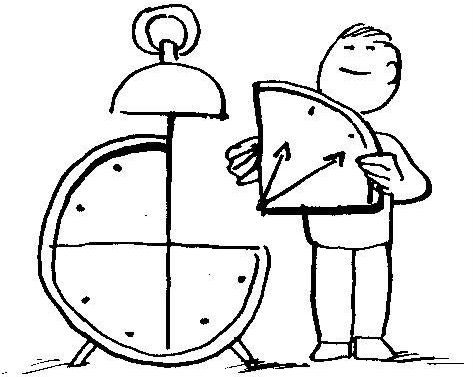
"Acil'e (bekleyemez'e) örnekler: Telefon çalması, kapının çalması, birinin kapıdan içeri girerek sizinle konuşmak istemesi, amirin hemen yapılmasını istediği iş, tuvalete gitme, kaza, hastalık gibi durumların ortaya çıkması, vb.
"Bir faaliyetin önemi, getirdiği sonuçla doğru orantılıdır. Eğer bir faaliyet sizin temel ilkelerinize, bu ilkeler üzerine kurulu değerlerinize, yaşam felsefenize ilişkin sonuca götürüyorsa, doğal olarak onun önem derecesi artar.
"Acile hemen tepkide bulunuruz, ihmal edemeyiz, yapılması gerekir. Önemli olan işler ise o kadar belirgin olarak gözönünde değildir; kendi girişimimizle bizce önemli işlere zaman ayırmamız ve sonuca gitmemiz, fırsatlar yaratıp değerlendirmemiz gerekir. Eğer, «gelişmiş» insan paradigması içinde hareket ederek değer ve ilkelerimizi belirlememişsek, neyin önemli ya da önemsiz, neyin fırsat olup olmadığını anlayamayız; sürekli acil durumlara tepki içinde bir yaşam sürdürürüz. Acil durumlarıı sürekli tepkide bulunarak yaşamlarını sürdürenler, «kalıplanmış» insanın tepkici tutumunu benimsemiş insanlardır.
"Yönetim penceresindeki dört göze bir bakalım: 1. göz hem önemli hem de acil olayları içerir. Hemen dikkatimizi gerektiren ve önemli sonuçları olan işler bu göze girer. Bu gözdeki konuları genellikle, «kriz,» «sorun» gibi kelimelerle ifade ederiz. Hemen bitirilmesi gereken projeler, müdürün yanında çalışan memuru yanına çağırması, ofiste çalışan birinin aniden hastalanması ve onun yerine birinin işlere bakması gibi olaylar bu göze girerler. Bazı yöneticiler sadece bu gözdeki sorunlarla ilgilenirler, sürekli sorun çözmeye, krizleri önlemeye ve sonuç almaya çalışırlar. Bu insanlar bu gözden hiç kurtulamazlar, çünkü bir acil sorunun arkasından bir diğeri gelir. Birini bitirip tam ayağa kalkarken öbür dalga insanı altına alır.
"Dördüncü gözde iseönemli olmayan ve acil olmayan işlerbulunur. Birinci gözde hep acil işlerle uğraşanlar zamanlarının yüzde doksanını Birinci gözde geçirip iyiceyorulduktan sonra, belki zamanlarının ancak yüzde onunu dördüncü gözdeki işlerle geçiriler. Ofisteki kitaplığın düzeltilmesi, kitapların boy sırasına konması gibi. Bu kişiler ikinci ve üçüncü gözdeki işlerle uğraşacak ne zaman ne de istek bulurlar. Bu kişiler streslidir, işten bıkmışlardır, sürekli krizle uğraşırlar ve son »nda işleri kurtarırlar.
"Öbür yandan birçok kişi, üçüncü gözde zaman harçar, bu gözde önemli olmayan fakat acil işler yatar. Bu işler, kişinin kendi değer ve ilkeleriyle ilgili olmayan, başkalarının beklentileri ve öncelikleri çerçevesinde acillik kazanmış olan işlerdir. Örneğin, kendiniz istemediğiniz halde gitmek zorunda olduğunuz toplantılar, yazmak zorunda kaldığınız mektuplar bu gruba girer. Gözüne girmek istediğiniz müdürün kızının mezuniyet toplantısı kaçırmamaya özen gösterirsiniz."
Bu kişilerin ilgileri hep kısa vadeli iş lere yöneliktir, bunlarda krizle uğraşır, başkalarının gözüne girmek ya da şöhrete ulaşmaktemel amaçlarıdır. Kendi amaç ve planları yoktur; kendilerini başkalarının oyuncağı olarak hissederler, yüzeysel ve kırık dökük iliş kiler içindedirler.
"Dördüncü göze zaman verenler, zamanlarının birçoğunu üçüncü gözde de geçirirler. Bu kişiler zamanlarının büyük kısmını sorumsuzca harcarlar. Sık sık işten atılırlar. Kendi geçimleri için başkalarına ve kurumlara bağlı kalırlar."
Yakup Bey'in söylediklerini zevkle dinliyordum ve süratle not alıyordum. Yakup Bey "İsterseniz bugün bir süre daha kalın, biraz ara verdikten sonra ikinci konuyu da gözden geçirelim" dedi. Memnuniyetle kabul ettim.
İnsanlar bana, "Bu kadar çok şeyi nasıl yapabiliyorsun?” diye sorduklarında, onları incitmek amacıyla değil, fakat gerçekten,
"Bu kadar az şeyi yapmayı nasıl beceriyorsunuz?”d iye cevaplarım. PHILIP ADAMS
ETKİLİ YAŞAM İÇİN ZAMAN KULLANIMI
Bir süre ara verip yeniden buluştuktan sonra, çizmiş olduğu şekli masanın üstüne koyan Yakup Bey sözlerine, "İyi yöneticiler esas olarak acil olmayan fakat önemli olan konuların bulunduğu ikinci gözde kalırlar" diyerek başladı ve elindeki kalemle «ikinci göz» dediği yere işaret etti:
"Üçüncü, yani acil fakat önemsiz olayların bulunduğu gözde zaman harcamadıkları gibi, hem acil olmayan, hem de önemsiz olayların bulunduğu dördüncü gözde de zaman harcamazlar; çünkü bu gözlere düşen faaliyetlerin o kadar önemli olmadıklarını bilirler.
"İkinci göz acil olmayan, fakat önemli olan konuları içerir. Bunlar ilişki geliştirme, temel yaşam ilkelerinikeşfetme, ilkelerüzerinekurulu değerleri bulma, kişisel yaşam felsefesini oluşturma, uzun süreli amaçları planlama ve önleyici tedbirler alına gibi faaliyetleri kapsar. Bunlar herkesin bilme, öğrenme imkanının olduğu, fakat bilen için acil olmadığından, bilmeyen için ise önemi kavranmadığından zaman verilemeyen şeylerdir.
"İkinci göze zaman ayıran kişiler gittikçe gelişerek «gelişmiş» insan paradigmasına göre yaşamlarını düzenlemeye başlarlar. Bunun bir parçası olarak önemli konularda kendilerine özgü görüşlerini geliştirirler, dengeli olurlar, disiplinleri vardır, denetleme yetenekleri gelişir ve az sayıda krizle karşılaşırlar.
"İyi yöneticiler acil problemlerin çözümüne değil, fırsat yaratmaya önem verirler ve bu yönde girişim içindedirler.
"İkinci gözde yer alan faaliyetlerin çoğu yöneticiyi etkili kılmaya yönelen türden faaliyetlerdir. Bu faaliyetler üretimle üretim kapasitesi arasındaki dengeyi sürekli kılar.
"Dikkatini ve enerjisini bilinçli olarak zaman matrisinin ikinci gözüne veren kişi, yaşamında önemli bir değişiklik yapmıştır; bu değişikliğin doğal sonucu olarak etkili olma derecesi hızla artar.
"YönetimbilimindeParetoilkesi olarakbilinenkural sonuçların yüzde »ekseninin, faaliyetlerimizin yüzde yirmisinden kaynaklandığını söyler.
"Etkili yöneticiüretimeönemverdiği kadar ilişkilerinede önem verir ve gerçekleştirmek istediği değerleri her zaman göz önünde tutarak zamanını planlar."
Yakup Bey'denörnek vermesini istedim. Somutbir örnekle şimdiye kadar anl?tmış olduğu kavramların yerli yerine oturması gerekiyordu; böyle bir gereksinmem olduğunu söyledim.
Bir Örnek
"Konveyor vebeton pompasıyapanbir fabrikanın sahibi,zamanının , büyük kısmını mühendis, ustabaşı ve işçiler arasındaki sorunları çözmeye ayırmaktadır" diye isteğimi kabul ettiğini belirten bir gülümseyişle sözünebaşladı. "Mühendisustabaşıların kendiniiyidinlemediklerini, verilen talimata uymadıklarını söylemektedir. Ustabaşılar hem mühendisten hem de işçilerden yakınırlar; mühendis işçilerle hiç karşılaşmadığından ustabaşıların işçilerle nasıl uğraştığını, ne gibi sorunlarla karşılaştığını bilmez ve ustabaşılar kendilerini iki hasım taraf arasında kıstırılmış hissederler.
"Fabrika sahibi bir sorundan diğerine koşmayı kendi görevi olarak kabul ettiğinden zamanınınbüyükkısmını zaman matrisinin l.gözünde geçirmektedir."
«Buraya kadar açık mı?» dercesine yüzüme baktı. Ortada anlaşılmayacak bir durum yoktu. Devam etti:
"Kendisine verilen bir öğütü dinleyerek, bu tür acil olaylarla ilgilenmeyi güvendiği ortağına bırakır ve hem mühendisle hem deustabaşılarla ayrı ayrı ilişkilerini geliştirmeye yönelir. Onların çalıştığı ortamda onlarla beraber zaman harcar, onların görüşlerini bütün ayrıntılarıyla dinler, notlar alır. Her iki tarafın görüşünü öğrendikten sonra onları bir araya getirir birbirleriyle iletişim kurmalarını sağlar."
"Mühendis ve ustabaşıların iletişim kurmakta büyük zorluk çektik lerini görür. Bunun üzerine bir yönetim danışma kuruluşuyla iliş kı kurarak ustabaşıların ve mühendislerin haftada üç saat iletişim semi nerlerine katılmalarını sağlar. İletişim seminerleri üç ay devam eder. Fabrika sahibi seminer süresince ve ondan sonra mühendis ve ustabaşılarla buluşmasına devam eder. Böylece onları teker teker ve grup olarak yakından tanımayı başarır.
"Altı ay sonra mühendis ve ustabaşılar arasında çıkan sürtüşmelerin sayısında azalma olduğu gibi, çıkan sürtüşmeleri kendi aralarınd.ı çözmeye yöneldiklerini görür.
Yakup Beyanlayıp anlamadığımı denetlercesine bir süre sustuktan sonra yeniden açıklamasına başladı.
"3. ve 4. gözden zaman alarak, 2. gözdeki işlerle uğraşmak daha olasıdır. Çünkü 1. gözdeki işler acil olduğundan onlardan zaman almak hemen hemen olanaksızdır. Verdiğimiz örnekte fabrika sahibinin güvendiği bir ortağı olduğundan 1. gözdeki acil olayları ona aktarabilmiş ve böylece ilişkiler üzerinde çalışacak zamanı bulabilmiştir.
"Yöneticiler, 1. gözdeki acil ve önemli işleri başkalarına aktarma olanağını her zaman bulamaz. Bu tür yöneticiler, ilgilendikleri, hoşlarına giden, gerçekte yapmak istedikleri fakat önemli olmayan şeylere «Hayır» diyerek 2. gözdeki işleri yapmaya zaman yaratabilirler."
Nasıl «Hayır!» Denir
"Hergün birçok kez «Evet» ya da «Hayır» kararını veririz, ve çoğu kez bu kararları verdiğimizin farkında bile olmayız. Eğer kişisel değer ve ilkelerimizin iyice bilincine varır ve yaşamımızın anlamını tam kavrarsak, «Evet» ve «Hayır» kararlarını doğru veetkili olarak vermeye başlarız.
"«Kalıplanmış» insanda yaşamın etkili ve başarılı olmasını önleyen üç temel eksiklik şunlardır: (1) öncelik verme yeteneğinin eksikliği, (2) önceliklere dayanarak organize etme yeteneğinin ya da isteğinin olmaması ve (3) verilen kararları uygulayacak irade kuvvetinin olmaması. Bu yönleri biraz açalım:"
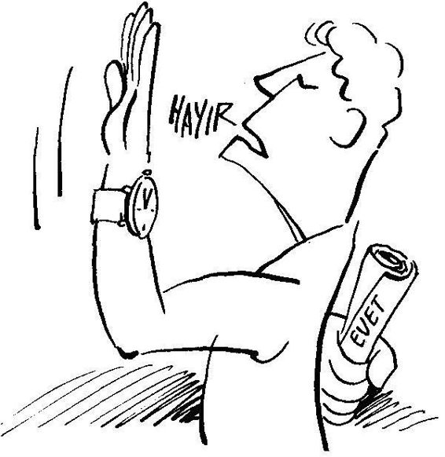
"(1) Öncelik verme yeteneğinin eksikliği. Kişinin kendi yaşamının önceliklerini bilebilmesi, kendine özgü temel değer ve ilkelerini keşfetmesini gerektirir. «Kalıplanmış» insan kendine empoze edilen kalıpların dışında başka değer ve ilke tanımadığından, kendine özgü değer ve ilkeler üzerinde düşünmez ve bunun sonucu olarak da, kendi yaşamına özgü öncelikler söz konusu değildir. «Kalıplanmış» insanın önceliklerini, yaşamının diğer her yönünde olduğu gibi, kendine empoze edilmiş olan kalıplar belirler. Diğer yandan «gelişmiş» insanın önceliklerini kişisel değer ve ilkeler belirler.
"(2) Önceliklere dayanarak organize etme yeteneğinin ya da isteğinin olmaması. «Kalıplanmış» insanın paradigmasında «kendine özgü yaşam öncelikleri» bir anlam ifade etmez, bu nedenle «kalıplanmış» kişi «kendine özgü yaşam öncelikleri» konusunda güdülü değildir. Diğer yandan «gelişmiş» insan kendine özgü anlamlı yaşamı olmasına önem verdiğinden, saptamış olduğu önceliklerin gerçekleştirilmesine özellikle dikkat eder.
"(3) Verilen katarları uygulayacak irade kuvvetinin olmaması. Kendine özgü öncelikleri bulunmayan, böyle bir konunun bilincinde olmayan «kalıplanmış» insanın bu konuda irade kuvvetinden söz etmek bile anlamsız kaçar. Diğer yandan «kendine özgü bir yaşam gerçekleştirme» «gelişmiş» insanın en önem verdiği konudur. Bu nedenle «kendine özgü yaşamı gerçekleştirme» yönünde belirlediği öncelikleri uygulayacak irade kuvvetini bulur; daha doğrusu bulmaya özen gösterir."
Yakup Bey'in söylediklerini can kulağıyla dinliyor hiçbir sözünü atlamamacasına yazmaya çalışıyordum. Bu gayretimin farkında olan Yakup Bey tane tane konuşarak not almamda bana yardımcı oluyor ve hızını ona göre ayarlıyordu. Aynı tempoyla konuşmasına devam etti:
"Birçok kişi kendinde disiplin kusuru bulur, «Ne yapayım, tembelim, yapamıyorum,» derler.Ama, esas mesele kişilerin «kalıplanmış» insan paradigmasının dışına çıkamamalarından, yani kendi değer ve ilkelerini ve yaşamlarının anlamlarını tambilmemelerinden kaynaklanmaktadır. Eğer kişiler «kalıplanmış» insan paradigmasından çıkamazlarsa, birazöncebelirttiğimiz gibi, kendilerine özgü yaşamlarını gerçekleş tirmek için ne bilinçlenmeleri, ne istekleri, ne de irade güçleri olacaktır.
"Zaman matrisinin 2. gözüne düşen faaliyetler, «gelişmiş» insanın temel değerlerinden ve yaşam felsefesinden kaynaklanır.
"Kişiyi dış başarılara, şöhrete götüren faaliyetlere «Hayır,» diyebilmek zordur. Aynı şekilde kişi gayret istemeyen eğlenceli faaliyetlere de kolayca «Hayır,» diyemez. Çünkü bunlar kişiye çekici gelirler. Kişinin içinde ancak yanan «Evet!» varsa, bu tip çekici faaliyetlere «Hayır!» diyebilir."
Yeni ıhlamurlar geldi, Yakup Bey kendininkini yudumlamaya başladı; yazmamı bitirinceye kadar ben ıhlamuruma dokunmadım. Yazmamı bitirince ıhlamurdan birkaç yudum aldım; ve Yakup Bey yeniden konuşmaya başladı.
«Gelişmiş» İnsan Paradigmasında Zaman Kullanım Modelleri
"Zaman kullanım modellerinden ilki, yani yapılacak iş listesi, önceliklere kördür ve bireyin değerleriyle doğrudan ilişki kuramaz. Yapılacak işleri sıralayan bu liste, en basit zaman kullanım paradigmasıdır.
"Takvime yazılan ve zamanı belirtilen yapılacak iş listesi, birinci listeye göre bir aşamadır, ama yaşama yön veren değerlerle ilgisi yoktur.
"Dış başarıya dönük amaçların saptanması, bu amaçları gerçekleştirmek için ne yapılması gerektiği üçüncü zaman kullanım modelini temsil eder. Bu modelde bir planlama vardır ve planın hangi zamanç izelgesi içinde gerçekleşeceği belirlenmiştir. Amaçlar sadece dış başarı ölçütlerine göre saptandığından, bu tür zaman kullanım modeli, ilkeler ve uzun zaman perspektifinden yoksundur. Bu zaman kullanım modelini uygulayan birey planlar yapar ama, neye göre planlama yapar, o konuya pek dokunmaz. Bu nedenle planlamasının altında yatan temeller, genellikle üzerinde pek düşünülmemiş, sadece dış başarı ölçütlerine göre işleyen kalıplardır. Zaman kullanımında üçüncü aşamayı ifade eden bu model, insanın yaşamının değişik yönlerini kapsayan sosyal roller, temel değerler, yaşamın amacı arasında nasıl denge kuracağına dair bir mekanizma getirmez; tek boyutludur.
"Zaman matrisinin 2. gözündeki faaliyetlere öncelik verilerek gerçekleştirilen yaşam, en etkili yaşamdır. Zaman matrisinin 2. gözündeki faaliyetlere öncelik verilerek gerçekleştirilen zaman kullanımına, kolaylık olsun diye, şimdiden sonra «etkili yönetim» adını verelim.
"Etkili yönetimin verimli olarak uygulandığını gösteren altı temel ölçüt vardır. Bunlar, (1) tutarlılık, (2) denge, (3) odaklaşma, (4) ilişkiler boyutu, (5) esneklik ve (6) taşınabilirliktir.
"1. Tutarlılık. Bireyin dünya anlayışı, yaşam felsefesi, sosyal rolleri, amaçları, öncelikleri, planları, istekleri arasında bir ahenk, birlik ve bütünleşme olmalıdır. Planlama yaparken başvurabileceği yazılı kişisel yaşam felsefesi olmalı, yaşamında önemli gördüğü rolleri göz önünde bulundurmalı, ayrıca kısa ve uzun süreli vadelerde gerçekleştirmek istediği amaçları hemen görülebilecek bir yere koymalıdır.
”2. Denge. Yaşamın sağlık, aile, eğitim, para, meslek gibi önemli yönlerinin hiçbirini ihmal etmeden hepsini sağlıklı bir dengede tutmak gerekir. Yaşamın bir yönündeki başarı, diğer yönündeki eksiklikleri giderir diye düşünmemeli, her yönünün kendine özgü istekleri olduğu bilinmeli ve yerine getirilmelidir.
"3. Odaklaşma. Yapacağınız işlerin çoğunluğunun zaman matrisinin 2. gözünde odaklaşmasına önem verip, bu hususu sürekli göz önünde tutmak gerekir. Bunun için en yararlı yol haftalık planlama yapmaktır. Günlük planlama yine yapılabilir, ama hafta, herkes tarafından kabul edilen daha geniş gerçekçi bir zaman dilimini gösterir. Haftalık planlama, günlük planlamaya oranla, sizin önceliklerinizi daha iyi yansıtacak bir denge getirir. Günlük planlama ise krizlere yönelik bir yönetime daha uygundur.
"4. İlişkiler. Zamanla ilgili düşünürken verimlilik çerçevesinde düşünmek uygundur; ne var ki, insanlarla ilişki içinde düşünürken etkililik çerçevesinde düşünmek gerekir. Çoğu kez insan boyutu verimlilikten önce gelir ve sizin paradigmanız bu esnekliği gösterebilecek nitelikte olmalıdır.
"5. Esneklik. Planlama bireyin aleti olmalı, efendisi değil. Planlama kişinin değer, ilke ve misyonunu biçimlendirmemelidir; aksine değer, ilke ve yaşam felsefesi çerçevesinde biçimlenmelidir.
"ö.Tnşınnbilirlik. Zaman kullanım planını kişi gittiği yere götürebilmeli ve istediği zaman çıkarıp bakabilmelidir. Yani kolayca el altında olabilmelidir."
Yakup Bey bana gülümseyerek baktı, son cümeleyi yazmamı bekledi ve "Ben yoruldum, acıktım. Akşam yemeğini beraber yemeye ne dersin?" diye sordu. Ben de yorulduğumu söyledim. Not almaktan kolumda kuvvet kalmamıştı. Kafamdan geçenleri bilircesine, "Merak etme yemekte üzerinde konuştuğumuz konuyu geliştirmeye devam etmeyeceğiz" dedi.
Yakup Bey'in bildiği Laleli'deki işkembeciye gittik. Gösterişsiz fakat temiz ve nefis yiyeceklerin bulunduğu bir lokantaydı. Değişik konulardan konuşarak yemeğimizi yedik.
Bir insanın tecrübesini başından ne geçtiği değil, başından geçenlerden nasıl yararlandığı gösterir. ALDOUS HUXLEY
ZAMANI ETKİLİ BİÇİMDE NASIL KULLANABİLİRİM?
Yakup Bey'le Sahaflarda buluştuk. Saat 11' e geliyordu. "Bugün sizi Fatih'te özelbir lokantaya götüreceğim" dedi. "Burada hem yemeğimizi yeriz, hem de konuşuruz. Bu lokantanın sahibi ile de tanışmanızı isterim. Tanışmaya değer biri."
Vezneciler'den bir minibüse bindik. Akdeniz Caddesi güzergahında giden dolmuş bizi Malta durağında indirdi. Akdeniz Caddesi'nden aşağı doğru inen ilk caddeye girdik ve Perçin Sokak'tan sola döndük. Biraz ileride sağımızda Hünkar Lokantasını gördüm. Bizi güleryüzlü bir bey karşıladı. Yakup Bey bu beyi, "Ferudun Bey, Hünkar Lokantası'nın sahibi" olarak tanıttı. Lokantanın girişinde hemen sağda bir resepsiyon masası vardı. Masa üstünde telefon ve kasa bulunuyordu.i lk girişte hemen pencere yakınında bir masaya oturduk; yüzüm resepsiyon masasına dönüktü. Resepsiyon masasının arkasındaki duvarda Gündüz Kılıç'ın resmi vardı. Ufak bir ağ torba içinde ufak toplar konmuştu. Onun üstünde Beşiktaş Spor Kulübü'nün flaması ve onun da üstünde Beşiktaş futbol takımının resmi vardı. Onun yanında Trabzon Spor Kulübü'nün resmi, onun da yanında MEZE TARİFESİ yer alıyordu. Türkan ve Nazan Şoray'ın resimleri de onun sonunda duvara asılmıştı. Duvarın en üst kısmında bir ut asılıydı. Giriş kapısının tanı karşısında bir asma balkon vardı. Bu balkonun kapıya bakan duvarının ortasında Atatürk'ün resmi asılmıştı. Kabartmalı bir Osmanlı evinin resmi Atatürk portresinin sağında yer alıyordu, solunda da
«MÜESSEMİZ 23:00DE KAPANIR» yazısı bir çerçeve içinde asılıydı. Duvarda lokantayla ilgili bir gazete kupürü ve ayrıca bakırdan desenler de bulunuyordu.
Ferudun Bey, Yakup Bey'e "Hoş geldiniz Hocam; uzun zaman sizi görmedik, hasret kaldık," gibi yakınlık gösterdi.
Yakup Bey, "Ferudun Bey burada öğle yemeği yiyeceğiz ve daha sonra Timur Bey'le biraz sohbet edeceğiz" dedi.
Ferudun Bey, "Memnuniyetle Hocam" diyerek bize bir mönü verdi. Ferudun Bey benim lokantaya yeni olduğumu bildiğinden mönüdeki yemekler hakkında kısaca bilgi verdi:
"Beykoz Paçası; Hünkar Lokantası şimdi Beykoz'dakinden daha iyi yapıyor; Beykoz'da sadece adı kalmış, bizde tadı duruyor. işkembeli nohut yahnisi, Osmanlı sarayından bir örnek; patlıcan beğendisi, diğer adı Hünkar Beğendi. Saray yemeği. Beğendi Kebap da denir. İçinde et yoktur. imam bayıldı; gençlerimiz pek bilmez, oldukça yaygın bir geleneksel yemeğimizdir. Şehriyeli kuzu güveci eski bir İstanbul yemeğidir. Talaş kebabı bir tür börektir, bugün ıspanaklı olarak sunuyoruz. Elbasan tava, saray yemeğidir. Samsa tatlısı, talaş böreğinin hamurundan yapılır, eski bir Türk tatlısıdır. İsterseniz hurma tatlımız da vardır. Ayrıca sakızlı muhallebi de verebiliriz, içinde çam sakızı var, aroma veriyor."
Ferudun Bey yiyecekleri tek tek anlatırken iyice acıktığımın farkına varıyordum. Ben talaş kebabı ısmarladım, Yakup Bey imam bayıldı. Yemek üstüne ikimiz de sakızlı muhallebi yedik. Yemekten sonra Yakup Bey, Ferudun Bey'in kendine yılbaşı için gönderdiği kartı bana gösterdi. Kartta şunları yazılıydı:
Aralık ayının son günü ...
Değişen bir takvim sayfası yani 1993
Oysa savaşlar-açlık ve olumsuzluklard evam ettiği sürecea dı "yeni yıl” olamaz ... olmayacak ...
1992 Bitiyor ...
Yalnızca 1993 Başlıyor ...
Kutlu Olsun!
Bu kartı okuyunca Ferudun Bey'in güleç yüzü daha anlam kazandı; aramızda söylenmemiş bir dostluk kuruldu.
Ihlamur yokmuş;gelen çaylarımızı yudumlarkenYakup Bey, "Etkili yönetici olabilmek için zamanın nasıl kullanılması gerektiği üzerinde konuşmamıza bugün devam edeceğiz" diyerek sözüne başladı.
Etkili Yönetime Geçiş
"Zamanı etkili kullanabilmek için önce «kalıplanmış» insan paradigmasından «gelişmiş» insan paradigmasına dönüşüm yapmak gerekir. En zor kısım budur. Kişi «gelişmiş» insan paradigmasına geçtikten sonra bilinçli olarak kendini geliştirmeye devam eder; ne var ki, bu aşamada da bireyin dört temel adımı bilinçli olarak atabilmesi gerekir. Bu adımlar (1) yaşam rollerinin tanımı, (2) amaçların seçimi, (3) planlama ve (4) günün akışına uydurma olarak isimlendirilebilir.
"1. Yaşam rollerinin tanımı: Birey en belli başlı rollerini yazarak bir liste çıkarmalıdır. Bu pek kolay olmayabilir; fakat insan zamanla kendi için önemli rollerin listesini çıkarmayı başarabilir.
"Bireyin kendine verdiği bazı roller şunlar olabilir; bunlara kişisel roller diyelim: «iyi öğrenci,» «hassas sevgili,» «doğayı seven insan,» «haftada bir kitap okuyan kişi» gibi.
"Aile rolleri olarak birey şu görevleri üstlenebilir: Çocuklarının «baba» ya da «ana»sı, babasının «oğlu» ya da «kızı,» eşinin «karısı» ya da «kocası,» kardeşinin «ağabeyi» ya da «ablası,» akrabalardan birine «amca» ya da «hala,» başka birine «dayı» ya da «teyze,» hatta aynı anda büyük babanıza «torun» olabilirsiniz.
"İş, ya da meslekle ilgili roller: «memur,» «müdür,» «müdür yardımcısı,» «esnaf,» «İş adamı,» «öğretıncn,» «subay,» «avukat,» «şoför,» «doktor,» «helvacı,» «psikolog,» «gazete yazarı» ya da «pilot» olabilir.
"Yukarıdakilere benzer olarak bireyin, toplumla ilgili rolleri vardır: «İyi komşu,» «cami yaptırma derneği başkanı,» «okul aile birliği başkanı» gibi roller almış olabilir.
"Zamanı etkili kullanmak isteyen kişi bütün bu rolleri düşünür ve yaşamında bunların hangileri önemliyse bir iki hafta gözleyerek bir liste oluşturur. Bu aşamada birey ikinci adımı atmaya hazırdır."
”2. Amaçların seçimi: Birey seçtiği önemli her rolle ilgili olarak bir haftada başarmak istediği iki ya da üç amacı yazar. Bu amaçları yazarken birey kendi kişisel yaşam felsefesini, hizmet ifadesini göz önüne alır ve rolleriyle kişisel yaşam felsefesi arasında bir bağ olup olmadığını gözler. Kişisel hizmet ifadesi olmasa bile, her amacın kendi temel değer ve ilkelerine uygunluk derecesini gözönünde tutar.
"3. Planlama: Bu aşamada, yazdığı amaçların nasıl bir zaman cetveli içinde gerçekleştirebileceğini düşünür ve her amaca hangi gün ne kadar zaman verebileceğini planlar. Bazı amaçlar için hergün zaman ayırmak gerekir; bazı amaçlar ise bir kereye özgüdür.
"Örneğin, daha sağlıklı olmak için egzersiz yapmayı amaç edinmiş biri, büyük bir olasılıkla haftada her gün ya da birkaç gün egzersiz yapmayı planlamalıdır; ama, sevdiği birine mektup yazmaya ancak bir kez zaman ayırmak yeterlidir.
"Böylece birey her rolle ilgili amaçları hafta içine dağıtarak zaman planlaması yapar. Bu plan onun tüm zamanını almamalı, kendiliğinden oluşacak ilgi, arkadaş ziyaretleri, zevk için okuma ve gezi yapma gibi faaliyetlere de zaman ayırmalıdır.
"4. Günün akışına uydurma: Kişi her günün başında, o gün için yapmış olduğu planlamayı gözden geçirerek günün gereklerine göre yeni uyumlar yapabilir. Günlük planı sabah gözden geçirmede yarar vardır; böylece günün meşgalesi içine girip, günün gereklerine dalmadan temel roller, amaçlar ve onların altında yatan temel değer ve ilkeler hatırlanmış olur. Bu tür gözden geçirme, neyin önemli ve neyin önemsiz olduğunu bireye hatırlatarak onun önceliklerini yeniden belirlemesine yardımcı olacaktır. Birey böyle bir bilinç içinde kendine özgü günlük yapılacak iş listesi geliştirebilir.
"Bu tür çalışma ay, mevsim ve yıl gibi daha uzun zaman dönemlerinin daha etkili biçimde gelişmesinin temelini oluşturur. Her haftanın faaliyetleri birey için önemli olan değerleri ve amaçları gerçekleş tireceğinden onda, enerji ve üretim birikimi olur; bölük pörçük parçalardan oluşan bir yaşam yerine, birbiriyle tutarlı etkinliklerden oluşan bir bütün ortaya çıkar."
Yakup Bey'e kendinin etkili zaman kullanımı uygulayıp uygulamadığını sordum. "Evet, uyguluyorum" diye cevap verdi.
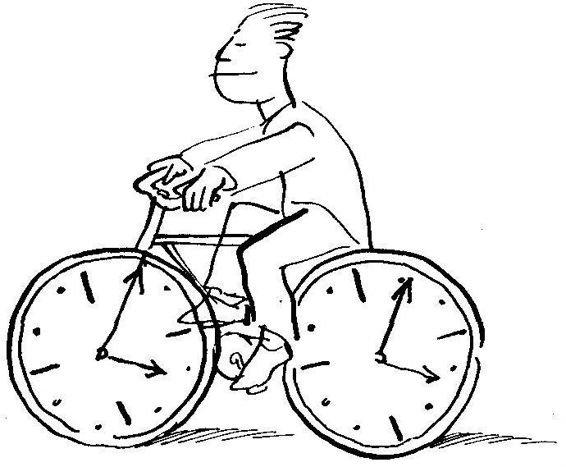
O zaman, benimle haftada iki ya da üç kez buluşmasının kendinin haftalık planlaması içinde olduğunu düşündüğümü söyledim. "Evet haklısınız, haftalık planlamamda sizinle buluşmaya mutlaka yer ayırıyorum” dedi.
Uzun zamandır sormak istediğim, fakat bir türlü sormaya cesaret edemediğim konuyu sorabilirim diye düşündüm ve "Yakup Bey, bana, yaşamımda kimsenin vermediği kadar zaman veriyor ve son derece önemli kavramları, bilgileri vebecerileri benimle paylaşıyorsunuz. Böylebirolanağımolduğundan kendimi şanslıgörüyorum.Nevar ki, aklıma sürekli bir soru geliyor, şimdi onu sormamın zamanı diye düşünüyorum" dedim.
Yakup Bey, "Evet Timur Bey, aklınıza gelen soruyu istediğiniz biçimde sorabilirsiniz; kendinizi tamamiyle serbest hissedebilirsiniz” diye beni yüreklendirdi. Ben de sordum:
"Benimle beraber bulunduğunuz zaman oldukça önemli bir süreyi kapsıyor. Etkili yönetim çerçevesinde düşününce, «Acaba Yakup Bey'in benimle buluşmasının altında yatan temel ilke ve değerler nedir?» diye düşünmekten kendimi alamıyorum. Benimlebuluşmanızdan kuşkusuz yararlanıyorum; ne var ki, bunun size ne gibi bir yararı var, onu göremiyorum" dedim.
Yakup Bey, her zamanki sevecen güleçliğiyle dinledi, yüzüme şefkatle baktı. "Timur Bey, izin verin bunun açıklamasını başka bir buluşmamızdayapayım. Çekindiğimvesakladığımdandeğil;amasorunuz o kadar kapsamlı ve o kadar temel bir yönüme dokunuyor ki, şimdi bu konuya girersem, şu an konuştuğum konuyla ilgili kavramları anlatmaktan vazgeçmem gerekecek. izninizle sorunuzu başka bir gün ele alalım, ne dersiniz?" diye yüzüme baktı.
Cevabını merak etmeme rağmen beklemekten başka çarem olmadığını görüyordum. "Siz nasıl uygun görüyorsanız öyle yapalım" dedim.
Yakup Beygösterdiğim anlayışateşekkür ederekanlatmayadevametti:
Uygulama
"Yukarıda ana hatlarıyla verdiğimiz planlama tamamlandıktan sonra iş uygulamaya kalıyor.
"«Uygulama kolay olacak mı?» sorusuna kolaylıkla, «Hayır!» cevabını verebiliriz. Çünkü birey sadece kendi planıyla değil, diğer kişilerin «acil,» anlayışıyla da uğraşacaktır. Zamanı etkili kullanmaya çalışan birey birçok kere, kendi önceliklerine göre değil, çözümler önceliklerine göre hareket etme durumunda kalır. Bu durumdaki bir kişi için kolay cevaplar yoktur. İnsan kendi kişisel bütünlüğünü koruyarak, korkuyla değil, yaşam felsefesi çerçevesinde, içten gelen bir anlayışın verdiği güçle yeni uyumlar yapabilme durumundadır. İnsanın kendi değer ve ilkelerinin, korku ve çekingenlik nedeniyle gözardı edilmemesi önemlidir.
"İnsanlarla ilgili olarak planlama yaparken, verimliliği değil, etkili olmayı düşünmek gerekiyor. Başka bir ifadeyle, insanlarla ilgili sorunları konuşurken, zaman kısıtlaması koymayın. 10dakika ayırdığınız bir sorun, daha uzun bir süre gerektirebilir ve bu nedenle hem sizi hem de karşınızdakini rahatsız edebilir.
"Rahatsızlıkve düş kırıklığına uğrama insanın beklentilerinin sonucudur; beklentiler ise bireyin kendi değer ve önceliklerinden ziyade toplumun beklentilerinin bir yansımasıdır. Ama, birey «gelişmiş» insan paradigmasını yaşamında uygulamaya kalbini ve kafasını iyicevermişse, o zaman toplumun beklentilerinden çok, kendi değerlerinin davranışlarında yaşamasını düşünecektir.
"Günlük planlarını kendi temel değerlerinin ölçüsünde kolaylıkla uygulama olanağı bulamayan kişi, uyumlamalar yaparak esneklik göstermelidir. Belirli bir planı gerçekleştiremediği zaman kişi kendini suçlu hissetmemelidir. Önemli olanın, olanakların elverdiği sınırlar çerçevresinde yapabileceğinin en iyisini yapmaya çalışmak olduğunu bilmelidir."
Kendine günlükplanını rahatlıkla uygulayıp uygulayamadığını sordum. "Yüzde yüz uyguladığımı söyleyemem. Ama yüzde 60'ın üstünde olduğumu da söyleyebilirim. Çoğu kereler yüzde 80 uygulayabiliyorum. Başka bir deyişle, bu konuda pek şikayetim yok. Önemli olan niçin uygulayamadığımı öğrenmem ve gittikçe daha da bilinçlenmem" diye cevap verdi.
Yakup Bey, "Şimdi kısaca etkili zaman kullanımının ne gibi üstünlükleri olduğunu görelim" diyerek konuşmasına devam etti;
Etkili Zaman Kullanımının Üstünlükleri
"«Öncelikleri belirleyen takvimleme» yönteminin temelinde, «elde edilen sonuç insan ilişkilerinden daha önemlidir» gibi bir anlayış yatmaktadır. Etkili zamankullanımı bunun tam tersini söylemektedir. Etkili zaman kullanımı, «İnsan ilişkileri sonucun temelinde yatar, bu nedenle önceliği vardır» varsayımından hareket eder. Bu varsayım insanı değerli yapan, zengin yapan, bütünleştiren, sağlıklaştıran her türlü süreç ve faaliyeti birinci plana geçirir. İnsana sağlık ve mutluluk getiren ilke ve değerler bireyin faaliyetlerinin temelini oluşturmaya başlar.
"Etkili zaman kullanımı, «Öncelikleri belirleyen takvimleme» yönteminden beş yönde daha üstündür. Çünkü:
"Etkili zaman kullanımı:
"1. İlke merkezlidir. Nelerin önemli olduğunu, olmadığını öncelikler koyarak ayıklar ve bireyin zamanını önemli faaliyetlere yöneltir.
"2. Bireye, vicdanıyla ilgili değerlendirme yapma esnekliğini verir. Birey planını uygularken kendi iç değerleriyle mi yoksa dış baskılarla mı faaliyet yaptığını görürvebir seçim yapar; eğer daha yüksekdeğerler onun değişiklik yapmasını istiyorsa, çekinmeden esneklik gösterir; temel değerlerine uymayan baskılara ise direnir.
"3. Bireyin kişisel misyonunu, oııım değer ve ilkelerini ve uzun vadeli amaçlarını planlamanın temelini sağlar ve insana yön verir. Bir anlamda onu «kalıplanmış» insan paradigmasından kurtararak «gelişmiş» insan paradigmasına yöneltir.
”4. Bireyin rollerini ve rollerin gerektirdiği amaçları belirlemeyi temel aldığından onun yaşamına denge getirir.
"5. Daha geniş bir bağlam oluşturarak yaşamın tiinı anlamını her gün gözöııiiııde tutmaya olanak sağlar.
"Yukardaki beş üstünlüğün altında yatan temel anlayış, insan ilişkilerinin ve insan etkililiğinin, dış başarılara dönük faaliyetlerden daha önemli olduğudur. Böyle bir anlayışa sahip kimse zamanla kendi etkili zaman kullanımını geliştirecektir."
Yakup Bey "Bugün daha fazla devam edemeyeceğim. Önümüzdeki buluşmada dış ve iç başarının ilişkisini ve insan ilişkilerinin kişinin yaşamındaki önemini gözden geçireceğiz” diyerek buluşmamızı noktaladı.
Ferudun Bey'le birkaç dakika sohbet ettik. Kendisine yeni kazanılmış birdost gibibakıyordum. Yüzümdeki sıcakgülümsemeve ayrılırken el sıkışmam bu duygumu ifade etmişti.
Ufak şeylerden zevk alabilmek; lüks yerine zerafet aramak; saygı isteme*.. yerine değerli olmak; zengin olmak yerine kimseye muhtaç olmamak; sıkı çalışmak, sessizce düşünmek ve dürüst konuşmak;y ıldızları, kuşları, bebekleri ve bilgeleri açık kalple dinlemek. İşte benim senfonim!
WILLIAM ELLERY CHANNING
İÇ BAŞARI OLMADAN DIŞ BAŞARIYA YÖNELMEK SAKINCALIDIR
Yakup Bey'le bugün İstanbul Üniversitesinin bahçesine gittik. Giriş kapısından içeriye girdikten bir süre sonra sağa ve sola patikalar ayrılıyor. Bu patikalar etrafı ağaçlarla çevrili, oturmak için kanepelerin konduğu ufak açıklıklara gidiyor. Bu kanepelerden birine oturduk; güzel bir gündü. Ağaçlardan kuş cıvıltıları geliyordu.Yüksekten geçen bir uçağın sesiyle karışarak uzaktan şehrin uğultusu bize ulaşıyordu.
Yakup Bey hayatından memnun bir insanın yüz ifadesiyle sırtını kanepenin arkasına dayadı ve konuşmaya başladı:
"Daha önce üzerinde konuştuğumuz kavramları yeniden gözden geçirme amacıyla, tanık olduğum bir olayı anlatarak konuya gireceğim."
Gerçek Bir Öykü
"Seyfi adıyla anacağım yakın akrabalarımdan biri marangozluk, kereste alım satımı işleri ile uğraşırdı. Güneydeki sahil şehirlerimizin birinde kendi evini yapmış, zengin olmamakla beraber oldukça rahat bir yaşamı sürdürecek düzeyde gelire sahipti. Evliydi ve dört kızı vardı.
"Seyfi gelişen sahil şehrinde emlakçilik ve arsa alım satımı ile ilgilenmeye başlamış ve birkaç yılda gelirini hızla artırarak şehrin ileri gelen zenginlerinden biri oluvermişti. Arsa alım satımı ile ilgili olarak sürekli emlakçılık ve arsa spekülasyonu yapan kişilerle zaman geçirmeye başlamış, eski meslek arkadaşlarından ayrılmıştı.
"Seyfi sık sık İstanbul'a gitmeye başlamış ve oradaki pavyonlardan birinde çalışan güzel bir kadını kendine metres edinmişti. Artık karısı ve çocuklarını ender görüyor, kendine tuttuğu şoförki bu kişinin aynı zamanda onun fedaisi olduğunu söylüyorduaracılığıyla onlara haftalık geçimlerine yetecek para yardımı yapıyor, geri kalan zamanını iş ve metresine hasrediyordu.
"Bir süre sonra hem İstanbul'da hem de sahil şehrinde daireler tutarak, kendi hangi şehirde ise metresinin de orada oturmasını istedi.
"Ben kendisiyle çocukluktan arkadaştım. Emlak işinegirdikten sonra benimle görüşmek istediğinde kendini 15 yıldır görmemiştim. İlk buluşmadan sonra iki yıla yakınbir süreonunla sık sıkgörüştük. Günde birbüyük rakı ya da viski içmezse gerginleşip hırçınlaşıyordu. Metresini çok kıskanıyordu; biraz ayrı kalınca onun başkalarıyla cinsel ilişki kuracağından kuşkusu vardı. Bir keresinde, metresinden bir hafta kadar ayrı kaldıktan sonra onun boynunda, bacaklarında, hatta cinsel organının yakınlarında siyahlıklar görmüştü ve bu siyahlıkların sevişirken emilme nedeniyle oluştuğu kuşkusu içindeydi. Metresiyle yüzleştiğinde, «Ne yani, ben rahibe miyim; gönlüm kimi çekerse onunla olurum,» dediğini söylüyordu.
"Metresinden bir çocuğu olursa onu kendine daha çok bağlayacağını düşünmüş olacak herhalde, onu hamile bıraktı. Bir ara bana, «Eğer çocuk oğlan olursa bu iş devam eder, aksi halde yatar,» dediğini hatırlıyorum. Bir oğlan çocuğu babası olmayı çok istiyordu ve dört kız doğuran karısına bu nedenle kızgınlığı vardı.
«Çocuk kız doğdu. Herkes büyük düş kırıklığına uğradı. Seyfi'nin içkiye düşkünlüğü daha da arttı. Bazan oturur, ağlardı. Mutsuz bir insanın yaşayan tablosu haline gelmişti. İşleri takip edemiyor, kendine arkadaş bildiği herkesten kazık yediğini düşünüyordu. Bana «Sen psikologmuşsun, ne olur bana yardım et!» diyemiyordu, ama beraber olabilmek için her türlü olanağı yaratıyordu.
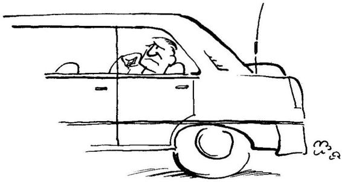
«Seyfi ile beraber geçirdiğim süre benim için çok öğretici oldu. İlk defa, parasal zenginliğe kavuşmuş birinin, eski fakir halinden daha mutsuz olduğunu gözlerimle görüyordum. Daha doğrusu para ve mevki ile gelen dış gücü dengeleyebilecek karakterden gelen iç kuvvet olmadığı zaman bir kişinin aile yaşamının, sağlığının, işinin, ve mutluluğunun nasıl paramparça olabileceğine tanık oluyordum. Babamın, «Allah'ım, hakkımızda hayırlı ne ise onu ver,» duasının anlamını şimdi daha iyi anlıyordum."
Yakup Bey anlatırken sanki olaylar gözlerinin önünde yeniden beliriyormuş, onları yaşıyormuş gibi bir hali vardı. Bir süre hatıraları içindi' kaybolduktan sonra, "Özet olarak anlattığım gerçek yaşam öyküsü, dışa dönük parasal ve sosyal başarılardan önce iç başarının gerçekleştirilmesi gerektiğini göstermek içindi" dedi ve sözlerine devam etti: "«Kalıplanmış» insan paradigmasında yaşamını sürdürürken, «gelişmiş» insanın yüklenebileceği olanaklara kavuşan biri, yeni yaşamının güçlü olanaklarını eski kalıpları içinde yönetemez; yeni olanaklar altında parçalanan eski kalıplarıyla birlikte kendi dünyası da parçalanır."
Onun bu sözleri küçükken sık sık duyduğum hikayeleri anımsattı. Bu gerçek yaşam hikayelerinde Çukurova'daki bazı pamuk çiftçilerinin iyi hasat yıllarında Adana'daki barlarda paralarını nasıl har vurup harman savurdukları, eş ve çocuklarına pek bir şey kalmadığı anlatılırdı. Yakup Bey'e düşündüklerimi söyledim. Yakup Bey, "Bu tür olaylar sanıyorum bizim düşündüğümüzden de çoktur" dedi ve sözüne şöyle devam etti:
Toplumsal Başarı da İç Başarıya Dayanır
"Parasal başarı bu kişiler için ne kadar sakıncalı ise, toplumsal baş arı da o kadar sakıncalıdır. Kendi yaşamını yönetmesini bilmeyen biri şöhrete ulaşırsa, şöhretin getirdiği güç ve olanakların altında ezilerek kişisel mutluluğunu kaybedebilir. Önce kişisel, özel başarı daha sonra toplumsal başarı gelir. «Gelişmiş» insan temeli olmadan hemen toplumsal başarıya yönelmenin sakıncalı ve tehlikeli olduğuna inanıyorum.
"Sizin Nesrin'le olan ilişkinizde ne kadar tehlikeli bir noktaya geldiğinizi umarım şimdi daha iyi anlıyorsunuzdur" diyerek beni şaşırtan bir konuya geçti. "Siz Nesrin'le pek bilincinde olmadığınız bazı kalıpların etkisiyle evlenmek istediniz” diyerek verdiği örnekle ilgili açıklamasını sürdürdü. "İstediğiniz daha çok refah, prestij, rahat bir yaşam biçimiolabilirdi. Ne varki, yeni olanakların gerektirdiği iç kuvvet henüz gizde oluşmamıştı; yeni sosyal ve psikolojik ortamın altından kalkabilecek zihinsel ve duygusal kuvvete ve bilinç düzeyine henüz ulaşmış değildiniz. Eğer Nesrin sizinle evlenseydi, iç bunalımlarına düşerdiniz diye düşünüyorum. Sizinle evlenmeyi kabul etmemekle Nesrin'in size ne kadar iyilikyaptığının farkında mısınız?"
Yakup Bey'in söylediklerine katılıyordum. Düşündüklerimi ona söyledim. «İyi öyleyse, anlaştık» dercesine gülümsedi ve konuşmasına devam etti:
"Çok tanıdık edinme, birçok kişiyle ilişkiler kurma, tanınmış olma gibi toplumsal başarınının kökünde, birçoklarının iddia ettiği gibi, iletişim teknikleri yatmaz. Bazı kişilik teknikleri ve becerileri kullanarak insan sosyal ilişkilerini düzgünleştirebilir. Ne var ki, birkaç iletişim tekniği ve iletişim becerisi kişiyi sosyal başarıya götüremez. Gerçekten dost sahibi olma, güvenebileceği ilişkiler geliştirme gibi sağlıklı ve sürekli toplumsal başarı için «gelişmiş» insan paradigmasına dayalı bir karaktere sahip olmak gerekir.
"Evet, bu işin kısa yolu yok. Kişisel başarı kazanılmadan, sağlıklı toplumsal başarı sürdürülemez." Son cümleyi sanki bana değil de kendine söylüyormuş gibiydi. Kendi yaşamında görmüş, doğruluğuna inanmış olduğu bir temel ilkeyi dile getiriyordu sanki.
Bir süre sessiz kaldıktan sonra, açıklamasına devam etti:
"Kişinin kendini sevebilmesi için, önce kendini bilmesi ve kendini doğru değer ve ilkeler çerçevesinde geliştirmesi, yani karakter inşa etmesi gerekir. Bu olmadığı zaman kişi esas temelden yoksundur. Bu esas temeldenyoksun olan kişiise, diğer insanlarla sağlıklı dayanışmaya giremez, çünkü karşılıklı dayanışmada kullanacağı temel yoktur.
"Demek oluyor ki, karşılıklı dayanışmada gerekli en önemli unsur, kişinin bilgisi, zekası ya da kullandığı iletişim tekniği ve becerisi değil, bizzat kendi karakteridir. Söz ve davranışlarımızın bizim özümüzü temsil etmesi gerekir, yüzeysel teknik ve becerileri değil.
"Hatırlıyorsunuz etkililiği, üretim ve üretim kapasitesi arasındaki denge olarak tanımlamıştık. Üretim kapasitesi insan ilişkilerindeki sağlık ve süreklilikle oluşur. İnsan ilişkilerinde başarılı olabilmek için ise, sağlam karakter zemini üzerinde ilişki kurmamız gerekiyor. Bu zemin olmadan, geçici tekniklerle kişisel etkililik gerçekleştirilemez."
Yakup Bey, ''Kişiler arası ilişkiler yaşamımızın en önemli yönlerinden biri olduğundan bu yöne biraz daha değinmek istiyorum" diyerek açıklamasına devam etti:
"İki kişinin arasındaki güven ve inanç, duygusal banka hesabı olarak düşünülebilir. Eğer birbirlerine güven yüksekse hesaptaki mevduat yüksektir, eğer kişiler birbirine güvenmez ve inanmazlarsa o zaman lhesap boşalmış demektir."
Yakup Bey sözüne devam etmek üzereyken ben «duygusal banka hesabı» analojisinden rahatsızlığımı dile getirdim. Aramızda şöyle bir konuşma oldu:
Timur: "Yakup Bey, ben «duygusal banka hesabı» analojisinden rahatsız oldum."
Yakup Bey: "Bu analoji sizi niçin rahatsız ediyor?"
Timur: "Kesinlikle bilmiyorum; belki duygu kavramı ile banka hesabını biraraya getirmek bana pek tutarlı gelmiyor."
Bir süre düşündükten sonra,
Yakup Bey: "Esasında size hak veriyorum; duygusal ilişkilerin anlam yüklü nüanslarını, inceliklerini ve çetrefilliğini yansıtmaktan uzak."
Timur: "Ayrıca, banka hesabına yatırım yapılır; büyük olasılıkla siz de duygusal banka hesabına yapılan yatırımdan söz edeceksiniz. Ne var ki, «hesaba yatırım yapma» kavramı ilişkilerin doyumlu olmasına ve anlama gereksinmelerine değil, mekanik yönüne ağırlık veriyor."
Yakup Bey: "Söylediklerinize bu yönüyle de katılıyorum. Ne var ki, bu sakıncaları hatırda tutarak, yine de «duygusal banka hesabı» kavramını kullanmak istiyorum. Çünkü anlatıma kolaylık getiriyor; bu kadar çetrefilli ve çok yönlü bir konuyu basit bir dille ifade etme olanağı veriyor."
"Peki" demekten başka bir çarem yoktu. Anlaştık anlamında kafamı salladım, Yakup Bey konuşmasına devam etti:
"İki kişi arasında duygusal hesap kuvvetliyse ve ağzına kadar doluysa, bu iki kişi arasındaki bazı hatalar çabucak halledilebilecek, üzerinde durulmayacak, her iki kişi de birbirinin iyi yönlerine önem verecektir. Ama, iki kişi arasındaki duygusal hesap boşalmışsa, söyledikleri her söze dikkat etmek zorundadırlar, her an yanlış anlama ve kavga başgösterebilir.
"Eğer duygusal hesaba sürekli yatırımlar yapılarak banka hesabı beslenmezse, çekilen mevduatın yerine yenisi konmadığından zamanla hesap biter ve olumsuza doğru bir gelişim başlar. Eş, ana-baba, kardeş,ç ocuk, iş ortağı gibi sürekli ilişkide olduğumuz insanların hesabına yatırım yapmayı hatırlamak bilgeliğe işaret eder. Bir çiçek alma, iyi bir davranıştan sonra teşekkür etme, özel günlerde ufak bir hediye almayı hatırlama gibi hesaba sürekli yatırım yapma «bilinci» önemlidir. Birçok •rkadaşlıkta, evliliklerde, ilişkilerde bu bilinç maalesef zamanla kaybolur.
"Bankaya para yatırma ve çekme gibi, ilişki hesabına olumlu duygusal yatırımlar yapma kavramı, karı-koca ilişkisinde olduğu kadar çocuklarla kurulan ilişkilerde de geçerlidir. Günlük yaşamda duygusal hesaptan sürekli çekmeler olur; ama, çekilenin yerine ufak ufak yatırımlar yapılıyorsa, çekilenler o kadar etkili olamaz. İlişkilerinde duygusal banka hesabını sürekli dolu tutmaya özen gösteren kişinin ilişkileri olumlu yönde gelişmeye devam eder."
Bu kavram hoşuma gitmişti. Yakup Bey bir süre sustuktan sonra •çıklamasına devam etti:
Duygusal Hesaba Yapılabilen Altı Tür Yatırım
"Kişilerin duygusal banka hesabına altı tür yatırımları olabilir. Bunlar (1) Kişiyi anlama, (2) küçük şeylere dikkat etme, (3) verilen sözü tutma, (4) beklentileri açıklığa kavuşturma, (5) kişisel bütünlük gösterme ve (6) hata yapınca özür dilemedir.
"Şimdi bunları biraz daha açarak anlatayım:
"1. Kişiyi anlamak. Kişiyi gerçekten anlamaya çalışmak yapılabilecek en önemli yatırımdır ve diğer bütün yatırımların temelini oluşturur. İnsanı anlamadan onun için neyin önemli olduğunu anlamak olanaksızdır. Sizce önemli olan diğer insan için ufak bir ayrıntı olabilir. Sizce önemsiz bir ayrıntı ise diğer insan için önemli bir konu teşkil edebilir. Çocuklarla ilişkilerimizde genellikle bu yönleri unuturuz. İşimiz arasında çocuk gelir bizden birşey ister; bizim için önemli işin arasında çocuğun istediği bize çok ufak bir ayrıntı olarak gözükür, ama çocuk için o önemli bir konudur.
"Neyin iyi bir yatırım olacağını çoğu kez kendi düşüncelerimiz çerçevesinde karşıdakine yansıtırız. Bizce önemli olanın onun için de önemli olacağını düşünürüz. Kişi bizden küçükse, biz küçükken önemli olanın onun için önemli olacağını zannederiz.
"«Başkalarına, size davranılmasını istediğiniz gibi davranın,» sözünü ben, «başkaları tarafından anlaşılmak istediğiniz gibi, başkalarını anlamaya çalışın,» olarak anlıyorum. Çokçocuklu ve başarılı bir anni', anne olarak başarısını neye borçlu olduğu sorulduğunda, «Çocuklarımın hepsine aynı muameleyi yapmam; içlerinde bulundukları duruma göre davranırım; böylece hepsine aynı sevgiyi göstermiş olduğum kanısındayım,» demiştir.
"2. Küçük şeylere dikkat etmek. Ufak yardımlar, nezaket, düşünce, büyük sonuçlar verir. Schopenhauer,«nezaket akıllılıktır» der. Ufak nezaketsizlik, kabalık, saygısızlık ve ilgisizliğin önemli olumsuz sonuçları olabilir. Özellikle kişinin kendini güçlü hissetmediği yeni durumlarda gösterilecek nezaket ve iyi muamele son derece etkili olur. Bu nedenle hava alanlarındaki görevlilerin davranışları büyük önem taşır. Bir yabancı ülkeye gelen kişi, o yörenin dilini, yasasını, geleneklerini bilmediğinden günlük yaşamında alışageldiği denetimi kaybetmiştir; bu nedenle kendini günlük çevresindeki gibi güçlü hissetmez; kaygısı yüksektir. Yeni ortamda edindiği ilk izlenimler o ülke ve kültür hakkındaki temel izlenimler olarak aklında kalacaktır. Bu nedenle hava alanında görevlendirilen kişilerin, özellikle gelen yolcuların pasaport işlemini yapan polislerin özel kurslardan geçerek bilinçlenmesinde büyük ulusal yarar vardır.(35>
”3. Verilen sözü tutmak. Verilen sözü tutmak duygusal banka hesabına önemlibiryatırım, tutmamak ise hesaptan büyükmiktarda çekiştir. Ana ve babalar bunun farkında olmalıdır. Çocuklarına ya söz vermemelidirler ya da verdikleri sözü mutlaka yerine getirmelidirler. Verilen sözün çocuk için taşıdığı önem derecesine göre, çocukların ana-babaya olan güvenleri artacak ya da kaybolacaktır.
"4. Beklentileri açıklığa kavuşturmak. Ne yapılacağı, nasıl yapılacağı, ne zaman yapılacağı konularındaki beklentiler açıklığa kavuşturulmazsa, farklı beklentilerin olması, kişilerdeumut kırıklığına yol açar. Baba, arkadaş, meslektaş, doktor, öğretmengibi farklı rollerimiz vardır; bu rollerin getirdiği sorumlulukları bilinçli olarak yerine getirip ya da getirmediğimize göre sorunlarla karşılaşır ya da karşılaşmayız. «Kim, neyi, ne zaman, nasıl yapar?»ın açıklığa kavuşturulması gerekir. Aksi halde, yanlış anlamalar, umut kırıklıkları ve gönül kırgınlıkları ortaya çıkar. 35
(35) Ege Cansen'in Atatürk Havalimanı’ndaki gözlemlerini daha önce Bölüm 14'de vermiştik. Aynı havalimanında yazarın gözlemleri okuyucu Yeniden İnsan insana'da (s.237) bulabilir.
"Örneğin evlilikte, birçok beklenti ifade edilmemiş sözsüz vars.ı yımdır ve her iki tarafın bunları bildiği kabul edilir. Bunun gibi kurulan her ilişkidebutürbeklentiler olabilirvebu nedenlebeklentilerin farkına varıp onları açıklığa kavuşturmak önemlidir. Başlangıçta beklentileri açıklığa kavuşturmak gerçekten cesaret işidir; sanki arada hiç fark yokmuş gibi hareket etmek daha kolaydır. Ne var ki, ilk başlarda gösterilen bu cesaret, daha sonra ilişkinin sağlıklı olmasıyla ödüllendirilir.”
Yakup Bey, "Yine evlilikle ilgili bir konuda örnek vererek kavramları somutlaştıralım" diyerek konuşmasını sürdürdü:
"Türk toplumunda evlenen iki gencin aileleri, yani «kız tarafı» ve «oğlan tarafı,» yeni ailenin mutluluğunu yaralayacak ölçüde birbirleriyle ilgili beklentiler geliştirebilirler: «Ne zaman elimizi öpecekler,» «Oğlan tarafına getirilen hediye mi daha pahalıydı, yoksa kız tarafına getirilen mi?» «Geçen ay onlara iki defa gittiler, bize sadece bir kez geldiler!» türünden beklentiler nedeniyle, kısa süre sonra kız ve erkek tarafı arasında gerginlik ve küsme kendini gösterir. Bu tür ilişkilerde beklentiler dizisi o kadar uzun ve karmaşıktır ki, eninde sonunda mutlaka beklentilerden biri yerine getirilemeyecektir."
Yakup Bey, "Henüz evlenmediğin için belki de bu konunun bizim toplum için ne kadar önemli olduğunu bilemezsin" dedi.
Kendimi tutamadım, gülerek, "Yakup Bey, benim sekiz ağabeyim ve iki ablam var. Her birinin evliliğini az çok biliyorum. Eğer abla ya da ağabeylerim doğdukları kasabadan biriyle evlenmişse, iki aile arasındayani kız eviyle, oğlan evi arasındabir süre sonra mutlaka küskünlük, kırgınlık ortaya çıkmıştır. Ancak büyük şehirden evlenenlerin aileleriyle ilişki kurma olanağı olmadığından küsme ve kırılma ortamı doğmamıştır” dedim. Yakup Bey gülerek, "Benimkinde deaynı" diyerek beni onayladı.
"Peki yeni evli gençlerin bu durumdan kurtulması için çare nedir?" diye bana bir soru yöneltti.
Aklıma ilk gelen cevabı verdim: "Anne ve babalarımızın biz çocuklarının mutluluğunu, kendi kişisel beklenti ve hırslarının üstünde tutmayı öğrenmeleri gerekir" dedim.
Yakup Bey, yüzüme biraz muzip bir tavırla baktı. Daha sonra, "Ana ya da babanı değiştirmek sizin denetiminiz altında mı?" diye, şaka yaparcasına sordu. Ne demekistediğini pek anlayamamıştım. Sorusunu açarak yineledi: "Anne ya da babanızı istediğiniz yönde değiştirmek sizin denetiminiz altında mı? Yani siz istediniz diye onlar değişebiliyorlar mı?"
Doğrusu kimsenin, başka bir kimseyi rahatlıkla değiştirebileceğini zannetmiyordum; zannetmiyor değil, inanmıyordum. Bunu söyleyince, Yakup Bey, "Bütün konuşmalarımız boyunca paradigma değişiminin ne kadar zor olduğunu vurguladım. Kişi istese dahi kolay kolay eski paradigmasından kurtulamaz. Bu nedenleana vebabanız isteselerdahi kolay kolay değişemezler. Eğer mutluluğunuzu onların yıllardır süregelen ve toplum değerleri tarafından perçinlenmiş paradigmalarının değişmesine bağlıyorsanız, size «iyi şanslar» dilemenin ötesinde bir şey yapamam."
Yakup Bey susmuş beni izliyordu. Düşünüyordum. Ama kafam bomboştu. Eğer anamın-babamın beklentilerini değiştirmezsem, ben bu konuda başka ne yapabilirdim?
Bir cevap bulamadığımı söyledim.
"Evli çift olarak sizin denetiminiz altındaolan bazı seçimleriniz yok mu?" Ne dediğini yine anlayamamıştım. Daha fazla sorgulamadan sorusunun cevabını kendi verdi.
"Kanımca Türkiyedeki yeni ailelerin bu insafsız durumdan kurtulmalarının tekyolu var: Evlilikleriyle ilgili onlara empoze edilen kalıpların etkisinden bilinçli olarak kurtulup, yeni kurmuş oldukları evliliğin sınırlarını kendi beklentileri çerçevesinde oluş turmaları;yani «kalıplanmış» insanların evliliğinden çıkarak «gelişmiş» insan paradigması içinde evliliklerini oluşturmaları. Bu kişinin denetimi altında yapabileceği bir etkinliktir. Anasını-babasını değiştirmeye yönelen kişinin başarılı olma şansı çok düşüktür.
Öğrendiğim kavramlar Yakup Bey konuştukça canlanıyordu; ne var ki, kendi düşüncemde henüz onları kullanacak hale gelmediğimi gözlüyordum.
Yakup Bey, konuyu geliştirmeye devam etti:
"Kişiler arası duygusal banka hesabına yatırım yapmada önemli dört ilkeyi gördük: Bunlar: 1. kişiyi anlama, 2. küçük şeylere dikkat etme, 3. verilen sözü tutma, ve son olarak 4. beklentileri açıklığa kavuşturmadan söz ettik. Şimdi beşinci ilkeden söz edeceğim:
"5. Kişisel bütünlük. Kişisel bütünlük, yani duygu, düşüm i' w davranışı arasında tutarlılık göstermek, güven ve inanç yaratır w bıı çok yatırımın temelini oluşturur. İki yüzlü olan kişiye kimse güven duyamaz. Dürüstlük ve bütünlük arasında fark vardır; dürüstlük olanı olduğu gibi söylemektir. Kişisel bütünlük ise, düşündüğü gibi konuşan, verdiği sözü tutan, konuştuğu gibi davranan kişinin özelliğidir.
"Çevresinde olmayan kişilerin' arkasından konuşmak bütünlüğe aykırıdır. Böyle bir kişi zamanla herkesin güvenini kaybeder. Yüzüne iyi, arkadan kötü konuşan kişi iki yüzlüdür. Dayanışma paradigmasında bütünlük şudur: Herkese aynı ilkeler çerçeveside davranırsın; davranış kişiye vebağlama görebüyük değişiklikler göstermez. Bu durum güven doğurur. Dedikodu, başkalarının sırrını söyleme, kişinin karaktersizliğini ortaya kor ve ona duyulan güveni sarsar.
"6. Hata yapınca içtenlikle öziir dilemek. Kişi hata yaptığının farkına vardığı zaman içtenlikle özür dilemeyi, hatasını kabul etmeyi bilmelidir. «Evet, yanıldım, özür dilerim,» gibi. Samimi olarak özür dileyebilen kişi kendine güvenen ve iç zenginliği olan kişidir. Bütün değerini başkalarının kendine verdiği değerde arayan «kalıplanmış» birey kolay kolay özür dileyemez. Özür dilerse diğerlerinin kendini «zayıf» göreceğinden ve önemsemeyeceğinden korkar.
"Zihnin yaptığı düşünüş, görüş ve algılama yanılgılarından kaynaklanan hataları insanlar genellikle affederler. Ne var ki, kalbin bilerek yaptığı kötü niyetten kaynaklanan incitmeler kolaylıkla affedilemez."
Vatandaş ve Devlet Arasındaki İlişki
Yakup Bey çantasından birtomargazete kupürü çıkararak masanın üstüne koydu. Yeni bir konuya geçerken yaptığı gibi bir süre sessiz durdu, ıhlamurundan birkaç yudum aldı ve, "Timur Bey, kişiler arasında duygusal banka hesabı nasıl varsa, devletle vatandaş arasında da bır duygusal banka hesabı olduğunu düşünebiliriz" dedi.
"Ailede ana-babanın karşılamaları gereken en önemli ilk gereksinim çocuklarına güvenli bir ortam vermektir. Aynı şeyi vatandaş devletten ister. Bu gereksinim karşılanmadığı sürece vatandaş huzur duyamaz ve iş hayatı, sanat faaliyetleri, bilim ve kültür gibi alanlarda kendi potansiyelini tümüyle gösterecek girişimlerde bulunamaz.
"Eğer devlet ilke merkezli paradigma üzerine kurulmuşsa ve ilkelerin geçerliği yasaların uygulanmasında günlük yaşamda gözlenebiliyorsa, vatandaş kendini güven içinde hissedecek ve tüm potansiyelini güven duygusu içinde gerçekleştirebilecektir.
"Sana verdiğim şu gazete kupürleri bu yönden pek iç açıcı durumda olmadığımızı gösteriyor, dedi ve gözden geçirmem için önüme sürdü.
Gelişigüzel gözden geçirmeye başladım.
Hukukçulara göre korunmanın tek yolu kaldı:
SİLAH
Çağdaş Katılımcı Avukatlar, avukatların meslek sorunları ve çözüm yollarım araştırdı Sonuç hayli ilginç: "Korunmak için silah tek çare. Çağdaş Katılımcı Avukatlardan Oya Şahin anket sonucunu, "Hakkını en iyi savunması gereken bir avukatın bile ■silaha yönelmesi toplumumuzun hangi noktaya geldiğini gösteriyor” diye yorumluyor. Anketin ortaya çıkardığı diğer sonuçlar da düşündürücü.
(NOKTA dergisi, 10-16 Ocak 1993.)
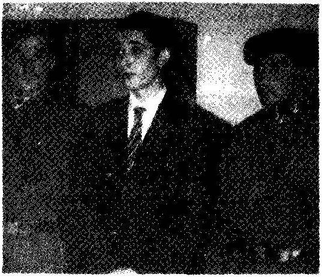
71 yaşındaki AH Rıza Atcs He eş:! Nadide îliümüne sebep oian 17 yaşındaki LP.. iki gün önce tahliye oldu.
İki can aldı üç ay yattı
GÖZTEPEde, î stndan izinsiz aldtğs oto mobiile htz denemesi yaparken, yo! kenarında oturan 71 yasındaki emekli Ali Rıza Avcı ve 60 yaşındaki ' adîde Avcı'ya çarparak ölümlerine neden’ oian ve 3 aydır tukukîu yargılanan 17 yaşındaki Hse Öğrencisi i . P. ö nceki gün lahftye oldu . Kadıköy 3'ncü Asliye Cez..a Mahkemesi'ndeki duruşmada LP, 'Beni affedin, tahsil hayatım var' dedi. üşen genci ön 4 yıl s, 30 biri Üra ag-r para cezasına çarptıran hak im .. «laha sonra ya. ırn kutuk olduğunu göZönjne alarak tezastr 4 milyon !ua paraya çevirerek tahliyesine harar verdi. Duruşmayı izleyen liseli arkadaştan, karar: alkışlarken, Avcı çiftinin karara tepki gösterek, 'Vicdanian rahatsa dw* * miz yok. Boyke adalet olmaz" dediler . ''
(Hürriyet, 29 Ekim 1992)
20 Ağustos 1992 tarihli Hürriyet gazetesinin 12. sayfasını tümden kapsayan büyük başlık:
Her gün yeni bir yolsuzluk haberi patlıyor. Ama kimmıılun "tık" çıkmıyor
Ahlak da yok, devlet de!
Gazeteler; eski hükümetin, yeni hükümetin yolsuzluk haberlerinden geçilmiyor. Eskiden yeri göğü oynatan haberler artık bir kulaktan giriyor, ötekinden çıkıyor. Bakanları, genel müdürleri böyle olan memleketin vatandaşları da boş durmuyor. Onlar da devleti dolandırmayı birinci hedef sayıyor. Sonunda ahlakın olmadığı, devletin ise yok sayıldığı bir ülkede yaşar olduk.
Tüm sayfa baştan sona yapılan değişik yolsuzluk haberlerinin tarihçeleriyle dolu. Sağ alt köşede DYP İstanbul Milletvekili Tınaz Titiz ileyapılmış bir söyleşi var. Bir soruya cevap olarak Tınaz Titiz şunları söylüyor:
TiTiZBir toplum, sadece yazılı kuralları ile müreffeh bir toplum haline gelemez. Bir toplumda ahlak değerleri dejenere olmuşsa, her gün bir yasa yapsanız, insanlar bunu bir yanından delip, ahlak dışı istemlerini tatmin etmenin yolunu bulacaklardır.
Serbest piyasa sisteminin kurallarını ve kurumlarını yerleştirseydik, sorunlar büyük ölçüde çözülürdü. Ama bu da yetmezdi. Bugün sahip olduğumuz siyaset anlayışının bir alternatifine ihtiyacımız var. Bugünkü anlayış ile özendiğimiz çağdaş toplumların üyesi olamayız.
SORUBugünkü siyaset anlayışınıgizli kapaklı ve yozlaşmış olarak mı tanımlıyorsunuz?
TİTİZEvet. Tamamiyle. Ve ”2. Cumhuriyet" tartışmasından ziyade, "2. siyaset anlayışının" tartışılması gerektiğini düşünüyorum.
Boyabat ilçesi'nde iki küçük çocuğa tecavüz ettiği iddiasıyla tutuklanan birinin halk tarafından linç edilmek istemesiyle ilgili bir haberi gösterdi. Bu haberin yanı sıra bazı yorumlar da yer alıyordu. 19 Haziran 1993 günkü Hürriyet gazetesinin Boyabat olaylarıyla ilgili olarak BOYABAT NOTLARI başlığı altında Nuriye Akman ve Erdal Güvenin yazdığı yazının bazı kısımlarının altı çizilmişti. Yazının başlığı ve altı çizili kısımları şöyleydi:
SORU İŞARETLERİi lkbakışta "tecavüze isyan" olarak görülen Boyabat olayları, halkın adalete olan inancını yitirmesinin sonucu.
Halkla devleti karşı karşıya getiren olayların bir cephesinde,"Bu ülkede Başbakan Turgut Özal’ı vuran kişi bile bir kaçyılda serbest bırakıldı. Bizim çocuklarımıza tecavüz edip öldüren kişi kaç ay yatar" mantığı bulunuyor.
"Bu kadarağıryargılamaların gazetelerdeyapılabilmesi özgürlükçü bir toplumda olduğumuzu göstermiyor mu?" diye Yakup Bey'e bir soru yönelttim.
Yakup Bey, "Önemli bir gözlemde bulundunuz Timur Bey" diyerek beni onayladı ve sözlerine şöyle devam etti: "Özgürlükçü ortamı sürdürebildiğimiz sürece ben şahsen ileriye güven duyuyorum. Çünkü yapılan yanlışlıkların, haksızlıkların dile gitirilebildiği özgürlükçü ortamın dinamiğini, bütün toplumsal hastalıkların en etkili ilacı olarak görüyorum. Tabii, bu ilaç kısa sürede değil, ama uzun sürede etkisini yavaş yavaş gösterecektir.
"Örneğin şu haber, sokaktaki normal vatandaşta mutlaka tepki uyandıracaktır" dedi ve önüme 1 Temmuz 1992 tarihli Hürriyet gazetesinden alınma bir haberi koydu.
Diyarbakırda 83 kişinin öldüğü Hicret Apartmanıyla ilgili tazminat davası 9 yıl sonra bitti
Böyle adalet olur mu?
Şehitlik Semti'ndeki, dokuz yıl önce çökmesi sonucu 83 kişinin öldüğü Hicret Apartmanı ile ilgili tazminat davasında, Diyarbakır belediyesi 6 milyon 200 bin lira paracezasına mahkûm oldu...
Müvekkillerinin önemli bölümünün nerede olduğunu bilemediğini belirten Avukat M. Selim Karaçam, Gecikmiş adaletten hayır gelmez. Davayı açtığımız tarihte, 6 milyon lira ile 12 apartman dairesi alınabilirdi. Şimdi, bu parayla bir televizyon bile zor alınıyor. Normal şartlarda, bu dava altı-yedi ayda sonuçlanabilirdi, şeklinde konuştu.
Başka bir gazete haberi bir seyyar köftecinin yakın ilişkisinden dolayı Yalova Termal Tesislerine "Kaplıca Şefi" yapıldığını yazıyor, bir başkası da otomobil kaçakçılığı suçundan yargılanıp hüküm giyen Tanju'nun savunmasını yapıyor ve "Milyarlarca vergi kaçıranların adı açıklanmadığı sürece Tanjunun cezalandırılması haksızlıktır" diyordu.
Yakup Bey, ıhlamurundan birkaç yudum aldıktan sonra, "Bu gazete kupürlerini göstermemin iki nedeni var: Her şeyden önce, bugün tartıştığımız konuların sadece kişiler arası ilişkilere münhasır olmadığına işaret etmek istedim; ikinci olarak da, şimdiye kadar sözünü ettiğimiz ilkelerin soyut, havada kalan, sadece boş laf ebeliği yapan insanların konuştuğu bir konu olmadığını, hem bireysel hem de toplumsal yaşamımızda önemli yerleri olduğunu göstermek istedim" dedi.
İÇ BAŞARIOLMADAN DIŞ BAŞARIYA YÖNELMEK SAKINCALIDIR.
(Hürriyet, 1 Ocak 1992)
Gerçekten de göstermişti. Şimdiden sonra gazete haberlerine daha başka bir gözle bakmaya başlayacağımı düşündüm.
Yakup Bey, bugünkü konuyu bitirdiğini belirten birsestonuve yüz ifadesiyle cümelesini tamamladı ıhlamuruna uzandı. Almakta olduğum notları bitirdikten sonra biraz daha konuştuk ve üç gün sonra yine buluşmak üzere oradan ayrıldım.
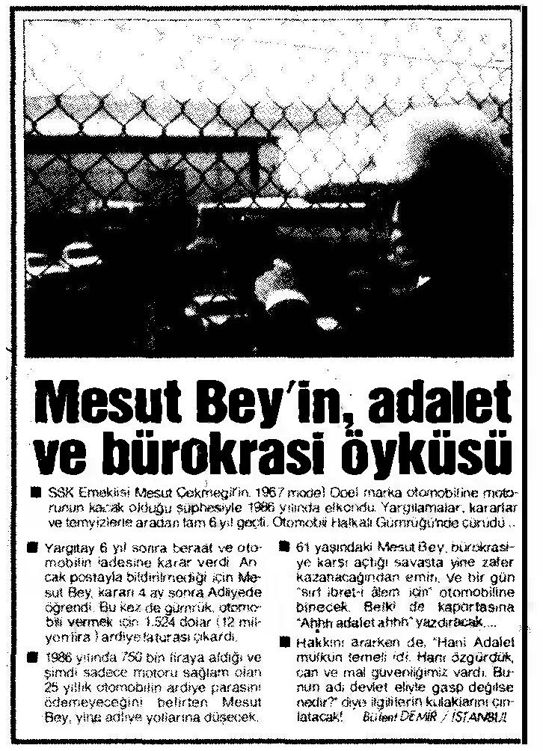
Biz bu dünyaya gelmeyiz, bu dünyada oluşuruz; yaprağın ağaçta oluşması gibi. Okyanusun dalgaları yaratması gibi, evren yaşamı, insanları yaratır. Her insan doğanın, tüm evrenin bir devinimi, kendine özgü bir ifadesidir. ALAN WATTS
KOŞULSUZ SEVGİ GERÇEKTEN VAR MI?
Bugün yine Beyazıt Cami''nin yakınındaki çayevine gittik. Ihlamurlarımız geldikten sonra Yakup Bey konuya girdi:
"Son buluşmalarımızda insan ilişkileri üzerine konuştuk. Sevgi insan ilişkilerinin önemli bir yönünü oluşturur. Ayrıca hatırlıyorsunuz koşulsuz sevgi üzerinde durduğumuz temel ilkelerden biriydi. Bugün koşulsuz sevgi üzerine konuşacağız."
Yeni gelen ıhlamurlarımızdan birer yudum aldık. Kalem ve kağıtlarımı çıkarmış not almaya hazırdım. Yakup Bey konuşmaya başladı.
Koşulsuz Sevgi Nedir, Ne Değildir?
"Koşulsuz sevgi, sevdiğiniz insan ne yaparsa yapsın onun yaptıklarına karışmadan onu sevmeye devam etmek midir?"
Böyle bir soru beklemiyordum. Vereceğim bir cevap yoktu. Yakup Bey'in yüz ifadesinden aslında benden cevap beklemediğini, konuya giriş olarak böyle bir soru yönelttiğini anladım.
"Örneğin, sevdiğiniz insanın beğenmediğiniz bir davranışı var. Bu davranış kumar oynamak, aşırı içki içmek, sarmısak yedikten sonra dişlerini fırçalamamak, yalan söylemek, kızdığı zaman nerede olursa olsun aklına geldiği gibi küfür etmek olabilir. Böyle bir davranışg österen kişiyi koşulsuz sevdiğinizi göstermek için ne yapmanız, yada yapmamanız gerekiyor?
"Yalan söylemeyi alışkanlık haline getirmiş biri ile ilişkiniz olduğunu farz edelim. Bu kişiyi «koşullu sevdiğiniz» zaman nasıl davranırsınız, «koşulsuz sevdiğiniz» zaman nasıl davranırsınız?
"Benim sıksık karşılaştığım yaygın fakatyanlış anlayışa görekişler şöyle düşünecektir:"
Yukarıdaki örneğm tartışmasını yapmadan önce önemli bir kavramsal ayırımı belirtmemiz gerekiyor.
"Burada «koşullu» derken gerçekte «davranışa bağımlı» demek istiyoruz. Böylece aslında üzerinde konuştuğumuz «davranışa bağımlı sevgi» ile «davranıştan bağımsız sevgi» oluyor.
"Acaba davranış kişinin tüm gerçeğini, onun var oluşunu temsil edebiliyor mu? Bazı psikologlar davranışın ötesinde herhangi bir gerçek düşünemeyeceklerini söylerlerken, bir grup psikolog kişinin gelişim potansiyeli ve özüyle, onun geçmişteki koşullanmalarının ürünü olan davranışı arasında kesin bir ayırım yaparlar.
"Koşulsuz sevgi taraftarı psikologlar, davranışı kötü dahi olsa kişinin potansiyelini, özünü sevmek gerektiğini öne sürerler.
Koşullu Seven
Koşulsuz Sevgiyi Yanlış Anlayan
Çok yalan söylüyor. Yalan söyleyen bir kişiyi sevemem. Yalan söylemeyi bırakmazsa onunla ilişkimi keserim.
Biliyorum, çok yalan söylüyor; ama, ne yapayım, onu çok seviyorum. Sevdiğim için onun hatalarını yüzüne vurup onu incitmek ve gücendirmek istemiyorum. Bu nedenle onun yalan söyleme davranışı sanki yokmuş gibi davranıyorum. Biliyorsunuz "Dikensiz gül olmaz" demişler. Ayrıca, Orhan Gencebay şarkısında, "Hatasız insan olmaz; hatamla sev beni" demiş.
"Yukarıda tablo halinde örnekte verdiğimiz her iki anlayışın temelinde önemli bir hata yatmaktadır: Kişinin ne olabileceğini temsil eden potansiyel ve özü ile, onun şimdiki davranışlarının altında yatan yanlış öğrenmeler, kalıplar birbirinden ayırt edilmeden, sanki aynı şeylermiş gibi algılanmaktadır.
"Oysa gerçek koşulsuz sevginin temelinde, o kişinin ne olabileceğini temsil eden potansiyel ve öz ile, onun şimdiki davranış larının altında yatan kalıpları ayırt edebilecekbir anlayış yatar. Kişinin şu anda yaptığı davranışlara, sağlıksız gelişme ortamı neden olabilir. Bir başka deyişle, kişinin davranışları onun gerçek potansiyelini ve özünü ifade etmeyebilir.
"Koşulsuz sevgi, o kişinin temel potansiyeline yönelik sevgidir. Kişiyi olabileceğinin en iyisi olması için destekleyen, yüreklendiren, onu bu öze sahip çıktıkça onurlandıran bir sevgidir. Bu anlamda koşulsuz sevgi, «kişiyi şu andaki davranışlarının ötesinde, onun potansiyeline ve özüne dönük olarak sevmek»tir.
"Yalan söyleyen biriyle ilişki içinde olan koşulsuz sevgi sahibi biri, sevdiği ile yalan söylediği için ilişkisini kesmeyecek, fakat bu konuda konuşmaya ve bu anlayış çerçevesinde etkileşim kurmaya özen gösterecektir. «Yalan söylediğinin farkındayım. Bildiğim kadarıyla yalanın temelinde kişinin güvensizlik duygusu ve korkusu yatar. Besbelli ki yetiştiğin ortamda bu duyguları sağlıklı biçimde geliştirecek, yaşamına yansıtabilecek olanakların olmadı. Ben sendeki potansiyeli görüyorum; yaşamında kişisel bütünlüğü gerçekleştirebilecek her türlü akıl ve gönül zenginliğine sahip birisin. Bu bütünlüğü yaşamında gerçekleştirebilmen, senin kendine güven duymandan ve korkularından arınmandan geçer. Bu kolay bir iş değildir. Sen bu mücadeleyi verirken yanında olacağım. Beni kaybetmeyeceksin. Gerçek sen, içindeki potansiyelde, özündeyatıyor. Korku ve güvensizlik engellerini aşarak o gerçeğe ulaşmak için yapacağın yolculukta sana yoldaş olmak istiyorum,» mesajını verir.
"Bu anlamda koşulsuz sevgi eşler, ana-baba çocuk, iki arkadaş, iki sevgili, öğretmen öğrenci arasında yer alabilir. Görüldüğü gibi koşulsuz sevginin ille de iki sevgili arasında yer alması gerekir diye bir koşul olamaz."
Burada Yakup Bey'e kafamda beliren soruları sormak istedim:
Yüksel Uzel'den ağlatan ziyaret
ANTAKYA Huzurevi'ni ziyaret eden Türk Sanat Müziği Sanatçısı Y üksel Uzet gözyaşlarını tutarnadL Huzurevinde barınan 65 yaşındaki Huriye Ekmenle görüşen ve yaşiliara çeşitli hediyeler veren Uzel. bu sohbetlerde hüzünlendiğini belirterek "‘Yalnız yaşayan tnsaanlala her ilgilend im.. Nuriye Hanım' ın sözleri bana çok Au ndu. Bu nedenle dayanamayıp ağladım” ded:
Nuriye Hamm'm çocuklarından yakındığını belırsanatçı. evlat, yaşhlana saygth olmalıdır.
Onlara bakmak ve onları' revimizdir. bazı vefasız çocuklar da çdctyor maalesef... Nuriy*Hanımın durumu beni üzdü” dedi
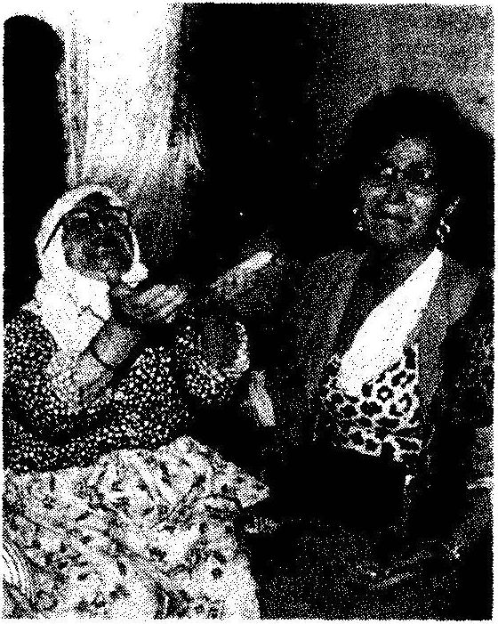
(Hürriyet, 29 Temmuz 1992)
Timur: "Yakup Bey, verdiğiniz örnekte kişi kötü davranışını değiştirmezse, yine onu sevmekte devam etmemiz mi gerekiyor?," Yakup Bey: "Koşullar değişince kişi kötü davranışı niçin devam ettirsin?"
Timur: "Kötü insan olduğu için! Bazı insanlar iyidir, bazı insanlar da kötüdür. Siz kötü iyi ayırımı yapmadan herkesi sevmeyi öneriyorsunuz!"
Yakup Bey: Ben davranışın ötesine geçerek kişinin özünü sevmeyi öneriyorum."
Timur: "Peki kişinin özü kötü ise ne olacak?"
Yakup Bey: "Burada temel bir anlayış farkı ortaya çıkıyor. Ben, insanların doğuştan psikolojik yönden sağlıklı ve dengeli doğduğunu kabul ediyorum. Bazı nörofizyolojik durumların dışında her insanın «iyi» insan olarak doğduğunu kabul ediyorum. Nasıl ki sağlıklı kişi değişik bakteri ve virüsleri çevreden kaparak hasta olur; işte bunun gibi «iyi» doğan insan yetişme ortamının bozukluğu nedeniyle «kötü» insana dönüşür."
Timur: "Peki size göre insanlar doğuştan birbirlerine benziyorlar mı? Doğuştan getirdikleri bireysel farklılıklar yok mu?"
Yakup Bey: "Elbette var; ne var ki bu bireysel farklılıklar yetenek ve mizaçta kendini gösteriyor; kişilerin bazılarının özü «İyi» bazılarının «kötü» doğmuyor."
Yakup Bey'in sağlık ve «iyilik» ile paralellik kurması aklıma başka bir soru getirdi.
Timur: "Doğduktan sonra değişik aşamalarda çocukları aşılarlar. Bu aşılama sayesinde çocuk değişik mikroplara direnç geliştirir ve ileride daha önemli hastalıklardan böylece korunmuş olur.
"Çocuğu koşulsuz seven kişi, çocuğa hiçbirkötü davranışta bulunmamakla onu gerçek yaşama karşı zayıf hazırlamış olmuyor mu? Belki ana-babanın koşullu sevgisi, kızması, bağırması, ara sıra dövmesi, çocuk büyüyünce içinde yaşayacağı ortama onu daha iyi hazırlayacak, onun için bir tür aşı olacaktır."
Yakup Bey: "Koşulsuz sevginin amacı bireyin tüm potansiyelini tam anlamıyla geliştirmek ve onu güçlü kılmaktır. Siz sürekli şu anlayış hatasını yapıyorsunuz: Size göre koşulsuz seven, karşıdakine her zaman hoş davranacak, onu hiç cezalandırmayacak, her tür zorluklardan koruyacak, el bebek gül bebek olarak yetiştirecektir. Bu koşulsuz sevgi değildir. Yukarıda da söylediğim gibi koşulsuz sevginin amacı bireyin tüm potansiyelini tam anlamıyla geliştirmek ve onu güçlü kılmaktır. Birey kendi özbenliğinden kaynaklanan gücü koşulsuz sevgi ortamı içinde bulur.”
"Koşulsuz sevgi kişi ile o kişinin davranışlarına yansıyan sorunları ayırt etmeyi gerektirir. Bu ayırt etmeyi yapabilecek bilinç düzeyim' ulaşan «gelişmiş» kişi, yaşamında koşulsuz sevgiyi gerçekleştirebilir."
Kişinin davranışı ve potansiyeli arasındaki ayırım benim için yeniydi; önemini kavramaya çalıştım.
Beni böyle koşulsuz seven oldu mu diye düşünmeye başladım. Çocukluğumu buamaçla gözden geçirmek istiyordum; ne varki, Yakup Bey konuşmasına yeniden başladı. İçimden, «eve gidince çocukluğumu tümden gözden geçireyim ve beni koşulsuz seven var mıydı, düşüneyim,» kararını verdim.
Yakup Bey açıklamasına başlamıştı:
Koşulsuz Sevgi «Gelişmiş» İnsan Olmanın En Önemli Kaynağıdır
"Geçen konuşmamızdaki «duygusal banka hesabı» kavramını hatırlıyorsun.Birazöncekısaca tanımınıverdiğimiz koşulsuz sevgiduygusal banka hesabına sürekli yatırım yapmaya yol açar.
"Birini koşulsuz olarak gerçek anlamda sevdiğimiz zaman, onun kendindeneminvegüven içindeolmasına yardımcı oluruz. Butür sevgi bireyin kendi değerlerini, özünü bulmasına ve kendini bir bütün olarak olduğu gibi kabul etmesine yol açar. Böylece doğal gelişim ve büyüme süreçleri beslenmiş ve desteklenmiş olur."
Yakup Beyyüzümebaktı; nedüşündüğümü görmek isteyen bir hali vardı. Kendisine temel varsayımı hatırlatmak zorunluğunu hissettim.
"Yakup Bey" dedim, "bütün bu söylediklerinizin anlamlı olabilmesi için insanların doğuştan «iyi» bir özle doğduklarını varsaymamız gerekiyor. Bence en can alıcı nokta bu. Eğer insanların doğuştan bencil, çıkarcı, saldırgan olduklarını düşünürsek, o zaman sizin bu söyledikleriniz tümü anlamsızlaşıyor."
Yakup Bey gülümsedi ve benimle hemfikir olduğunu anlatırcasına kafasını salladı. "Timur Bey, bu konu aslında oldukça felsefi yönleri ağır basan bir konu. Bu temel anlayışın sadece psiokojik değil, politik ve ekonomik sonuçları da var. İsterseniz şimdi, insanların özünün doğuştan iyi olduğunu varsayarak konuşmamıza devam edelim" dedi vedaha önceki açıklamasına döndü:
"Koşulsuz sevilen kişi işbirliği, katkıda bulunma, iç-disiplin, bütünlük, kişisel bütünlük gibi yaşamın temel süreçlerini hayatında gerçekleştirebilir; yapabileceğinin en iyisini yapmaya yönelir. Dışarıdan yönlendirmeye göre değil, kendi temel değer ve ilkeleri çerçevesinde, kendi kişisel yaşam felsefesine göre yönünü bulur. Bir başka deyişle koşulsuz sevgi, «kalıplanmış» insanı «gelişmiş» insanhalinedönüştürmede en güçlü kaynaklardan birini oluşturur.
"Kişiyi koşulsuz sevmek onun yaşamından elimizi ayağımızı çekmek anlamına gelmez; ilgilenmemek anlamına da gelmez. Koşulsuz seven kişi sevdiğiyle sürekli ilişki içindedir, konuşur, sorar, anlar, dinler, sırasında akıl verir, sınırlar çizer, sevgisini olduğu kadar, kızgınlığını da paylaşır, ama hiçbir zaman sevmekten geri kalmaz. Kişinin davranışlarını sevmeyebilir, fakat kişinin kendini sevmeyi ve desteklemeyi hiç bırakmaz.
"Bu nedenle bugünkü konuşmamızın başında tablo halinde verdiğim örnekteki kişilerin hiç biri gerçekte koşulsuz sevgi göstermemektedir. Gerçekten koşulsuz seven birinin düşünceleri şöyle olurdu:
Koşullu Seven / Koşulsuz Seven
Çok yalan söylüyor. Yalan söyleyen bir kişiyi sevemem. Yalan söylemeyi bırakmazsa onunla ilişkimi keserim.
Biliyorum, çok yalan söylüyor; ama, onun kötü bir gelişim ortamında yetiştiğinden böyle olduğunu biliyorum. Onun özünün iyi ve yüce olduğunu biliyorum ve bu özü çok seviyorum. Yalan söyleme gibi kötü alışkanlıklarından kurtulmasında ona yardımcı olmam gerekir. Yalanın temelinde korku ya da çıkar vardır. Benim kendini koşulsuz sevdiğimi anlamalı; bu güven içindekendinigeliştirmeye, eski alışkanlıklarını atmaya, özüneuygun yenilerini koymaya başlamalı. Onun yalan söyleme davranış ının kendine yapılan bir haksızlık olduğunu sürekli ona hatırlatarak onun mücadelesine elimden geldiğince yardım edeceğim.
Bu konuyu sevmiş tim. Sanki bana kafamdaki birçok düğümü çözen bir anahtar verilmişti. Zevkle not almaya devam ediyordum. Yakup Bey konuyu geliştirmeye şöyle devam etti:
Koşullu Sevgi Sağlıksızdır
"Koşullu sevgiyle ilişki kurduğumuz kişi bizden sürekli şu mesajları alır: «Eğer benim istediğim türden A, B, C, ... ., X. gibi davranışları yaparsan seni severim; yapmazsan sevmem.» Bu mesaj karşıdakindo karşı tepki oluşturur. O da bize, «Senin sevgin olmadan da yaşamını sürdürebilen, kendi başına var olabilen biriyim,» demek ister ve bunu kanıtlamaya çalışır."
Bu noktada Yakup Bey'e küçük çocuklarla ana-baba ilişkisini sor dum. Küçük çocuklar ana ve babalarına, «Senin sevgin olmadan da yaşamını sürdürebilen, kendi başına var olabilen biriyim,» diyebilir ıııi
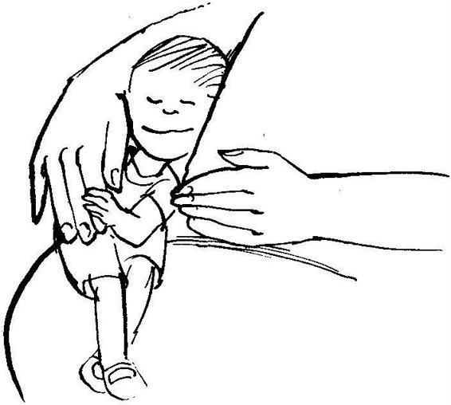diye sordum. Yakup Bey, "Sözünü ettiğin çok önemli bir konu; onun için şu anda konumuzun dışında tutmayı planlıyordum. Fakat kısaca cevap vereyim: Hayır! Küçük çocuklar böyle bir tepki gösteremez. Onlar kendi özlerini, ana ve babalarından aldıkları bu koşullu sevgi mesajlarıyla tanımlamaya başlar. Aslında «kalıplanmış» insan olmanın temelinde ana-babanın koşullu sevgisi vardır. Ben iki tür ana-baba ilişkisi biliyorum: Geliştiren ve kalıplayan. Geliştiren ilişkinin temelinde koşulsuz sevgi yer alır; kalıplayan ana-baba ise çocuğunu koşullu sever."
Yakup Bey'e konuyla ilgilendiğimi, düşüncelerini daha ayrıntılarıyla öğrenmek istediğimi söyledim. Gülerek, "Belki ileride bir dizi buluşmayı sırf bu konuya ayırırız” dedi.
Bu sözünü kendine hatırlatmayı kafama koydum ve yeniden not almaya hazır bir duruşla ona baktım. Bir süre düşündükten ve kalmış olduğu yeri hatırladıktan sonra konuşmaya devam etti:
"Bu tür, yani «Senin sevgin olmadan da yaşamını sürdürebilen, kendi başına var olabilen biriyim,» türünden düşünen kişiler aslında bağımsız değildir, ters bir bağımlılık içindedirler ve düşman merkezli olmaya yönelmişlerdir. Bu durum daha önce gördüğümüz «olgunluk ölçeği» üzerinde en düşük puanı gösterir. Kendi haklarını savunmak, kişi olarak var olduklarını gösterebilmek yaşamlarının en önemli odak noktası olur. Bu nedenle kendi iç dünyalarını bulup, kendi yaşamlarının anlamını yapılaştırıp onu gerçekleştirme üzerinde duramazlar. Bütün çabalarını dışarıya kendilerini kanıtlama üzerine kurarlar.
"Maalesefbirçok ana-baba koşullu sevgi kullanarak çocuklarını ters bir bağımlılığa sürmüşler ve onları isyankar olmaya yöneltmişlerdir. isyankarlık aklın değil, kalbin düğümüdür. Bu düğümü ancak koşulsuz sevgi çözebilir; sürekli koşulsuz sevgi.”
Yakup Bey hüzünlenmişti; bu izlenime kapıldım. Anlattığı koşullu sevgi kavramı kendi yaşamının bir yönüne dokunmuştu herhalde. Tazelenen ıhlamura yöneldi. Bir süre sessiz kaldık. Bu süreden yararlanarak yeniden kendi çocukluğumu düşündüm; ben koşullu sevgi ortamında mı büyümüştüm, yoksa koşulsuz sevgi ortamında mı? Bulmaya çalıştım. Hepannemidüşünüyordum. Galiba koşulsuz sevgiye en yakın gelen onun sevgiyisiydi. Onu da 9 yaşında kaybetmiştim. Babamın sevgisi tam anlamıyla koşullu sevgiydi. Sevgi gösterisibileyoktu ortada. Belki debuna sevgi yerine «korku» demek daha doğru olurdu.
Yakup Bey'in konuşmaya başlaması beni düşüncelerimden uyandırdı; dinlemeye ve not almaya hazırdım.
Kişiler Arası Sorunlar İlişkiyi Geliştirmede Bir Araç Olabilirler
"Kişiler arası ilişkilerde eninde sonunda mutlaka sorunlar çıkar. Bu bir doğa kanunu gibi olağandır. Bir kişiyle sorun ortaya çıktığı zaman, sorun, ilişkiyi geliştirmek için bir fırsat olarak değerlendirilebilir. Bu sorunu göz ardı etmek, ilgilenmemek, onu zamanla «ilişki kanseri» haline dönüştürebilir. Ama, iyi niyetle, temel ilkelerden hareketle sorunla ilgilenildiği zaman, sadece sorunla ilgili bir görüş kazanmakla kalınmaz, o kişiyle aradaki duygusal bankaya büyük yatırımlar da yapılmış olur.
"Ana-babalar çocuklarının davranış sorunlarını, bu ilkeyi uygulayarak, ilişkilerini kuvvetlendirmede kullanabilirler. Tabii bu tür tutum, temelde «gelişmiş» insan paradigmasını kabul etmeyi gerektiriyor.
"Bu ilke sadece ana-baba çocuk ilişkilerinde değil, hemen hemen her durumda kullanılabilir. Örneğin,«geliş miş» insan paradigmasını kabul etmiş dükkan sahibi, şikayeti olan müşterilerini böyle bir tutum içinde dinler, onları anlar ve onlarla doyumlu iletişim kurmaya önem verir; bunun sonucu, müşteriler isteyerek dükkanagelirler, daha başka yerden alışveriş yapmayı düşünmezler."
Koşulsuz sevgi kavramının insan ilişkilerindeki önemini gerçekten kavradığımı hissediyordum. Yakup Bey, bugünkü buluşmamızın sonuna geldiğini belirten bir jestle ıhlamuruna yöneldi.
Bir süre ıhlamurlarımızı içip, çocukluk hatıralarımızdan bahsettik. O da benim gibi hüznün ve koşullu sevginin ağır bastığı bir çocukluk geçirmişti. İkimizi birbirine bağlayan bir yön müydü acaba bu?
Yeniden buluşmak üzere ayrıldık.
Yapabileceğimiz şeyleri yapmaya başlasak, kendimizi hayretler içinde bırakacak sonuçlar alırız.
THOMAS EDISON
ÇIKAR PARADİGMALAR!
Bugün daha önce gittiğimiz Kumkapı'daki çayevine yürümeye karar verdik. Yollar pekkalabalıkolmadığı için Beyazıt'tan aşağıya denize doğru yürümeye başlar başlamaz konuşmaya başladık. Yakup Bey geçen buluşmamızdaki konuyu kısaca özetleyerek konuya girdi:
Söylenen ve Yapılan Aynı Olmazsa Güven Kaybolur
”Hatırlıyorsun,geçenbuluşmamızda kişiler arası ilişkilerde duygusal hesaptan söz edilebileceğini belirtmiştik. Bu hesabın mevduatı yüksek olduğu zaman kişilerin birbirine güveninin tanı, düşük olduğu zaman az olduğunu vurgulamıştık.
"Bu ilke, kişiler arası özel ilişkilerde söz konusu olduğu kadar, iş ve genel sosyal ilişkiler için de geçerlidir. Bir toplumda ya da iş yerinde duygusal hesaptaki mevduatın azalması, güvensizliğin baskın olduğu sosyal ortam yaratır. Sosyal ortamdaki güvensizlik kültürünün en belirgin özelliği, herkesin birbirinin yüzüne sanki güvenirmiş gibi davrandığı halde, gerçekte güven duymamasıdır.
"Yönetimde dikkat edilmesi gereken yönlerden biri, söylenenle yapılanın birbirine uyup uymamasıdır. Söylenenle yapılan aynı olmadığı zaman sözünü tutmama durumu ortaya çıkacağından güven sarsılır ve kuşku artar. «Hep beraber ekip halinde çalışarak şirketi daha verimli bir ortama koruz,» diyen yönetici, kendi yakın mesai arkadaşlarına yüksek bonus verirken, onlarla birlikte çalışan diğer kimselere herhangi bir avantaj sağlamazsa, «ekip halinde çalışma» sözü havada kalır.
Herkes bu şirkette «ekip halinde çalışma»nın sözde kaldığını, gerçekte ödüllendirilmek için «yöneticinin yakını olmak» gerektiğini bilir. Zamanla şirket canlılığını ve üretim kapasitesini mutlaka kaybeder; yetenekli kişiler ilk fırsatta güven buldukları başka şirketlere geçmeye başlarlar."
Konuyu toparlamaya çalışırcasına bir süre sustu. Bundan yararlanarak ben aklıma gelen soruyu sordum:
Timur: "Şirketten daha kapsamlı olan toplum konusuna geçmek istiyorum. Bir toplumda eğitimleri boyunca öğrencilere dürüst ve çok çalışanın ödüllendirileceği söylensin; ne var ki onlar mezun olunca, ancak yüksek makamlarda «tanıdığı», yani «torpili» olanlar iyi iş bulabilsin; tanıdığı olmayanlar ya hiç iş bulamasınlar, ya da ancak değersiz mevkilere geçsinler. Bu toplumda güven duygusu zedelenmez mi?"
Yakup Bey: "Gayet tabii zedelenir. Güven duygusunu «Torpili olmadan iş bulmak ya da yükselmek olanağı yoktur» anlayışından dolayı kaybeden toplum, yetenekli üyelerini başka toplum ve kültürlere zamanla kaybeder ve gittikçe yeteneksiz fakat tanıdığı olan insanların oluşturduğu bir topluma dönüşür."
Aklıma bir örnek geldi, onu Yakup Bey'le paylaşmak istedim:
Timur: "Bir çiftçi düşünüyorum; «Ben iyi mısır yetiştirmek istiyorum» diyor; ne var ki su ve gübreyi yoncaya veriyor. Yani söylenen yapılana uymuyor. Davranış ve sözün birbirini tutmadığı çelişkili durumlarda güven duygusunun yerini kuşku ve güvensizlik almaz mı?"
Yakup Bey: "Evet, kuşku ve güvensizlik alır. Kuşku ve güvensizliğin yüksek olduğu ortamda «gelişmiş» insanın etkili olması zorlaşır. Güven duygusu ve işbirliği kişiler arasında çıkar ilişkileri söz konusu olduğu zaman daha da önem kazanır. «Gelişmiş» insan kişilerarası çıkar ilişkilerine kazan/kazan tutumu ile yaklaşır. «Kalıplanmış» insan ise kişiler arası çıkar ilişkilerinde çoğu kez kazan/kaybet, kaybet/kazan, kaybet/kaybet, ya da sadece kazan tutumlarını kullanır.
"«Gelişmiş» insan, olgunluk ölçeği üzerinde karşılıklı dayanışma aşamasına gelmiş biri olarak, ancak kazan/kazan tutumu çerçevesinde etkililiği sürdürebileceğini bilir. «Kalıplanmış» bireyin ise karşılıklı dayanışma bilinci ve liderlik özellikleri henüz gelişmemiştir. Bağımsızlık paradigmasından, karşılıklı dayanışma paradigmasına geçildiği andan itibaren liderlik söz konusu olmaya başlar. Lider olan birey diğerlerini etkileme durumunda olur. Liderin kişiler arası çıkar ilişkilerinde kullanabileceği en etkili tutum, kazan/kazan tutumudur.”
Yakup Bey'in kazan/kazan tutumunu ilk defa duyuyordum; açıklama istedim. Yakup Bey, "Bu, benim çevremde de çok az uygulanan bir tutum" dedi ve şimdi yapacağı açıklamada bu konuyu anlatacağını söyledi.
Kumkapı'daki çayevine gelmiştik. Ihlamurlarımızı ısmarladık. Güzel, ılık bir gündü. Yakup Bey konuşmasına devam etti:
Çıkar İlişkilerinin 6 Paradigması
"Çıkar ilişkilerinde kullanılabilecek 6 temel tutum vardır. Bu tutumlardan hangisinin kullanılacağını, bireyin gelişmişlik/olgunluk derecesi, kişilerin arasında söz konusu olan çıkarın türü ve iliş kinin içinde yer aldığı bağlamın doğası belirler. Çıkarın türü ve ilişkininiçindeyer aldığı bağlamın türü, kendi başlarına geniş konular olduğundan burada üzerlerinde pek durmayacağım. Şimdi çıkar ilişkilerinde kullanılan 6 yaklaşımı, kişinin gelişmişlik derecesini belirten tutumlar açısından inceleyelim.
"1. Kazan/kazan. Her insan ilişkisinde her iki tarafın da kazancını düşünen tutumun adıdır. Her antlaşma, kontrat, ilişki, etkileşme «her iki tarafa yararlı olmalıdır» anlayışı bütün iletişimi yönlendirir. Kazan/kazan tutumu yaşamı rekabet olarak değil, işbirliği olarak görür.
"İnsanlar zıtlar içinde düşünmeye alışmışlardır; «zayıf-kuvvetli,» «girişken-pasif,» «kazan-kaybet» gibi. Bu anlayışın altında yatan temel varsayım ancak kısıtlı bir miktar kaynak olduğu, bu kaynaktan diğerlerinin değil, kişinin kendinin yararlanması gerektiğidir. Bu temel varsayım yaşamın gerçeğine uymaz. «Herkese yetecek kadar bolluk vardır» anlayışına ulaştığımız zaman kazan/kazan tutumunu uygulamak daha kolaylaşır.
"2. Kazan/kaybet. Önderlik tarzı olarak bu otoriter yaklaşımı temel alan bir tutumdur. «Ben kazanacağım, sen kaybedeceksin, ikimizin de kazanması mümkün değildir,» der. Bu anlayış kişiler arasındaki çıkar ilişkisinde bir koşu yarışması, ya da futbol maçında olduğu gibi ancak bir tarafın kazanabileceğini kabul eder.
"Kazan/kaybet modeli içinde yaşayan kişiler mevki, kudret, mal mülkve itibar, kişilik gibi her türlü kaynaklarını kullanarak kazanmaya yönelirler. Büyürken ailedeki diğer çocuklarla kıyaslanması, koşullu sevgi uygulanması bu zihniyeti çocuğa aşılar. Bu yetişme ortamında çocuğun iç dünyası, kendine özgü iç özellikleri hesaba katılmaz. Bu çevrede yetişen çocuk, «ya kazanırım ya da kaybederim» zihniyeti ile düşünmeye başlar.
"Çocuğun kendi potansiyeli içinde yaptığı gayreti hesaba katmadan onu diğerleriyle kıyaslayarak not veren eğitim türü de bu zihniyeti pekiştirir. Spor yarışmalarındaki kazanma ve kaybetme bu yanlış paradigmayı körükler.
"Gerçek yaşamda, spor yarışmalarında olduğu gibi bazı durumlar gerçekten kazan/kaybet durumuna uygun düşerken, aile yaşamı gibi başka birçok durum (ki bunların sayısı çok daha fazladır) kazan/kazan tutumuna uygundur. Çünkü yaşamınbüyük kısmı dayanışma paradigması içinde oluşur; bizim yaşamımız diğerlerininkinden bağımsız değildir.
”3. Kaybet/kazan. Bu tutumu kabul edenler, kendilerinin başarılı olacaklarını beklemezler, ancak başkalarını memnun ederek yaşayabileceklerine inanırlar. Tamamen, «Benim beklediğim birşey yok, senin istediğin gibi olsun, yeter ki bana düşman kesilme,» anlayışını benimserler. Sürekli «iyi insan» olma çabası içindedirler. Bu çaba temel değer ve ilkelerden kaynaklanmaz, başkalarını kızdırmaktan çekinmeye, korkmaya dayanır. Fakat bu kişiler kendi isteklerini, dileklerini sürekli içlerine gömerler ve daha sonra gerçekleşemeyen bu istekler psikosomatik hastalıklar, ya da daha başka davranış bozuklukları olarak ortaya çıkmaya başlar. Bu insanların içinde sürekli bastırılmış birçok dilek, düşünce ve atılım isteği vardır."<361 36
(36) Bu tür insanların yetişme ortamları ve davranış türleri hakkında İçimizdeki Çoııık (s. 124-140) kitabında daha ayrıntılı bilgi bulabilirsiniz.
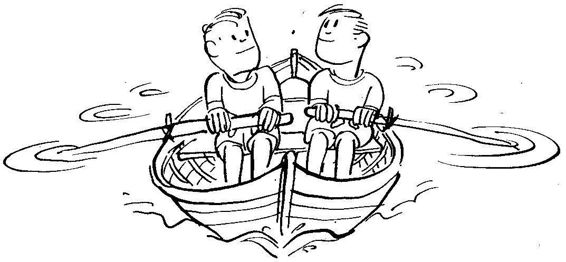
"Birçok ana-baba, yönetici, amir kazan/kaybet ile kaybet/kazan anlayışı arasında bir sarkaç gibi salınırlar. Durum elverişsiz olup, artık savaşacak güçlerikalmayınca ya da kendilerini suçlu hissedip, nedamet duymaya başlayınca kazan/kaybetten vazgeçer ve kaybet/kazan'a yer bırakırlar. Ama, kızgınlık, belirsizlik, ihmal gibi olumsuz etkenlerin etkisi altında hınçla yeniden kazan/kaybet modeline geri dönebilirler.
"4. Kaybet/kaybet. Kazan/kaybet anlayışı içinde mücadeleye giren egosu şişkin iki inatçı kişi, genellikle kaybet/kaybet sonucuyla karşılaşır. Her iki taraf da diğerinin kazanmasına tahammül edemez, mutlaka öbüründen hıncını almak ister. Boşanan kişilerin birbirlerine kötülük etmek amacıyla büyük çaba harcamaları buna örnek gösterilebilir. Kaybet/kaybet bir savaş zihniyetidir, her iki tarafda kaybeder; kişinin kendi kazancından ziyade öbür tarafın zararı temel kriter alınır.
"Kendini hiç sevmeyen,bağlaşık(37) olarakyaşamış kişi debumodeli seçebilir. Böylebir insan, «Ben mutlu değilim, herkes mutsuz olursa, ben de kendimi o kadar kötü hissetmem,» anlayışıyla kaybet/kaybet türünden paradigmayı ilişkilerinin temeline koyabilir.
”5. Kazan. Bu tutum kendini diğerleriyle ilişki içinde görmeyen kişinin yaklaşımıdır. «Ben kendi kazancımı bilirim, sen de kendi kazancını bil. Ben istediğimi alınca memnun olurum, sen de istediğini alacak şekilde hareket et, senin kazanman ya dakaybetmen beni ilgilendirmez,» şeklinde düşünür. Yarışma ve rekabet söz konusu değildir.
"Bu tutumun en önemli sakıncası kişinin «kendi merkezli» olmasıdır. Kendi merkezli olan kişi gerçekte diğerleriyle olan ilişkisini ikinci plana atmakta ve kendi davranışının diğerleri için ne anlama geldiğini anlamak istememektedir. Böyle bir tutumun önemli iletişim sakıncaları vardır.(38)
(37) «Bağlaşık» kavramı İçimizdeki Çocuk kitabında temel bir kavram olarak kullanılmaktadır. Bkz. s.37-8.
(38) Böyle bir tutumun iletiş im sakıncaları için bakınız: Yeniden İnsan İnsana (s. 19-33).
"6. Kazan/kazan ya da pazarlık yok. Çıkar çatışması içinde bulunan kişiler, «eğer ikimizin de işine yarayacak çözüm bulamazsak, pazarlığa son veririz, karar almakzorunda değiliz,» gibi bir ön antlaşmayla işe başlarlar. Böylece ön beklentiler yaratmadan bunu bir seçenek olarak ortaya kor ve umut kırıklığına uğramayı önlemiş olurlar. Bu anlayışın baştan yaratılması, çıkar ilişkisinin diğer modellere dönüşme olanağını ortadan kaldırır. Her iki taraf da bilir ki, bu iş ancak her iki tarafın da ortak çıkarlarına uygunsa yürüyecektir. Birbirine dayanışma içinde olan bir yaşam bağlamında, kazan/kazan'ın ötesinde başka çözüm yoktur. Eğer kazan/kazan uygulanıyorsa, o zaman en akıllı iş, pazarlığı kesmek ve ilişkiyi korumaktır.
"Yukarıdaki her tutumun geçerli olabileceği bir yaşam tutumu bulunabilir. Bu nedenle mutlak anlamda bir tutumun diğerlerinden her zaman ve her yerdeüstün olacağını söylemek gerçekçi olmaz. Ne var ki, günlük yaşamda çoğu kez karşılıklı dayanışma içinde olduğumuzu unutmamalıyız. Karşılıklı ilişki ve dayanışma durumuna en uygun, hiç kuşkusuz, kazan/kazan modelidir. Kişinin nasıl bir ortamda olduğunu anlaması ve en uygun tutumu seçmesi önemlidir."
Yakup Bey ıhlamurundan birkaç yudum aldıktan sonra, "Yine tekrar edeyim: Yaşamda çoğu kez dayanışma durumları vardır. Karşılıklı dayanışma durumunda, kısa sürede bizim kazancımız gibi görünen kazan/kaybet tutumu, uzun süreli ilişkilerde kaybet/kaybet tutumuna eşit sonuç verecektir" dedi.
"İsterseniz bir süreara verelim ve öğle yemeği yiyelim. Daha sonr.ı buraya döner kazan/kazan tutumunun boyutlarını konuşuruz" teklifinde bulundu.
Karnım acıkmıştı, memnuniyetle kabul ettim. Yakup Bey'in Kumkapı'da bildiği bir balıkçı lokantası varmış. "Restaurant Talip, şuradıi biraz ileride Çapari Sokak üzerinde. Fatih'teki Hünkar Lokantası'nııı sahibi Ferudun Bey'in kardeşi bu lokantayı işletiyor; ona gidelim" dedi. Öğle yemeğimizi Restaurant Talip'te yedik.
Göz odur ki dağın arkasını göre, akıl odur ki başa geleceği bile.
TÜRK ATASÖZü(39)
KAZAN/KAZAN TUTUMUNUN BEŞ BOYUTU
Yemekten sonra yürüyerek yine çayevine geldik. Balıktan sonra benim canım çay içmek istedi. Yakup Bey ıhlamur, ben çay ısmarladım. Gökyüzünde hafifbulutlanma vardı ve güneş sabahki şiddetini kaybetmişti. Sabahki kadar ılık olmamakla beraber, dışarda oturmak hâlâ hoştu. Yakup Bey konuşmasına kaldığı vorden devam etti:
"Kazan/kazan tutumunun uzun süreli kişiler arası ilişkilerde kullanılması öngörülen temel tutum olduğunu sabahki buluşmamızda belirtmiştik. Kazan/kaybet tutumuyla yetişmiş kişilerle ilişki kurarken karşılıklı yararlar üzerinde durmak hem büyük cesaret hem de karşıdakini düşünmeyi gerektirir.
"Niçin daha büyük cesaret ister? sorusunu sordum Yakup Bey'e. Aramızda şu konuşma yer aldı:
Yakup Bey: "Büyük cesaret ister, çünkü kazan/kaybet paradigmasına alışmış biriyle karşı karşıya olduğunuzu bile bile kendi çıkarınız kadar, karşınızdakinin de çıkarını düşünme durumundasınız. Yani karşınızdaki adam sizin en ufak açığınızı bulduğunda bundan tam anlamıyla yararlanarak kazanç sağlamaya çalışacak. Bu tür kişilere bizim günlükdildehalk «çok saf,» «torbada keklik» gibi lafları uygun görür. Aptal görünmeyi göze alarak pazarlığa oturmak her yiğidin altından kalkabileceği bir iş değildir.”
Timur: "Kazan/kazan modelini uygulayabilmek için cesaretin ve karşıdakini düşünmenin ötesinde başka nelere gerek var?”
Yakup Bey: "Bu modeli uygulayabilmek için beş temel faktörün tam farkında olmak ve bunların birbirini nasıl etkilediğini iyi bilmek gerekir."
Timur: "Hangi beş temelden söz ediyorsunuz?"
(39) Bu atasözünü Şerif Akbulut 'un taksisinde ıııüş teri iken İstanbul'da öğrendim. (Tabii memleketini söyledi: Erzincan, Refahiye'nin Alt Köyü'nden)
Yakup Bey: "Kazan/kazan modelini uygulayabilmek için gerekli beş temel faktörden söz ediyorum. Bunlar (1) karakter, (2) ilişkiler, (3) antlaşmalar, (4) sistemler ve (5) süreçlerdir. Bu faktörlerden ilk üçü sırayla birbirini etkilerken, son ikisi ilişkilere bir zemin ve bağlam yaratmada işe yarar.
"İlk faktör karakterdir. Karakter ilişkileri geliştirerek, üçüncü faktör olan temel antlaşmalara götürür. Bu üç faktör kendilerini destekleyen temel yapı ve sistemler içinde en etkili olur. Doğal olarak kullanılacak süreçler, bu modele uygun olan süreçler olmalıdır."
KAZAN/KAZAN PARADİGMASININ BEŞ BOYUTU
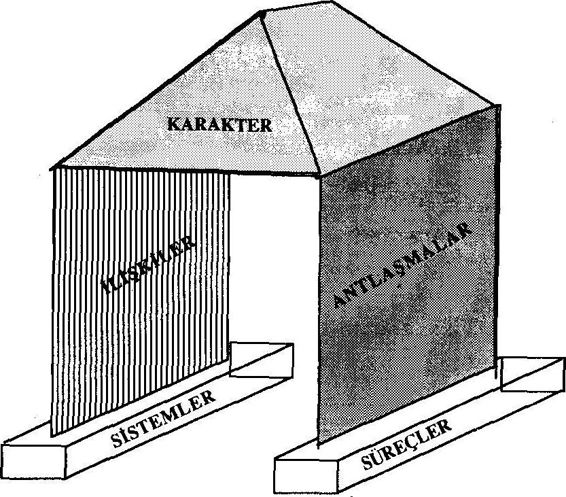
Kazan/kazan modeli beş temel faktörün oluşturduğu bir bütündür.
Timur: "Bu faktörleri biraz daha ayrıntılı anlatır mısınız?"
Yakup Bey: "Peki. Şimdi her faktörü teker teker ele alalım" diyerekk onuşmasına devam etti:
"1. Karakter. Üç karakterözelliği kazan/kazan tutumuyla yakından ilişkilidir:"
"n) Kişisel bütünlük: Kişisel bütünlük kendi değerlerimizin farkına vararak, düşünce, istek ve davranışlarımızı bu temel değerler çerçevesinde bütünleştirmeye verilen addır. Bu temel değerler neyin «kazanç» olup olmadığını belirler.
”b) Olgunluk: Kişinin olgunluğu onun cesareti ile onun karşıdakini düşünmesi arasındaki dengeye işaret eder. Kendince önemli olan konuyu başkalarının düşüncelerini ve görüşünü hesaba katarak ortaya getirebilen kişi olgun kişidir. Cesaret, istediğini elde etmede kişinin atılım gücünü gösterirken, karşıdakini düşünme sadece kendinin değil, öbürünün de beklentilerini hesaba kattığına işaret eder. Cesaret ve karşıdakini düşünme arasındaki bu denge, olgunluk olarak tanımlanır.
"Birçokları kazan/kazan tutumunu takip edenlerin esasında pek güçlü olmadıklarını ve bu nedenle kolayca başkasının isteklerine rıza gösterdiklerini düşünürler. Bu algılama kazan/kaybet modelinin sonucudur. Gerçekte, kazan/kazan anlayışıyla çalışan kişi hem kendi hem de karşıdakinin kazancıyla ilgilenme durumunda olduğundan, daha kuvvetli ve daha olgun olmak durumundadır; bu özelliklerinden dolayı önderlik özellikleri gelişmiştir.”
Kişinin olgunluğu onun cesareti ile onun karşıdakini düşünmesi arasındaki dengeye işaret eder.
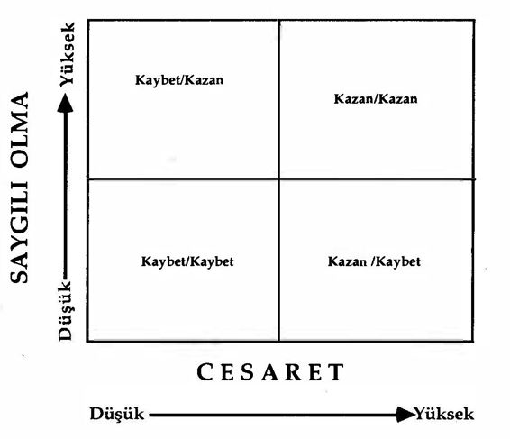
Yakup Bey bir kağıt üzerine yukarıdaki şekli çizerek açıklamasına devam etti:
"Yukarıdaki şekilde görüldüğü gibi «Karşıdakini Düşünme» ve «Cesaret» boyutlarını dört gözlü bir pencere halinde gösterebiliriz. Her boyutu «Yüksek» ve «Düşük» diye iki kutba ayırdığımızı düşünelim. Ancak hem «cesaret» hem de «karşıdakini düşünme» olma yüksek olduğu zaman kazan/kazan tutumunu uygulama olanağı doğar. Hem karşıdakini dinleyebilme, hem de kendi düşüncelerini güvenli biçimde söyleme cesaretini gösterebilme, gerçek olgunluğa işaret eder.”
Yakup Beybirsüre şeklebaktı; şekli kopyeetmeye başladım; çizimi bitirinceye kadar bekledi. Sonra devam etti:
”c) Bolluk zihniyeti: Herkese yetecek miktarda her şey bol olarak vardır anlayışı, yani bolluk zihniyeti, kazan/kazan paradigmasının altında yatar. Öbür paradigmaların altında yokluk zihniyeti yatar. Yokluk zihniyetine göre verilecek miktar belirlidir, eğer biri büyük miktar alırsa, geriye az kalır.
"Bu düşünce sadece para ve eşya konusunda değil, şöhret, tanınma ve itibar konusunda da geçerlidir. Bu zihniyetteki kişiler, başkalarının başarılarını kıskanmadan edemezler. Hatta içten içe onların bir dereceye kadar başarısız olmasını isterler. Karşıdakilerin başarısızlığı ile kendilerinin daha başarılı görüleceğine inanırlar. Yokluk zihniyeti taşıyanlar, iliş kide oldukları kişilerin kuvvetlenmesini pek istemezler; çünkü kuvvetlenen kişi önüne geçerek kendinden daha çok fırsat, kuvvet, şöhret ele geçirebilir diye düşünürler. Bu nedenle çevrelerinidahazayıf olan ve kendilerine dalkavukluk yapacak kişilerle donatırlar.
"Bolluk zihniyeti ise her yönden her şeyin bol olduğuna inanır ve herkese bol bol yetecek şöhretin, itibarın, paranın, karar verme yetkisinin, gücün bulunduğunu kabul eder. Kendi değer ve ilkeleri çerçevesinde kişisel yaşam felsefesini ifade ettiğinden, bu misyonun başarılması yönünde kimseyle çatışmaya girmeye gerek olmadığını bilir. Esas dikkat edilmesi gereken yönün bu olduğunun bilincindedir. Bu kişinin karakteri, kişisel bütünlüğü, olgunluğu, bolluk zihniyeti ile oluştuğundan, insan ilişkilerinde ahenk ve uzlaşmayı kolaylıkla sağlayarak lider durumuna geçer."
Konunun bir bölümünü bitirmiş öğretmenin ikinci konuya geçiş hazırlığı içinde bir süre sustu. Ihlamurdan birkaç yudum aldı. Göz ucuyla benim notlarıma baktı ve "Beş faktörün ilkinden söz ettik. Şimdi kazan/kazan yaklaşımının temelindeki ikinci faktör olan ilişkileri inceleyeceğiz" diyerek konuyu açmaya devam etti:
"2. İlişkiler. Karakter bizi kazan/kazan türünden ilişkilerin gelişmesine götürür. Bu ilişkiler bizim duygusal banka hesabımızı zengin tutar. Duygusal banka hesabımızı zengin tutunca, kişiler arasında güvence ve inanç süratle oluşur ve gelişir. Duygusal hesaptaki mevduatlarıyüksekolanlarla, düşükolanların ilişkileri birbirinden farklı olacaktır.i
«A» ve «B» kişileri arasındaki ilişkide güven derecesine bağlı olarak takınacakları tutumları gösteren şekil.
"İlişkilerde iki tür liderlikten söz edileblir. Bunlardan biri işedönük liderlik, diğeri ise kişiye dönük liderliktir. Kişiye dönük lider, işten çok ilişkide bulunduğu kişiye önem verdiğinden ilişkide bulunduğu kişinin dünya görüşünü etkilemeye başlar ve onu yavaş yavaş kazan/kazan düşünce sistemine doğru geliştirir. Bu değişikliğe paralel olarak ilişkinin duygusal banka hesabının mevduatı kabarmaya başlar.
"3. Antlaşmalar. İlişkilerden antlaşmalar doğar. Bu antlaşmalara «uygulama antlaşmaları» ya da «ortaklık antlaşmaları» adı verilir. Böylece kişilerbirbirlerinidenetleme yerine, yavaş yavaş kendilerini denetlemeye yönelirler; yani bir anlamda başarıya yönelik ortaklık kurmaya başlarlar. Aşağıdaki beş unsur kazan/kazan antlaşması için gereklidir ve mutlaka yerine getirilmelidir:
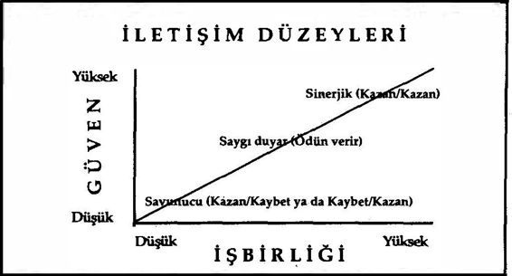
"aİstenen sonuçlar: Ne yapılacak ve nezaman bitecek?
"bTemel ilke ve sınırlar: Hangi ilkeler, hangi sınırlar içinde hareket edilecek?
"cKaynaklar: İnsan, para, teknik, organizasyonla ilgili destekler nelerdir?
"dSorumluluk : Uygulama, yani performans kriterleri nelerdir ve ne zaman değerlendirilme yapılacak?
"e. Elde edilen sonuçlar: Değerlendirme sonunda saptanan sonuçlar iyi olduğu zaman ne yapılacak, kötü olduğu zaman ne yapılacak?
"Bu boş unsurun yöneticinin seçeceği davranışın türü ile de ilgisi vardır. Geleneksel otoriter zihniyette «kalıplanmış» yönetici, kimseye güvenemeyeceğinden, ilişkilerinde duygusal banka hesabı sürekli negatifte bulunacak, bu nedenle hiçbir zaman kazan/kazan modeli çerçevesinde düşünemeyecek ve her şeyi kendi yapmaya ya da denetlemeye çalışacaktır. Bu kişinin yönetim tarzı otoriter kalıp içinde kalma zorundadır.
"Yöneticinin kendine ve çalıştığı kimselere güven duygusu yüksek ise kişilere yetki ve sorumluluk vererek onların kendi kendilerini yönledirmesine fırsat verebilecektir. Bu tür «gelişmiş» yönetici, kendi kendini değerlendirebilen kişinin, hiçbir dış etkinin başaramayacağı mükemmeliyete ulaşmaya çalışacağını bilir.
"Kazan/kazan uygulama (performans) antlaş malan. Kazan/kazanda kişiler kendi kendilerine hesap verirler ve durumu değerlendirirler. Bu değerlendirmede kendilerinin yarattığı ölçütleri kullanırlar. Burada önemli olan, bu ölçütlertesbitedilirken,beklenenin neolduğununbütün ayrıntılarıyla her iki tarafça, yani hem yönetici hem de yöneticinin iş havale ettiği kişi tarafından açık seçik belirtilmesidir. Verilen ödüller icraatın doğal sonucudur; başkasının verdiği keyfi bir ödül değildir.
"Kazan/kazan antlaşmaları kişilere özgürlük verir ve bu özgürlük kişiyi içten güdüler. İçten güdülenen kişi elinden gelenin en iyisini yapmaya çabalar."
Yakup Bey, önemli bir noktayı hemen belirtmek ister bir tavırla, "Hatırda tutulması gereken önemli nokta şudur: Kazan/kazan ancak kişisel bütünlüğü olan ve birbirine güvenen insanlar arasında gerçekleşebilir. Bir teknik olarak herkese her zaman uygulanamaz. Yüksek olumlu duygusal banka hesabı olan kişiler arasında en iyi sonucu verir" dedi.
Bu uyarısı yerindeydi; çünkü kazan/kazan yaklaşımını her yerdi' ve her zaman geçerli bir tutum olarak algılamaya başlıyordum. Düşündüğümü kendisine söylediğim zaman, "Öyle anlaman doğal. Uzun süreli ilişkilerde kullanılması gereken tutum bu. Ne var ki, bazı kısa süreli ilişkilerde, bir kez görüp bir daha görmeyeceğin durumlarda,
■ kazan/kazan sisteminin uygulanması zordur ve içinde bulunulan çevre çoğu kez buna uygun olmayabilir" dedi.
Örnekvermesini rica ettim.
"Sizden arsa almak isteyen bir emlakçı düşünün" diye örneğine başladı. ”Bir tek arsanız var, sürekli arsa satan bir adam değilsiniz. Emlakçı sizden alabileceğinin en ucuzuna almaya çalışacaktır. Bu nedenle değişik oyunlara, dalaverelere dahi baş vurabilir. Oynadığı bir oyunun sonucu arsayı değerinden on kat daha ucuz satın almışsa, siz «kaybeden o, artık ileride ona arsa satmam» diyecek durumda değilsiniz. Bu nedenle, bir kereye mahsus çıkar ilişkileri ile, uzun süreli çıkar ilişkilerini kesinlikle ayırt etmek gerekir."
Birkaç kez ıhlamurundan yudumladıktan sonra, açıklamasını kaldığı yerden sürdürdü.
"4. Sistemler. Kazan/kazan paradigması, bu temel anlayışı uygulayan sistemde geçerlidir. Sistem olarak kuruluşun neyi ödüllendirdiği önemlidir. Kazan/kazan'dan bahseden fakat gerçekte kazan/kaybet tutumunu ödüllendiren sistem hiçbir zaman başarıyla kazan/kazan tutumunu uygulayamaz. Sistem neyi ödüllendiriyorsa, o davranış ortaya çıkar. Bir kuruluşun temel amaç ve anlayışını açık seçik ifade ! etmesi bu nedenle önemlidir; bu ifade neyin ödüllendirileceğini, hangi değerlerin önceliği olduğunu belirtir. Uygulamada temel amaç ve anlayışın ifadesinde yer alan anlayış, ilke ve değerler ölçüt olarak kullanılır.
"Kazan/kazan'ın başarılı olabilmesi için sistemlerin bu tutumu desteklemesi gerekir: Kuruluş ya da toplumun işleyişinde yer alan eğitim | sistemi, planlama sistemi, iletişim sistemi, bütçe sistemi, araştırma geliştirme sistemi, ücret sistemi hep bu tutumla ahenk içinde olmalıdır. : Çoğu kez bozukluk insanlarda değil, sistemdedir. Kötü sistem içinde iyii nsanlar kötü sonuçlar alırlar. Kazan/kazan tutu.nunu destekleyecek sağlıklı sistemler kurmak mümkündür ve ailede, eğitimde, i; yaşamında ve yönetimde bu tür sistemler gerçekleştirilebilir."
İYİ DÜŞÜN DOĞRU KARAR VER
Sistemlerle ilgili açıklamasını pek iyi anlayamamıştım. Yakup Bey'c bu konuda örnek vermesini istedim. Yakup Bey, daha önce bu konuyu konuştuğumuzu söyledi. Ne zaman konuşmuştuk; hatırlayamadım.
Bana hatırlattı:
"Yönetimde dikkat edilmesi gereken yönlerden birinin, söylenenle yapılanın birbirine uyup uymaması olduğunu belirtmiştik. «Söylenenle yapılan aynı olmadığı zaman sözünü tutmama durumu ortaya çıkacağından güven sarsılır ve kuşku yükselir,» demiştik. Örnek olarak ekip halinde çalışmayı öven fakat yöneticinin yakınlarını ödüllendiren bir düzeni dile getirmiştik. Ayrıca, «öyle bir toplum ve kültür düşün ki, tüm eğitimleri boyunca öğrencilere dürüst ve çok çalışanın ödüllendirileceği söylensin; ne var ki onlar mezun olunca, ancak yüksek makamlarda «tanıdığı», yani «torpili» olanlar iyi iş bulabilsin; tanıdığı olmayanlar ya hiç iş bulamasınlar, ya da ancak değersiz mevkilere geçsinler» örneğini vermiştik."
Yakup Bey anlatınca hatırladım. Daha geçen buluşmamızda bu konuları işlemişti. Yakup Bey hatırlatmaya devam etti: "«Ben iyi mısır yetiştirmek istiyorum» diyen bir çiftçinin su ve gübreyi yoncaya verdiğini örnek olarak vermiştik."
Yakup Bey'e şimdi hatırladığımı söyledim. Beni karıştıran sanırım «sistem» kelimesi olmuştu.
Yakup Bey konuyu kavradığımı görerek, kaldığı yerden açıklamasına devam etti:
"5. Süreçler. Kazan/kazan tutumunu oluşturmada atılacak dört adım vardır:
"1. Sorunu diğerinin gözüyle gör. Karşı tarafın sorunlarını, onların dile getireceklerinden daha iyi dile getirebilecek hale gel.
"2. Anahtar sorunları ve kaygılarını teşhis et. Karşı taraf için önemli olan temel sorunlar ne ve hangi konularda kaygı duyuyorlar.
”3. Neleri kabııl edilebilecek sonuçlar olarakgöriiyorlar, bııl. Karşı tarafın kabul edilebilir ve kabul edilemez gördüğü sınırları bilmekte yarar vardır; bu sınırların bir an önce keşfedilmesi gerekir.
"4. Bu sonuçlara giitiirecek yeni seçenekler, yollar neler olabilir teşlıis ct. Girişimci tutumla yeni olanakları, her iki tarafın kabul edebileceği çözüm yollarını aramak gerekiyor.
"Kazan/kazan tutumunda süreç ve sonuç birbirine kenetlidir. Kazan/kaybet gibi başka bir tutumdan kaynaklanan süreç üzerine kazan/kazan tutumu kurulamaz. Kazan/kazan kişisel bir teknik değildir, insan ilişkilerini kapsayan bir felsefe, dünyaya bakış biçimi, bir paradigmadır."
Yakup Bey konuyu bitirdiğini belirten bir tonla son cümleyi söylemişti. Kalktık, Beyazıt'a doğru yürümeye başladık. Yürürken konuşmamıza devam ettik. Kendisine, ilişkilerinde kazan/kazan kavramını kullanıp kullanmadığını sordum. Önceleri her türlü uzun ve kısa süreli ilişkisinde kazan/kazan yaklaşımını kullanmaya kalkıştığını, ama şimdi sadece uzun süreli ilişkilerinde kullandığını söyledi. "Uzun süreli ilişkimde bilinçli olarak ne zaman kazan/kazan tutumunu uygulamışsam, o ilişkim daha gelişmiş ve sağlamlaşmıştır" diye elde ettiği sonucu bana söyledi.
Bu tutumu kendi yaşamıma nasıl uygulayacağımı gözden geçirmeye karar verdim. Zihinsel bir not alarak belleğimin bir yerine bu kararımı yerleştirdim.
Beyazıt'ta tekrar buluşmak vaadiyle birbirimizden ayrıldık.
Büyük insan, dinlemesini bilendir. SIR ARTHUR HELPI
İNSAN İLİŞKİLERİNDE DİNLEMEK KONUŞMAKTAN DAHA ÖNEMLİDİR
Yakup Bey'le Beyazıt Camii'nin yanındaki çayevine gittik. Ihlamurlarımızı ısmarladıktan sonra Yakup Bey konuşmaya başladı.
"İnsan ilişkilerinde etkili olabilmesi için kişinin önce, ilişkide olduğu insanın hangi paradigmalar aracılığıyla iç ve dış dünyasını anlamlandırdığını öğrenmesi, keşfetmesi gerekir. Kişinin paradigmalarını keşfedebilmek için o kişiyi iyi dinlemelidir; bir anlamda dünyayı o kişinin gözüylegörüp, kulaklarıyla duyabilecek hale gelinmelidir. Bu tür görme ve dinlemeyi temel alan iletişime, «empatik iletişim» adı verilir."
Yakup Bey sözüne devam etmek üzereyken onun sözünü kestim. Aramızda şöyle bir etkileşim yer aldı:
Timur: "Konuşmanıza başlarken, «İnsanın ilişkilerinde etkili olabilmesi için» önce karşıdakini dinlemesini bilmesi gerekir dediniz. Karşımdaki ile etkili olmayı niçin isteyeyim? Belki de sırf zaman öldürmek için o kişiyle beraberimdir ve ikimiz de zaman öldürüyoruzdur!"
Yakup Bey: "Sırf zaman öldürmek için beraber oluyorsan ne iyi dinlemene ne de iyi konuş mana gerek var. Söz konusu ettiğimiz kişi «etkili yaşam» oluşturma gayreti içinde olan, kendini geliştiren, yaşamının temeline inandığı ilkeleri koymaya önem veren biri. Böyle bir kişi zaman öldürmeye çalışamaz; çünkü öldürdüğünün zaman değil, kendi hayatı olduğunu bilir."
Timur: "Demek oluyor ki, kişi kendine ve karşıdaki ile kurduğu ilişkiye önem veriyorsa dinleme davranışı önem kazanmaya başlıyor."m t
Yakup Bey: "Evet! Yaşamlarım rüzgarın önünde' s.ıvnıl.m Ilı yaprak gibi yaşayan insanlar için karşıdakinin paradigmasını anla ma, iyi dinleme gibi kavramlar pek anlam taşımaz."
Timur: "Yani dinlemenin önemi «gelişmiş» insan için belir ginleşiyor."
Yakup Bey: "Evet. insan ilişkilerinde çoğu kez teşhis koymadan reçete yazan doktorun durumuna düşeriz; karşımızdakinin esas sorununun, vermek istediği mesajının ne olduğunu anlamadan, hemen konuşmaya başlar, kendi paradigmalarımız içinde yarattığımız dünyadan, onun sorunlarını anladığımızı zannederiz. Kendi gözüne uygun gözlük kullanan adamın, aynı gözlüğü başkasına vererek, «Bak bu gözlüğü tak, her şeyi açık seçik görürsün,» demesi gibi, başkalarının kendi dünyalarını bizim paradigmalarımızla görmesini isteriz. Etkili iletişimin sırrı, kendi paradigmalarımızı karşımızdakine empoze etmek değil, karşımızdakinin paradigmalarını keşfederek, o paradigmalar aracılığıyla kişinin dünyasına bakabilmektir.
"Bu nedenle, iletişim alanında en önemli ilkelerden biri, «Önce dinle ve anla, daha sonra anlaşılmayı bekle» dir. Bu ilke etkili iletişimin en önemli anahtarıdır."
Sorum olup olmadığını anlamak istercesine yüzüme baktı. Konuyla ilgilendiğimi görerek sözüne devam etti:
Karakter ve İletişim
"Okuma, yazma, konuşma ve dinleme arasında üzerinde en az durulan ve eğitim konusu olan dinleme yeteneğidir."<401
Sözsüz iletişim konusuyla da pek ilgilenilmediğini ve bu konuda öğretim yapılmadığını duymuştum. Yakup Bey, "Evet, doğru; bedenin dili konusunda da pek eğitim verilmez" dedi ve devam etti: "Dinlemenin temelinde karakter yatar.”
. Bu cümleyi duyunca elimde olmadan yazmakta olduğum kağıttan kafamı kaldırarak Yakup Bey'e baktım. Bu pek alışık olmadığım türden bir cümleydi. Aramızda şöyle bir konuşma geçti: 40
(40) Dinleme konusu Yeniden İnsan İnsana (s. 1 67-195) kitabımda ayrıntılı olarak incelenmiştir.
Yakup Bey: "Şimdi siz, «Herkes dinler, kişinin dinleyebilmesi için karakterli mi olması gerekir?» şeklinde düşünebilirsiniz.”
Timur: ”O kadar basit düşünmüyorum; ne var ki, dinleme ile karakter arasındaki ilişkiyi göremiyorum."
Yakup Bey: ''İşitmek ile dinlemek arasında büyük farklar olduğunu unutmayın. Bugün konuştuğumuz konu, «dinlemek.» Olgunluk yönünden gelişmiş ve kişisel bütünlüğünü kazanmış birey, karşıdakini yargılamadan dinlemesini bilir.”
Timur: ”Kişi dinlerken nasıl yargılayabilir ki?”
Yakup Bey: "Yargılama sadece sözle olmaz; yüz ifadeleri, beden duruşları, sesin tonu, söylenmeyen düşünceler ile de insanlar birbirlerini sürekli yargılarlar. Ancak gelişmiş olgun insan karşıdakini olduğu gibi, yargılamadan duyabilir. Bu beceri ve tutumun altında kişinin olgunluğu, gelişmişlik derecesi yatar.”
Timur: ''Karakterden kastınız bu mu? Yani, kişinin olgunluk derecesi onun karakterini oluşturuyor.”
Yakup Bey: ”Evet. Karakter zayıflığı olan kişi insanı kullanmak amacıyla değişik dinleme teknikleri uygular; karşısındaki bu tekniklerin farkına varır ve onun art niyetini sezinler, ondan şüphe eder; ona kolay kolay güven duyamaz. Karakter zemini sağlam olan olgun kişi, insana önem verdiğini belirten davranışlarıyla zaman içinde tutarlı davranır; tutarlı davranış kişiler arası güvenin temellerinden biri olduğundan, karşıdaki gösterilen ilgiye güvenir ve kendini açar.”
Timur: ”Şimdi daha iyi görebiliyorum. Buradakarakter kelimesiyle siz kişinin olgunluk ve gelişmişlik derecesini ifade ediyorsunuz. Bu anlamda karakter kişinin en kuvvetli iletişim kaynağı oluyor. Eğer insan karşısındakine inanamaz, kişisel bütünlüğü göremezse, ona kendini açamaz; sevgisine ihtiyacı olsa dahi, güvenemediğinden ondan çekinir."
Yakup Bey: ”Evet. Konuşamadığı, gerçek algı ve düşüncelerini söylemediği biri onu iyi anlayamayacak ve bu nedenle ona yardım edemeyecektir. İnsanı gerçekten anlamak isteyen kişinin ona özgü olan paradigmalarını, dünyaya bakarken kullandığı gözlükleri, tanıması ve bilmesi gerekir."
Timur: "Karşıdakinin paradigmasını anlamak niçin önenılıt"' Yakup Bey: "Bireyi tek ve emsalsiz yapan, kendine özgü par.nhg malardır. Kişiyi tek ve emsalsiz görmedikçe, onu anlamak için rekli dikkat ve ilgi gösterilmez. Demek oluyorki,bireyi anlamadan önce ona yardım edilemez; kişiyi anlayabilmek, onun iç dünyasını karşıdakiyle paylaşabilmesinden geçer. Bireyin karşısındakine güven duyabilmesi için kendini dinleyenin karakter sahibi bir kimse olduğuna inanması gerekir."
Yakup Bey konuşurken kendi kendime düşünmeye başladım; «Beni bu tür dinleyen oldu mu?», diye kendime sordum. Ne benim başkalarını, ne debaşkasının beni gerçektenanlayarakdinlemediğini keşfetmem, beni etkileyen bir gözlem oldu; «Gözümdeki perde aralandı» derler ya, işte öyle bir duyguya kapıldım.
Yakup Bey'le konuşurken ara sıra ona soru sorduğum anları düşündüm. Beni bütün dikkatiyle nasıl dinlediğini hatırladım. Hiç küçümsemeden, yargılamadan tüm dikkatini bana verdiğini görmüştüm.
Bu tür sorularla kafam meşgul iken Yakup Bey konuşmasına başladı, fakatbirkaç kelime sonra, "Sanki soracağınız bir soru varmış gibi bir duruşunuz var" diyerek bana baktı.
"Nereden anladınız?" diye sordum.
"Kişi sadece karşısındakinin sözünü değil, yüz ifadelerini ve beden duruşunu da dinlemeli" diyerek gülümsedi.
"Evet Yakup Bey, aklıma gelen soru şuydu: Çevrenizde sizi gerçekten dinleyen insanlar var mı? Sizin dediğiniz anlamda beni dinleyen insan hatırlamıyorum. Sanki gözümden perde kalktı; ilişkide bulunduğum insanları şimdi bir başka açıdan değerlendirmeye başladım."
"Timur Bey, çevremde bugün tanımladığım türden beni dinleyen insan yok. Ama, ben bunu uzun süredir biliyordum. İşin ilginç yanı, çevremdeki insanların çoğu kendilerinin iyi dinleyici olduklarını sanırlar. İyi dinleyici olabilmek için kişinin «ernpatik dinleme» yeteneğini geliştirmiş olması gerekir" diyerek konuyu açmaya devam etti:
Empatik Dinleme
"insanların çoğu anlamaktan ziyade, anlaşılmak ister. Başkası konuşurken onları anlamaya çalışmaktan ziyade, onun söylediklerine nasıl cevap vereceğini düşünür. Bu kimseler ya konuşuyor, ya da konuşmaya hazırlanıyorlardır.
"Bir baba düşün; oğlunun sözünü dinlemediğinden şikayetçi olsun. Çocuğundan şikayet ederken şöyle diyor: «Oğlumu hiç anlamıyorum; hiç sözümü dinlemiyor.» Burada anlamak isteyen baba olduğuna göre, oğlunu dinleyecek olanın da baba olması gerekmez mi? Oysa baba, oğluna neolup bittiğini iyi bildiği kanısında, bu nedenle, onu dinlemeye gerek duymuyor. Oğlunun ne yapması gerektiğini ona defalarca söylediği halde, oğlunun onun sözünü dinlemediğinden şikayet ediyor.
"Bu tutumdaki baba, oğlunu dinlemediğinin farkında bile değildir. Bu bilinç düzeyinde oğluyla ilişkilerini sürdürdüğü zaman aralarında belirmeye başlayan sorunu çözemeyecektir.
"İnsanlar dinlerken genellikle şu dört düzeyden birini kullanırlar:
"1. Önemsememe. Kişinin söylediğini dinler gibi görünebilir, fakat dinlemiyordur.
"2. Seçici dinleme. Söylenenin ancak bazı kısımlarını duyar, diğerlerine ilgi göstermez.
“3. Dikkatle dinleme. Söylenen sözlere dikkat eder, hangi kelimelerin kullanıldığını iyi bilir.
"4. Empatik dinleme. Empatik dinleme, kişiyi anlamak amacıyla kullanılan aktif dinlemedir. Aktif dinleme, kişiyi kullanma amacıyla kullanılırsa sadece bir teknik olur ve olumlu sonuç alınamaz. Empatik dinleme kişiyi anlamayı birinci plana koyar. Kişinin söylediği sözler hangi deneyimleri, öğrenimleri dile getiriyor, kişi nasıl hissediyor, dünyayı ve kendini nasıl görüyor? Karşıdakinin yaşantısı ve gözüyle dünyayı görmek; işte empati budur.
"Sempati ve empati aynı şeyler değildir. Sempati, anlayış gösterme, kişinin hangi durumda olduğunu anlama gibi bir durumdur. Bir tür yargılama, olumlu bir değerlendirmedir. Empatide ise hemfikir olma ya da olmama diye bir şey yoktur, yaşantı olarak, hem entelektüel hem d e duygusal ve yaşantı sa l yönden sanki bir anlamda o kişi olursunuz.
"Empatik dinleme kişinin duygusal banka hesabında olumlu yatırımlara yol açar. O kişiyle iyi ilişkiler geliştirebilmek için en sağlam temeli atar. Empatik dinlemenin kendi dışında bir amacı yoktur; psikolojik anlamda o kişi olursunuz; böylece onun geçerliğini kanıtlamış olursunuz. Bu nedenle psikolojik bakımdan son derece iyileştirici, terapik bir etkisi vardır.
"Bedensel olarak var olmanın yanı sıra, kişiler psikolojik olarak da var olmaya çabalarlar. Psikolojik anlamda var olma, anlaşılma, olduğu gibi kabul edilip tasvip edilme, onanma, geçerli kılınma ve değerinin bilinmesiyle gerçekleşir/411 Ancak bu zemin sağlandıktan sonra, sorunlar üzerinde beraber çalışma olanağı doğar.
"Karşımızdakini anlamadan kendi gözlüklerimizle onun dünyasını görmek ve ona hemen tavsiyelerde bulunmaya başlamak kolaydır. Kişiyi anlayarak, dünyayı onun gözüyle görmek ise oldukça zordur. Ama bu zor iş, insan ilişkileri için esas temeldir. işte duygusal yatırım bu noktada başlar."
Empati duyarak iletişim yapmanın niçin o kadar zor olduğunu sordum. Yakup Bey bunun yerinde ve anlamlı bir soru olduğunu belirterek açıklamasına başladı.
"Kişilerin empatik dinlemeyi kolaylıkla gerçekleştirmemelerinin temelinde yatan esas nedenlerden biri şudur: Empatik dinleyen kişi, öbür kişinin dünyasına girdikçe, ister istemez kendi dünyasını hem o kişiye hem de kendine açmaktadır. Eğer kişinin kendi dünyasında hoşlanmadığı, bilmediği, korktuğu yönleri varsa, bunu yapmak istemeyecektir. Bu nedenle, «kalıplanmış» insanların empatik dinleyici olmaları olanaksız denecek derecede zordur. «Kalıplanmış» insan paradigması içinde yaşayan kişilerin empatikdinleyici olmaları çok zor ya da olanaksızdır.
Dört «Kalıp» Tepki
"Karşıdakini anlamadan dinleme, «kalıplanmış» bir dinleme türüdür. Kişikendi yaşamından getirdiklerini birinci plana çıkararakdinler, konuşanın yaşamından getirdikleri arka planda kalır. «Kalıplanmış» dinlemenin dört türü vardır: 41
(41) Bu anlamda var olma yazarın Yeniden insan insana kitabının 2. Bölüm'ünde ayrıntılarıyla incelenmiş tir.
"(1) Değerlendiirnıe: Örnek olarak, «Bugün de mektup gelmedi» diyen birine, «E, ne olmuş gelmediyse; dünya yerinden mi oynadı? Bırak bu tür ufak şeylere canını sıkmayı allahaşkına» diye cevap verilir.
"(2} Araştırma, deşme: Örnek olarak, «Bugün de mektup gelmedi» diyen birine, «Kimden bekliyordun mektubu, ne yazacaktı ki böylesine merak ediyorsun?» diye cevap verilir.
"(3) Aktl verme: Örnek olarak, «Bugün de mektup gelmedi» diyen birine, «O yazmadı ise, sen de yazmazsın olur biter, ne üzüyorsun tatlı canını» diye cevap verilir.
"(4) Yorumlama: Örnek olarak, «Bugün de mektup gelmedi» diyen birine, «Belki de sana küsmüştür; mutlaka onu kıracak bir şey yaptın ki sana kırıldı» diye cevap verilir.
"Bu dinleme tarzlarını, çevremizde sürekli görürüz; küçüklükten beri içimize işlemiş olduğundan bunları uygularken farkına bile varmayız. Ne var ki, bu dinleme tarzları sağlıklı değildir.
"Aktif dinleme bu kalıpların ötesinde bir dinleme türüdür ve birkaç türü vardır. Bunlardan ilki «İçeriği yansıtma»dır; dinleyen duyduğunu kendi kelimeleriyle tekrar söyler. Ornek olarak, «Bugün de mektup gelmedi» diyen birine, «Postacı bugün de mektupgetirmedi» biçiminde cevap verilir.
"İkinci aşamayı kullanan dinleyici, «duyduğu anlamı kendi sözleriyle ifade» eder. Ornek olarak, «Bugün de mektup gelmedi» diyen birine, «Uzun süredir beklemekte olduğun mektup hâlâ eline geçmedi» biçiminde cevap verilir.
"Üçüncü aşama sadece anlam düzeyinde kalmayarak duyguları da kapsar; bu aşamada dinleyici konuşanın «sözlerinin arkasında yatan duyguları yansıtır». Örnek olarak, «Bugün de mektup gelmedi» diyen birine, «Uzun süredir beklemekte olduğun mektup eline geçmediğinden düş kırıklığına uğradın» biçiminde cevap verilir.
"Aktif dinlemenin dördüncü aşaması «dinleyicinin kendi ifadesiyle hem içeriği hem de duyguları yansıtma»sıdır. Örnek olarak, «Bugün de mektup gelmedi» diyen birine, «Önem verdiğin ve gelmesini dört gözle beklediğin mektup hâlâ gelmediğinden düş kırıklığına uğradın ve ne yapacağını henüz bilemiyorsun» biçiminde cevap verilir.
"Dördüncü aşamayı belirten aktif dinleme türünde içeriği anlamada sol beyin, duyguları yansıtmada sağ beyin kullanılarak tüm beyin işin içine girer.
"Dördüncü aşamada, konuşan aktif dinleyici olan kimseye rahatlıkla kendini açar; kendini karşıdaki tarafından anlaşılmış hisseder ve ona karşı güven duygusu geliştirir.
"Kendi kalıplarımız içinde kaldığımız sürece, karşıdakini anlayamayız ve vereceğimiz nasihatlar, öğütler (reçeteler) tamamiyle etkisiz kalacaktır.
"Dördüncü düzeyde aktifdinleme tutumunu uygulayabilen biri, bir sorun nedeniyle biriyle arasında ortaya çıkaran etkileşim fırsatını hem kendi hem de karşıdaki için bir değişim vegelişim fırsatı haline dönüştürebilir. Karşılıklı güvene dayanan sağlam ilişki kurulduktan sonra savunuculuk ortadan kalkar ve o insanı anlayabilmek kolaylaşır.
"Dördüncü düzeyde aktif dinleme kullanan kişinin samimi olması gerekir; eğer kişi samimi değilse, kullanacağı «teknik» faydadan ziyade zarar getirir."
Yakup Bey dinleme konusunda açıklama yaptıkça, çevremde bu tür dinleyeci olmadığının daha farkına varıyordum. Kendi kendime, «Demek ki çevremde kalıplanmış insanlarla kuşatılmışım» diye düşündüm."
Yakup Bey, "Anlama ve algılama birbiriyle yakından ilgili iki kavramdır" diyerek açıklamasına devam etti:
Anlama ve Algılama
"insanları dördüncü düzeyde ve empatik olarak dinleyen kişi, karşısındakinin algılamalarının temelinde yatan paradigmaları, merkezleri görmeye başlar. Karşıdaki para merkezli olarak konuşmaya başlayınca, dinleyen kendinin eş merkezli olduğunun farkına varabilecektir. Konuşan bolluk zihniyetinde, dinleyen ise yokluk, kıtlık zihniyetinde yetiştirilmiş olabilir. Siz sorunlara sağ beyinle yaklaşırsınız, ben sorunlara sol beyinle yaklaşırım. Aradaki farkların ortaya çıkması ve kabul edilmesi «Önce dinle sonra konuş tutumu» ile mümkündür."
Etkili İnsan Olma Yolunda Atılacak Adımlardan Biri
"Önce dinle sonra konuş tutumu kişinin etki çemberi içindedir. Problemler, anlaşmazlıklar, olayların içinde oluştuğu koşullar, diğer kişilerin davranışlarının hepsi kişinin ilgi alanına girer; ne var ki, insan bu olayları denetleyemez.
"Fakat bir i<i mseyi anlamak isteme ya da istememe kişiye bağlıdır; isteğine göre davranışını değiş tirebilir. Eğer önce anla ilkesini uygula rsa, sorunların temeline önem verir, doğru bilgi edinir ve bu bilgil er çerçevesinde doğru kararlar alır. Bu davranışlarının sonucu o kişiyle arasındaki duygusal banka hesabı olumlu yönde yükselir ve konuştuğu kişilere soluk alacak bir mekan verir.
"insan aktif olarak gerçekten dinleyince kendini etkilenir hale getirir; karşıdakinden etkilenen kişi karşısındakini de etkiler. Karşısındakini etkilemeye başladığı anda, kişinin etki çemberi genişlemeye başlar.
"Diğer insanları derinden anlamaya başlayan kişi, o insanları daha çok takdir eder ve onlara daha saygılı olur. Anlayış yo'.uyla diğer insanların özüne dokunurken, kendi özüne ve bir anlamda insanlığın özüne dokunur. Kişilerin özüne yaklaşan onların «can»ına ve «onur»una yaklaşmış olur, bu yaklaşımın kutsallığı vardır."
Yakup Bey bugünkü konuyu tamamladığını belirten bir ifade ile ıhlamuruna yöneldi. Defterimi kapattım; berabeıhlamur içtik ve biraz havadan sudan konuştuk. Bir süre sonra tekraı buluşmak üzere ayrıldık.
Gelenler korkmayanlardır; korkanlar gelmediler.
ÇİN ATASÖZÜ
BİR ELİN NESİ VAR, İKİ ELİN SESİ VAR
Yakup Bey'le buluştuk ve yine İstanbul Üniversitesi'nin bahçesine yürüyerek daha önce oturduğumuz kanepelere yöneldik. Orada başkaları oturuyormuş, biraz ileride başka bir açıklıkta boş bir kanepe vardı, oraya oturduk. Güzel bir gündü. Yakup Bey sırtını yasladı ayak ayak üstüne attı ve konuşmaya başladı.
"Bundan önceki buluşmalarımızda «kalıplanmış» ve «gelişmiş» insanı önemli yönlerden karşılaştırarak birbirlerinden nasıl farklı olduklarını gördük. Kısaca özetleyecek olursak «kalıplanmış» insan tepkici tutumla, gücünün neye yetip yetmediğinin bilincinde olmadan bir yaşam sürdürürken, «gelişmiş» insan girişimci tutum içinde, etki ve ilgi alanlarının sınırlarının bilincinde bir yaşam sürdürür.”
Durdu; bana baktı. "Belki de sen özetlemek istersin” diye gülümseyerek beni konuları hatırlamaya davet etti.
Bir süre düşündüm. Hatırladığım kadarıyla özetlemeye başladım:
"«Kalıplanmış» insan kendi yaşamının anlamını, davranışlarının temelindeyatan temel ilke ve değerlerin ne olduğunu düşünmez; çünkü kendine empoze edilen kalıpların dışına çıkamamıştır. Öte yandan «gelişmiş» insan kalıplarının farkına varıp onların ötesine geçmiş ve yaşamına yön veren temel ilke ve değerleri keşfetmeye çabalamış biridir.
"«Kalıplanmış» insan kendi paradigmasının bilincinde olmadığından eleştirel düşünmeye açık değildir. «Gelişmiş» insan kendi düşünce biçimine dışardan bakabilecek bilince ulaşmış olduğundan eleştirel ,;>ı;hi nineyi yaşamında uygulayabilir.
"«Kalıplanmış» insan neyin önemli, neyin önemsiz olduğunu ancak kendine verilen kalıplar çerçevesinde ayırt eder; kendine özgü öncelikler listesi yoktur. «Gelişmiş» insan kendi temel ilke ve değerleri çerçevesinde anlamlı bir yaşam oluşturmak üzere önceliklerini seçer."
Aklıma başka bir şey gelmedi, bir ara durakladım ve Yakup Bey'den yardım istercesine baktım.Yakup Bey, "'«Kalıplanmış» insan çoğunlukla kazan/kaybet tutumu içinde davranırken, «gelişmiş» insan kazan/kazan tutumunu benimser ve kişiler arası ilişkilerini bu tutumla sürdürmeye çabalar" diyerek bana hatırlatma yaptı.
Daha sonra ben devam ettim: "'«Kalıplanmış» insan kendi kalıplarının dışına çıkan düşünce ve davranışlara ilgi duymadığından insan ilişkilerinde yüzeysel kalır ve özellikle iyi bir dinleyici olamaz. «Gelişmiş» insan, kendi paradigmalarının bilincinde biri olarak, diğer insanların paradigmalarını aktif bir dinleyici olarak anlamaya yönelmiştir. Bu yönelim onu iyi bir empatik dinleyici yapar."
Yakup Bey özetlememden memnun olmuştu; yüz ifadesinden anladım. Bir süre sonra bugün konuşmak istediği konuya girdi.
Sinerji Nedir?
"Bu buluşmamızda kişiler arası işbirliğinin nasıl yaratıcı işbirliğine, sinerjiye dönüşebildiğini inceleyeceğiz. Bundan önce sözünü ettiğimiz tutumların hepsi bizi sinerji tutumuna hazırlamış bulunuyor. Sinerji, diğer bütün olumlu tutumları kendinde içeren en üstün tutumdur.
"Sinerji nedir? Sinerji, bütünün parçaların toplamından daha büyük olduğunun ifadesidir. Bütünü oluşturan parçalar arasındaki ilişkiler, parçalardan bağımsız olarak bir anlam taşırlar ve bütüne anlam katarlar. Parçalar bu ilişkiler sayesinde anlamını kazanır ve diğer parçalarla bütünleşir."
Konu ilgimi çekiyordu; ne var ki şu anda benim için pek soyuttu. Bu nedenle Yakup Bey'den örnek vermesini istedim.
Yakup Bey, "Doğada sinerjiyi her yerde görürüz. Biyolojide herkesin tanıyacağı sinerji örneği olarak benim aklıma bir arı kovanı geliyor. Bir kovanda 1000 arı var diyelim, bir arıdan elde edilebilecek bal miktarı bir kovandan elde edilebilecek bal miktarının 1 /100U'inin daha altında olsa gerek. Çünkü kovanda belli bir iş bölümü vardır, bazı arılarp etekleri yapar, diğerleri yavrulara bakar, diğerleri ortalığı temizler, sonra iyi bir yiyecek kaynağını keşfeden arı diğerlerine onun yerini tarif eder, vs.vs. Tek bir arının üretimindeki verimlilik bununla karşılaştırılamaz dahi.
"insanlardan da bir örnek verebiliriz" diyerek sözüne devam etti:
"Ahmet ve Behçet adındaiki işadamı olsun. Ahmet tekbaşına «A,» Behçet de «B» miktarı yıllık kazanç sağlıyor olsunlar. Eğer bu iki işadamı sinerjik bir ilişki içine girerek iş kurarlarsa, kazançlarının «A+B» miktarının üstünde olması gerekir. Sinerji yaklaşımı sadece iş alanına değil, eğitim, aile, siyaset alam gibi akla gelebilecek bütün konulara uygulanabilir."
Yakup Bey "Farklı birimlerin bir araya gelerek, o birimlerin tek başına ulaşamayacağı güçte yeni bir senteze ulaşmasına sinefji dediğimize göre, kadın ve erkek ilişkisinde sinerjiyi örnek almak ilginç olabilir" diyerek konuyu açmaya devam etti:
Kadın Erkek İlişkisinde Sinerji Örneği
"Sinerjinin temelinde ilişki içine giren insanların benzer olmayan, birbirinden farklı olan yönlerinin değer kazanması ve işlerlik kazanması yatar.
"Sinerji yaratıcılığı içerir; yaratıcılıkta önemli ölçüde risk bulunur. Bu nedenle birçok kişi sinerjiyi riskli bulur. Risk altına girebilmek için kişinin iç dünyasının sağlam temeller üzerine oturtmuş olması gerekir. Bu iç güven olmadan kişi riskli girişimlere atılmaya cesaret edemez. Farklılıklara kendini açamaz, çekinir.
"Örneğin, kadın ve erkeklerin sadece bedence değil, genelde duygu, düşünce ve sosyal farklılıkları olduğunu gösteren bulgular var.<42) Kadın ve erkeğin gözlenen bu farklı özellikleriyle ilgili olarak insanlar birbirinden değişik tutumlar takınabilirler.
"Örneğin, bir kimse (1), «Bu farklar önemlidir ve erkeklerin özellikleri daha üstündür» tavrını alabilir. Böyle bir tavır takınan kişi ilişkide olduğu kadının kadınca özelliklerini küçümser, hesaba almaz, aşağılar ve ona tahakküm etmeyi doğal bir hak olarak görür."
(42) İlgilenen okuyucu kadın ve erkeklerin psikolojik farklılıklarıyla ilgili ayrıntılı bilgiyi İnsan ve Daranışı (s.387-395) kitabında bulabilir.
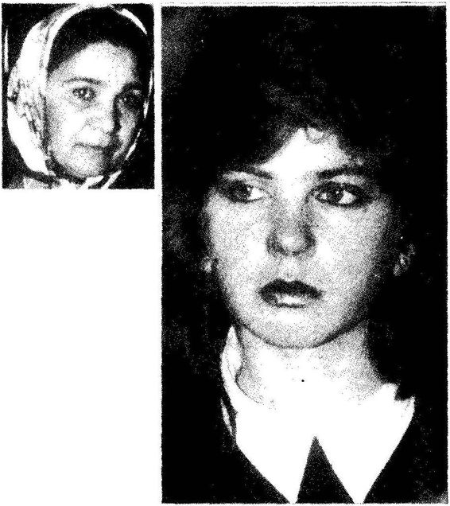
Gültekin Dağ, kOca dayağına karşı çaresizliği yüzüne de yansımış...
‘Ya beni dek ocamd överse...’
Yer Izmir Bornova. Belediye Kadın Danışma Merkezi kadınlarla cıvıl cıvıl. Genç, güzel, yeni evli, çoçuk.lu, çocuksuz kadınlar.Ortak noktaları koca dayağı. İki annesi özenç Keskinbalıkçı konuşuyor: "Evliliğimin ilk beş yılında hep dayak yedim kocamdan. Sonra bu kompleksi aştım. Eşim bana vurunca, ben de ona vurmaya başladım. Bu ne menem bir evlilik. .” Bir kol kalkıyor ürkek ve yarım. GüHekin Dağ'ın kolu bu. i ağlamaklı, "Ne yapalım, kendimizi mi yakalım" diyor. Objektif kalabalığı tararken çok genç bir kıza zum yapıyor. Bekar, yalnız, mahzun ve evlilerin ortasında...0 bakışı ile konuşuyor: "Evlenince ya beni de kocam döverse..." İZMİR, {Mal
(Hürriyet, 27 Kasım 1992)
Yakup Bey 29 Aralık 1991 tarihli NOKTA dergisinde Duygu Asena'nın bir yazısını önüme koydu. «Tribünlerdeki erkek milleti» başlıklı yazının altı çizili yerlerini okuyorum.
Tribünlerdeki erkek milleti
Linç ettiler 30yaşındaki Oktay Akdemiri, l inç. Boynuna siyah beyaz kaşkolunu taktığı ve o gün Beşiktaş, Galatasaray'ı yendiği için 30 kişi tarafından dövülerek öldürüldü. Maymun beyinli, goril suratlı o erkekler, vura vura öldürdüler Oktay'ı.
...futbol maçlarını anarşiye, savaşa, ölüm alanına çeviren bir grup "erkek milleti’ni görmezlikten mi gelelim şimdi? Hiç böyle vahşi bir kadın hareketi gördünüz mü siz?
3 1S
. ., Marş temposuyla, "ananın nakafam girsin" diye bağırıyorlarmış. Sonra o ünlü hoppa ninna nakaratlı türküyü de şöyle söylüyorlarmış: "Bahçelerde kereviz Biz kereviz yemeyiz Bize Fenerli derler Biz adamı s riz Gel gel çüküme, gel çüküme... "
Şimdi bu erkekleri küçümsüyoruz diye, "erkek düşmanı"yız değil mi biz? Hınçlarını ve zaferlerini analarının oralarıyla, onu bunu bilmem ne yapmalarıyla dile getiren bu erkekler çok şirin, çok eğlenceli ve yaratıcı oluyorlar değil mi?
Çok büyük marifet sanki bir "çük"e sahip olmak. Bütün "olmayan güç"ü orada görmek, yaşamın en kaliteli, en duygusal, en keyifli ve saygın hareketi olan sevişmeyi bu boyutlara, bu bayalığa indirgemek. Sonra o çük işe yaramayınca önce evdeki karılarını döverek işe başlayıp, sonra da karşı takımın adamlarını dövüp öldürerek "güç" gösterisinde bulunmak? Bu mu erkeklik?
Bunlar insanlığın ve de erkekliğin (çünkü kadınlarda bu tür şiddet eğilimleri görünmüyor) yüz karaları. Bizlere erkek düşmanlığı yaftasını yapıştıranlar da yine bu kesim. Yapıştırsınlar, biz yine de bunlarla savaşmayı sürdüreceğiz.
Tribünlerde "gel gel çüküme" diye bağıran bu erkek milleti, herhalde çükleri bir işe yaramadığından, bunun acısını bilek gücüyle, vurarak, yıkarak, öldürerek çıkarmaya çalışıyorlar.
Oysa biraz adam olmak için uğraşıp da bilselerdi ki o çükler bir matkap değil ve o kadar önemli de değil. Sevgiyi tanısalar yeter.
Oktay’ı öldürdünüz. Şimdi yine tribünlerinize koşun, "çük"lü haykırışlarınızla erkekliğinizi kanıtlamaya çalışın. Böylece erkek olduğunuzu sanın. Zavallılar.
"Görüyorsunuz yazar toplumumuzda «erkek davranışı» olarak adlandırılan bazı davranışların iğrençliğini gayet güzel sergilemiş.
"Kadın ve erkeğin farklı olduğunu kabul eden bazı kimseler (2), «Evet bu farklar önemlidir; ne var ki, kadınların özellikleri daha üstündür,» diyebilir. Böyle bir tutumu benimseyen kişi ilişkide olduğu kadının özelliklerini gözünde büyütür, onun kendinden daha üstün olduğunu düşünerek, kadının yaşamına yön vermesini ve ona tahakküm etmesini doğal kabul eder.
"Bir başkası (3), «Bu farklar önemlidir ve bu nedenle kadınlar kendi özelliklerini kaybetmeli ve erkekler gibi olmalıdır,» tutumu içine girebilir. Böyle düşünen biri kadınca özellikleri aşağılayacak ve ilişki kurduğu kadının erkekçe davranmasını isteyecektir. Bu kişi kızç ocuğunun geliştireceği «kadınca» davranışları, özellikleri küçümseyecek, elinden geldiğince onu «erkek» gibi yetiştirmeye çalışacaktır."
Gülerek cebinden bir kağıt çıkardı. Üzerinde «WANTED! DİKKAT!! DİKKAT!! BİR KOCA ARANIYOR» yazılı kağıdı okumam için önüme koydu. Mektup kağıdı büyüklüğündeki bir kağıt üzerine şunlar yazılıydı:
WANTED! DİKKAT!! DİKKAT!! BİR KOCA ARANIYOR
Gece ya da gündüz nerede ve kimlerle olduğumla ilgilenmeyecek, hatta randevularımı ayarlayacak;
Ben felsefe, sinema ve dünyada varolan tüm şeyleri incelerken banyomu hazırlayacak, ben küvette iken sütlü kahvemi (ben söylemeden ve sessizce) yapacak;
En sevdiğim müziklerin organizasyonunu, dolabımdaki tüm kıyafetlerin temizliğini, dağıttığım kitap, kaset, slayt 'mlayt ne varsa hepsinin derlenip toparlanmasını zevkle ama bilhassa sessizce yapacak;
Araştırılması zor konuları kütüphaneler, şahıslar ve yerler bazında yapacak, rapor haline getirecek, benden önce evimize gelecek ve yukarıda saydığım ufak tefek hazırlıkları yapacak;
Benimle havada, karada ya da su altında, istediğim pozisyonda, istediğim saatte sevişerek naz yapmayacak;
Küçük tiyatrolarımda kaprissiz başrolü oynayacak;
On beş dakikalık kısa metrajlı filmlerimde hem kısa hem uzun atlayabilecek;
Geceleri Beyoğlu'nda içip içip sızdıktan sonra kollarımdan tutup evimize götürecek;
Bazı yerlerde ise aynı sokaklarda pezevenkliğimi yapıp, oturup ağlayacak bir yürek istiyorum.
Gören yada i lgilenenlerin kadınlık adına bana haber vermelerini çok rica ederim.
(Eline kız eli değmemişler tercih sebebidir.)
EYLEM PAMUK(43j
Bir süre gülüştük, daha sonra Yakup Bey konuşmasına d evam etti: 43
(43) Bu parçayı İstanbul’dan Fikriye Kavalcı adında bir okurum şöyle bir noila göndcmıiş: ”Size komedi-karikatür dergileriden birinde bulduğum bir yang önderiyorum. «Eline kız eli değmemiş» notunu ben ekledim.”
BİR ELİN NESİ VAR, İKİ ELİN SESİ VAR 317
"Daha başkabiri (4), «Bu farklar önemlidir ve bu nedenle erkekler kendi özelliklerin kaybetmeli ve kadınlar gibi olmalıdır» diye düşünebilir. Böyle düşünen biri «erkekçe» özellikleri aşağılayacak ve ilişki içine girdiği erkeğin «kadınca» davranmasını isteyecektir. Eğer bu kişinin erkek çocuğu varsa, onun «erkekçe» davranışlarını, özelliklerini küçümseyecek, elinden geldiğince onu «kadın gibi» yetiştirmeye çalışacaktır.
"Sinerjiye önem veren biri ise (5), «Bu farklar önemlidir; bu farkları içeren ve hem erkeği hem de kadını, kendi başlarına ulaşamayacakları daha doyumlu ve zengin yaşantıya götüren bir ilişki kurulmalıdır,» görüşünü destekler. Kadın erkek ilişkilerinde sinerji yaklaşımını kabul eden bir erkek kadının bazı işleri kendinden dahaiyi yapabileceğini rahatlıkla kabul eder. İlişkide bulunduğu kadının «kadınca özelliklerine» değer verir ve bu özelliklerin kendi yaşamını zenginleştirdiğini düşünür. Aynı düşünce kadın için de geçerlidir: Kadın da ilişki kurduğu erkeğin, «erkekçe özelliklerine» değer verir ve bu özelliklerin kendi yaşamını zenginleştirdiğini hisseder. Her ikisi de, beraber oldukları zaman kendi başlarına mutlu olabileceklerinden daha mutlu, daha doyumlu olabileceklerini hissederler.
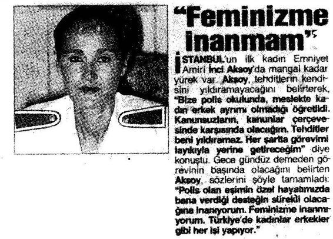
(Hürriyet, 28 Ağustos 1992)
"Nihayet başka biri (6), «Bu farklar önemsizdir, yeni bir senteze gerek yoktur» görüşünde olanlarda bulunabilir. Bu görüşteki kişiler, . ilişkide bulunduğu kişinin «kadınca» ya da «erkekçe» özelliklerinin farkında dahi değildir; yaşamlarının o yönü bir anlam ifade etmez.
Olumsuz Sinerji
"Herkesin işine yarayan üçüncü bir seçenek bulabilmek için, dikotomik, yani iki uçlu düşüncenin bırakılıp, onun yerine bambaşka bir düşünce paradigmasının kabul edilmesi gerekir. Dikotomik düşünce «ya benim dediğim ya senin dediğin,» daha da özetlersek «ben,» «sen» temeline dayanır. Sinerjik düşünce ise kazan/kazan yaklaşımı içinde biçimlenir ve «hem ben, hem sen» temeline dayanır.
"Gerçek yaşamda insanlar birbirleriyle karşılıklı dayanışma halindedirler; nevarki,izledikleri iki uçlu kazan/kaybet ya da kaybet/kazan tutumları sanki bu karşılıklı bağımlılık yokmuş, herkes birbirinin hasını imiş gibi bir gerçek öngörmektedir.
"İnsanlar «kazanmak» için karşıdakilerini küçültmeye, onların hatalarını ortaya koymaya, onları geçersiz ve güvenilmez kılmaya çalışırlar. Bu tür stratejilerle kazanacaklarını zannederler. Gerçek yaşam karşılıklı dayanışma ortamı olduğundan, başkalarını kötüleyen kişi bu arada kendini de kötülemektedir; ne var ki, kullanageldiği kalıplar nedeniyle bunun farkına varamamaktadır.
"Daha önce belirttiğimiz gibi, kişiler kendi değerlerinden ve iç dünyalarından kopuk olup, güvensizlik duygusu içinde oldukları zaman, kendilerini açmaktan korkar ve savunucu iletişime daha sıkı yapışırlar. Bu nedenle kendi görüşlerinde ısrar ederler, herkesin kendi görüşlerini aynen kabul etmesini isterler, bu görüşlerden farklı görüşlerin mutlaka yanlış olması gerektiğine inanırlar. Bu nedenle açık iletişim kuramazlar; açık iletişim kurulamayınca kişilerin gerçek düşüncelerini belirten farklılıklar ortaya çıkamaz; farklılıklar ortaya çıkıp heriki taraf bu farklılıklar üzerinde konuşamayınca sinerji oluşamaz."
Yakup Bey'e bu noktada bir soru yönelttim. Sorum pek açık seçik değildi. Sinerji sadece toplumsal yaşamın belirli yönlerinde mi kendini gösterir türünden bir soruydu. Bu soruyu kendim de beğenmemiştim. Yakup Bey, 'Evet, toplumsal yaşamın her yönünde sinerji ilkesi görülebilir" diye kısa bir açıklama yaptı ve sözüne şöyle devam etti:
Birey İçi Sinerji
"Sinerji sadece kişiler arası ilişkide söz konusu olmaz; kişinin iç yaşamında gerçekleştirilen bir tür iç sinerji de vardır. Kişinin içindeki sinerji, kişiler arası sinerjinin temelini oluşturur. Kalıplarının içim' sıkışıp kalmış ve onların ötesinde hiçbir seçenek göremeyen insanlardak işilerarası sinerji beklemek boşunadır. Kendi kendini yeniden inşa edememiş kişi ancak öğretildiği tek boyut içinde yaşamaya çalışacak ve onun ötesindeki bütün alternatifleri itecektir. Kendi kişiliği içinde bütünleşmiş, sinerjisini kurmuş kişi sağ ve sol beyin faaliyetlerini birleştirmiş ve böylece hem analitik hem de yaratıcı ve bütünsel, sezgisel düşünceye ulaşmıştır. Her ikisini de yapabilir. Yaşam sadece mantıksal değil, sadece duygusal değil, her ikisinin bir bütünü olduğundan, sadece sağ ya da sol beyin işlevleri, sorunları kendi başlarına tam çözemez.
Sinerjik İletişim
"Kişiler zihinsel, duygusal ve diğer psikolojik yönlerden farklıdırlar. Bu doğanın kaçınılmaz kuralıdır. Bu farkları önemseyip anlayarak, onları gözden kaçırmadan iletişim kurma sinerjik iletişimin temelini oluşturur.
"Kişi kendi düşünce ve algılamalarının sınırlarını öğrenince, başkalarının farklı düşüncelerini daha iyi anlamaya çalışır. Yani sinerjik iletişim kurabilmek için kişinin alçak gönüllü olması, kendinin her şeyi yapabilen kudretli kişi olmadığını bilmesi gerekmektedir. Bu tür alçakgönüllülük, diğerlerinin düşünce ve algılamalarına ilgi duyup öğrenmeye olanak sağlar. Böyle bir açılış ve ilgi, sinerjik iletişimin temelidir.
"Özellikle eğitim sürecinde sinerjik iletişime ağırlık verilmelidir. Farklı yetenek ve gelişim süreçlerini hesaba katmadan bütün sınıftaki öğrencilere aynı şekilde davranan ve aynı ölçütlerle değerlendiren öğretmen, farkına varmadan öğrencilerine zarar vermektedir. Öğretmenin bu zararlı psikolojik davranışının temelinde' koşullu ilgi, koşullu sevgi yatar: «Sen, şu anda olduğun gibi dikkate alınmaya, iliş ki kurulmaya layık değilsin. Eğer «x,» «y,» «z» gibi özellikleri olan diğer öğrencilere benzersen o zaman seni takdir eder, ilgi gösteririm,» mesajı utanca boğucu, onur kırıcıdır. Söylenmediği halde var olan, davranışların altında yatan meta düzeydeki(44) bu mesajlar maalesef çok etkilidir. Ve yine maalesef, anaokulundan üniversiteye kadar bütün eğitim düzenimiz, bu düzende yer alan öğretmen ve profesörler bu tür zararlı mesajların ocağı durumundadır.
(44) Meta düzeydeki mesajların türü ve etkisi Yeniden İnsan insana'nn 2.Bölüm'ünde ayrıntılı olarak tartışıldı.
"İnsanlar sinerjiyi yaşamlarında kullanabilecek hale geldikleri zaman daha etkili ve daha mutlu olurlar. «Gelişmiş» insan her türlü koşullar altında sinerjik iletişimi uygulama olanağını arar.”
Bu sözlerinden sonra Yakup Bey acıktığını Laleli'deki lokantaya kendisine katılıp katılmayacağımı sordu. Memnuniyetle kabul ettim. Lokantada planladığı konuların sonlarına yaklaştığımızı, önümüzdeki birkaç buluş mada ilk düşündüğü programın sonuna varacağını belirtti.
Birden bire içimi hüzün kapladı. Sanki Yakup Bey'i bir daha göremeyecekmişim gibi geldi. İçimden geçenleri bilen bir insan tavrıyla Yakup Bey, "Biz istersekyine buluşmamıza devam eder ve dostluğumuzu sürdürürüz; ama konuştuğumuz konular farklı olur” dedi.
Son sözleri içimdeki hüznü bir derece yok etti. Yemekten sonra ondan ayrıldım.
Başarıyı hedef alın; mükemmel olmayı değil. Yanlış yapma hakkınızdan vezgeçmeyin; vazgeçerseniz yeni şeyler öğrenme ve gelişme olanağınızı kaybedersiniz.
Unutmayın;m ükemmelliyetçiliğin arkasında korku yatar.
İnsan olduğunuzu hatırlayarak korkularınızı göğüsleyin.
Daha mutlu ved aha etkili bir insan olursunuz.
DA VID M. BURNS
KENDİNİ GELİŞTİRME
Yakup Bey'le Beyazıt Camii'nin yakınındaki çayevinde buluştuk. Ihlamurlarımızı ısmarladıktan sonra Yakup Bey, "Sizinle ilkbuluştuğumuz zaman «gelişmiş» insan kavramını baştan sona inceleyen bir program düşünmüştüm. Kafamdaki bu program çerçevesinde konuları seçerek tartıştık. Bugünkü buluşmamız programın son buluşması olacak" diyerek söze başladı. Yüzümdeki ifadeyi görünce, "Tabii, biz yine biraraya gelip, dostluğumuzu sürdürebiliriz" diyerek beni teselli etti. Bir süre sonra konuya girdi:
"Kendini geliştirmenin iki düzeyi vardır: (1) Kalıplarının bilincine vararak onların etkisinden kurtulup, kişinin kendi temel ilke ve değerlerini keşfetmesi, (2) kendi temel ilke ve değerlerini keşfetmiş insanın bu değerleri günlük yaşama etkili biçimde uygulayabilmesi için kendini yenilemesi."
Bu iki noktayı birbirinden ayırt edebildiğimden emin olmak istercesine bir süre sustu ve "Bu iki adım da önemli ve önemli olduğu kadar da zordur" dedi.
"«Kalıplanmış» insan olmaktan çıkarak «gelişmiş» insan haline geçebilmek, her şeyden önce kişinin kendi kalıplarının farkına varmayı, bu kalıpların dışında da anlamlı dünyalar olduğunu görebilmeyi gerektirir. Bu aşamaya «uyanış» aşaması adını verebiliriz." Yakup Bey İçimizdeki Çocuk adlı kitabı göstererek, "Bu kitabın altıncı kısmında kişinin içindeki çocuğu keşfetmesi ve yeniden eğitmesi ile ilgili oldukça etkili egzersizler var. Bu egzersizleri ciddiyetle yapan kişi «uyanarak» kendi çocukluğundan getirdiği kalıpları keşfedebilir. «Uyanan» kişi hayal ve irade gücünü, bilinç ve vicdanını kullanarak keşfetmiş olduğu kalıplardan kurtulup kendine özgü temel ilke ve değerleri bulmaya yönelebilir."
"Bu zor işi başaran ve kalıplardan kurtulan insanın gelişmeye devam edebilmesi, günlük yaşamına kendi ilke ve değerlerini yansıtabilmesi ikinci basamağı oluşturur. Şimdi bu ikinci basamaktan söz edeceğim."
Yakup Bey ıhlamurundan birkaç yudum aldıktan sonra konuşmaya devam etti:
Kendini Yenilemenin Dört Boyutu
"Kişinin sahip olduğu yetenekleri koruma ve geliştirmeye kendini yenileme diyoruz. Kendi gelişmesine yatırım yapan insan yapılacak en akıllıca işi yapmaktadır. Daha önce gözden geçirmiş olduğumuz etki ve ilgi çemberleri çerçevesinde düşünüldüğünde görülür ki, kişinin kendi yaşamına yatırım yapına davranışı onun etki çemberi içine girer. Kendini geliştirme davranışı, kişiyi zamanla daha etkili yapar. Bu nedenle kendini yenileyen kişinin etki alanı büyür."
Etki alanının büyüdüğünü göstermek için Ya kup Bey kağıt üzerine içiçe biri büyük, diğeri küçük iki daire çizdi ve konuşmasını şöyle sürdürdü:
"Kendini yenilemenin dört temel boyutu vardır: (1 l Bedensel, (2) zihinsel, (3) sosyal ve (4) manevi.
”1. Bedensel boyut. Bedensel boyut yeme-içme, dinlenme ve stresle başa çıkma, egzersiz gibi yönleri kapsar.
"a) Yeme içme, yani beslenme ayrı bir bilim dalıdır ve bu alanda önemli bulguları ortaya çıkaran incelemeler sürd ürülnıektedir.
"b) Dinlenme ve stresle başa çıkma konusu da fizyolojik psikolojinin ayrı bir çalışına alanıdır ve önemi gittikçe endüstrileşen toplumumuzda daha iyi kavranmaktadır.
"c) Egzersiz, üç yönü içerir: i) kalple ilgili dayanıklılık, ii) gerilme ve gevşeme ile ilgili esneklik, iii) ağırlık kaldırma ve kasları kuvvetlendirmeyle ilgili güçlülük.
"2. Zihinsel boyut. Okumak, düşünmek, kendini ifade etmesini iyice öğrenmek için yazmak, bilim sanat ve teknolojide yeni gelişmeleri öğrenmek bu boyuta girer.
"Sürekli TV seyretmek kişinin seçim yapmadığının işaretidir ve zihni körleştirir. Seçerek TV seyretmek ve seçerek okumak gerekir.
Bu noktada biraz durdu, yüzüme baktı, ıhlamurundan bir yudum aldı ve söylediği şeyin önemli olduğunu ifade eden bir insanın yüz ifadesiyle üzerine basa basa, "Okumayan insan ile okuyamayan insan arasında bilgi bakımından pek fark yoktur" dedi.
"Gündebirsaatini kendini zihnen geliştirmeye veren insanınyaşamı daha zengin ve çok yönlü olur. Okumak kişinin kalıplarından kurtulup kendini geliştirmesi yönünde atacağı ilk adımlardan en etkilisi olabilir. Kendi temel ilke ve değerlerini keşfetmek isteyen kişinin zihnini uyanık ve akıcı tutması kaçınılmaz bir gerektir.
”3. Sosyal ve duygusal boyut. Sosyal yaşam eninde sonunda kişinin iç dünyasını yansıtır. Kişi sosyal yaşamında, «ne ekerse, onu biçer». Kendi ilke ve değerleri çerçevesinde dürüstlük, hizmet ve kişisel bütünlükle diğerleriyle empatik iletişim kuran kişinin sosyal yaşamı, yani arkadaş ve dost çevresi, kendi kalıplarını merkez edinmiş savunucu kişinin sosyal yaşamından daha farklı olur. Bu nedenle, bütün ağırlığı sosyal yaşama verecek yerde, önce kendi temel ilke ve değerlerinin keşfedilip geliştirilmesine önem vermek gerekir."
Yakup Bey bu noktada bir süre sustu, yüzüme baktı ve kendisini rahatlıkla izleyip izleyemediğimi denetlercesine beni süzdü. Söylediklerini rahatlıkla izleyebiliyordum. Söyledikleriyle benim gerçek yaşamda gözlediklerim arasında farklar vardı. Aklımdan geçenleri duymayı beklercesine bana bakıyordu; konuştum:
"Yakup Bey, ben küçükken ve hala şimdi çevremde sık sık, «Şöyle yapma ayıp, böyle yaptığını başkası görmesin, başkaları ne der,» gibi sözleri duydum ve duyuyorum. Ama, «Önce' kendi değerlerini keşfet,b aşkasınınnediyeceğinden ziyadebudeğerlerle ahenkli yaşamanönemli» gibi sözleri hiç duymuyorum. Bu nedenle sizin burada söylediklerinizi anlıyorum; nc var ki, sanki bir hayal âleminde imişim gibi, bu söyledikleriniz gerçekte uygulanamazmış gibi bir duyguyla dinliyorum" dedim.
Yakup Bey gülümseyerek, "Böyle olması hiç tuhafıma gitmiyor. «Kalıplanmış» insan paradigmasının gözlüğünden, «gelişmiş» insan paradigmasının hikayesini seyrediyorsun; doğal olarak sana aşina gelmeyecek" dedi.
Bu söz üzerine ikimiz de gülümsedik. Yakup Bey ıhlamurundan birkaç yudum aldıktan sonra konuşmasına devam etti:
”4. Manevi yaşam boyutu. Manevi yaşam kişinin özünü ifade eder; son derece kişiye özgüdür ve kişinin yaşamının diğer bütün yönlerine renk verir ve yönlendirir. Kişinin değerleri ve ilkeleri çoğu kez kaynaklarını burada bulur. İnsanın manevi yaşamı evrensel ilkeler üzerine kurulmuşsa, bu kişinin yaşamının her yönü bu temel ilkeleri yansıtır. (45> "Manevi yaşamı zengin kişi günlük yaşamın güçlüklerini ezilmeden, yorulmadan, strese boğulmadan yapar. Bu nedenle manevi yaşamı zenginleştirmek yönünde yapılan zaman yatırımı kayıp değil, önemli bir katkıdır."
Yenilenmede Denge
"Kişilerin bu dört boyutta dengeli olarak gelişmesi gerekir. Sadece bedensel boyuta önem veren yenilenme kişinin dış görünümünü, bedensel sağlığını artırır; ne var ki, o kişinin zihinsel, sosyal ve manevi yaşamında gelişme olmazsa, bu kişinin yaşamında dengesizlik oluşacaktır. Dengesiz gelişme sağlıksızdır. Bu söz, kişiler için olduğu kadar, kuruluş ve şirketler için de geçerlidir."
Yakup Bey, "Şirketle ilgili paralel bir örnek verebilirim, ilgilenir misin?" diye sordu. İlgilendiğimi söyledim. Konuşmasına şöyle devam etti:
"Şirkette bedensel boyut, para ve kazançtır. Zihinsel boyut şirketin işleyiş biçimini ayarlayan kurallardır; bu kurallar kimlerin ne zaman takdir edileceğini, gelişme süreçlerinin nasıl ve ne zaman yönlendirileceğini ve çalışanların yeteneklerini nasıl keşfedilip kullanılacağını belirler. Sosyal boyut insan ilişkilerinin kalitesini, kişiler arası sürtüşme
(45) Manevi yaşamın niteliği, bireyin yaşamındaki önemi, din kurumuna benzer ve farklılığı içimizdeki Çocuk ta (s.235-244) ayrıntılı olarak tartışılmıştır.v e çatışmaların niteliği ve niceliğini ve bunların çözümünde gerekli ortamın oluş umunu ifade eder. Şirketin dayandığı temel ilke ve değerler, müşterilerine ve genel olarak topluma yaptığı katkının türü onun manevi yaşamının temelini oluşturur.
"Bireyin yaşamında olduğu gibi, bir şirkette de bu alanlardan herhangi biri geliştirilmez ve denge bozulursa, ihmal edilen alan negatif güç kazanır. Bu tür negatif güç, büyüme ve etkililiği engeller. Bu dört boyutu sürekli yenileyen ve kuvvetlendiren organizasyonlar dengeli gelişmeyi sürdürürler. Japonların Tam Kalite Hareketi (Total Quality Movement) dedikleri durum bu dengeden kaynaklanmaktadır."
Kişisel yaşamla şirketin yönetilişi arasındaki paralellik kuruşu hoşuma gitmişti. Yakup Bey bu tür bir örnek vermekle, kullandığı kavramların geniş bir kullanım alanı olduğunu göstermiş oluyordu.
Ihlamurunu yudumlarken bir süre düşündü ve sonra konuşmaya başladı:
Kendini Yenilemede Sinerji
"Dört boyuttan herhangi birinde kendini geliştiren kişi, ister istemez diğer boyutlarda da kendini geliştirme gereksinimi duyar. Boyutlar kendi aralarında ilişkili olduğundan bu kaçınılmazdır."
"Aynı şekilde kalıplarının birinden kurtulan ve gelişme yönünde adım atan biri, kendini kısıtlayan diğerkalıpları da zayıflatacak adımlar atmaya hazır hale gelir. Daha önce sözünü ettiğimiz girişimci tutum, iç dünyasını temel ilke ve değerler üzerine kurarak lider olma tutumu ve yaşamındaki önemli olanları önemsiz olanlardan ayırt etmeye olanak veren öncelikleri belirleme tutumundan birinde yapılan ilerleme, diğer tutumlarda ilerlemeye yol açacaktır.
"Örneğin girişimci olmak bireyi doğal olarak lider durumuna getirir; lider durumundaki kişi önceliklerinin bilincinde olmak zorundadır. Lider olarak yaşamını daha etkili biçimde yönetmeye başlayınca insanın kendini yenilemeye daha çok zamanı olur. Bu gelişim süreci insan ilişkilerinin değerini ve gerçeğini anlamaya yol açar. Bu anlayış kişiyi kazan/kazan tutumuna götürür. İnsan ilişkilerinin değerini ve gerçeğini anlayan kişi iyi dinler, önce anlar daha sonra konuşur. Bu tür insan ilişkileri ise kişiyi sinerjiye götürür."
"Bedensel yenilenme, egsersiz yapma, gıda ve istirahat, bireyin kendine verdiği değerin bir ifadesidir. Bu egzersizler bireyi kendinden daha haberdar eder; kendi iradesiyle hareket edebileceğini, davranışlarını başkalarının değil, kendinin oluşturabileceğini kendisine kanıtlar. Bu yöndeki gelişmesini gördükçe, bireyin günlük başarıları, onun kendine olan güvenini artırır.
"Bireyin zihinsel gelişmesi, bilgi ve becerilerinin artması, ona daha zengin ve çok boyutlu algılama ve karar verme olanağı verir. Daha önce sınırlı görünen çevrenin boyutları değişir ve karşısına yeni yaşam seçenekleri çıkmaya başlar.
"Manevi yaşam boyutunda gelişme, bireyin evrenle, toplumla, doğayla ve kendiyle, kısacası yaşamının her yönüyle nasıl ilişki içinde olduğunu ona gösterir ve en derin ilke ve değerlerini keşfetmesine yol açar. Kişinin iç dünyasının zenginliği, onun kendine duyduğu güvenin kaynağı olur."
Yakup Bey, "Vicdanı geliştirmek en zorudur" dedi ve bana bakarak bir an sustu. Ihlamurundan bir yudum aldı ve konuşmasına devam etti:
"Vicdanın sesi çok yumuşaktır, fakat açık seçik ve berraktır. Bu ses insanı evrensel ilkelere, kişisel bütünlüğe doğru yöneltir. Bütün tutumları tam anlamıyla gerçekleştirebilmek için kişinin vicdanının sesini dinlemesi gerekir. Vicdanın gelişimi için iyi çevreye, kaliteli kitaplar okumaya, zengin manevi yaşama gerek vardır. Uzun dönemde ne ekersek onu biçeriz, ne eksiğiyle, ne de fazlasıyla. Temel değerler ne kadar doğru ve geçerli ise, yaşam paradigmaları ne kadar bu temel değerler üzerine kurulursa, kişinin yaşamdan alacağı sonuçlar o kadar geçerli ve anlamlı olacaktır."
Yakup Bey konuşmasını bitirince daha önce sormak istediğim fakat ertelenmiş olan bir konuyu düşündüm. Kendisine sormak istediğim bir sorum olduğunu belirttiğim zaman, "Sorularını sormanın zamanı geldi; istediğin soruyu sorabilirsin" diye olumlu cevap verdi.
Sorularımın Cevabı
Bana bu kadar zaman ayırmasının altında yatan nedeni sormak istiyordum. Kendisinin bana karşılıksız böylesine zaman vermesini ve beni kendi eşiti kabul ederek etkileşimde bulunmasını anlamakta zorluk çektiğimi söyledim. Kendisine etkili zaman kullanımı uygulayıp uygu Jamadığını sorduğum zaman, "Evet, uyguluyorum" diye cevap verdiğini hatırlattım.
"Kimsenin bana ayırmadığı kadar zaman ayırarakbenim için önemli kavramları, bilgileri vebecerileribenimle paylaştınız. Benimlebuluş manızdan kuşkusuz yararlanıyorum; ne var ki, bunun size ne gibi yararı var, onu göremiyorum" dedim.
Yakup Bey, "Evet, sorunuzu hatırlıyorum; şimdi cevaplamanın zamanı geldi" diyerek tazelenen ıhlamurundan bir yudum aldı ve konuşmasına devam etti:
”Bu sorunun cevabı benim manevi yaşam anlayışımda yatıyor. Biliyorsunuz manevi yaşam son derece kişiye özgü, öznel ve derin duygusal tonu olan bir konudur. Bu nedenle benim kendi manevi yaşam anlayışımla sizin anlayışınız büyük olasılıkla birbirine uymayacaktır.
"Sorduğunuz sorunun cevabını vermeden önce ben size bir soru sorayım: Şimdiye kadarki konuşmalarımız süresince, kendi manevi yaşam anlayışımı size empoze ediyormuşum hissine kapıldığınız oldu mu?"
Hiç düşünmeden, "Hayır, sizin manevi hayatınızla ilgili herhangi bir belirti, bir yükleme ya da empoze ediş hissetmedim; böyle bir duyguya kapılmadım" diye cevap verdim.
Yakup Bey memnuniyetini ifade eden bir gülümseyişle, "Güzel, buna memnun oldum; çünkü benim böyle bir niyetim yoktu zaten. Şimdi de yok" dedi ve konuşmasını şöyle sürdürdü: 'Sorunuza cevap verebilmek için kendime özgü manevi hayat anlayışımı anlatmak durumundayım . Böyle bir anlayışı kabul etmeni beklemem; nevar ki, saygı duymanı beklerim."
Bir süre sustu, ıhlamurundan birkaç yudum aldı. Neleri, nasıl söyleyeceğini düşünen bir hali vardı. Konuşmaya başladı: .
"Ben evrenin anlamlı bir bütün olduğuna inanıyorum. Size niçin böyle bir inancım olduğunu anlatmayacağım. Şu 65 yıllık ömrümdeki yaşantılarım, sezgilerim, gözlemlerim beni böyle bir inanca getirdi."
Burada bir süre sustu, ıhlamurundan bir yudumaldıve açıklamasına devam etti:
"Benim için «anlam» ilişki demektir. Herhangi bir şeyi «anlamsız» buluyorum demek, o kavram, nesne ya da şeyle, benim farkında olduğum yaşantılarını, deneyimlerim arasında bir ilişki kuramıyorum demektir. Diğer taraftan, herhangi bir şeyi «anlamlı» buluyorum demek, o kavram, nesne ya da şeyle, benim farkında olduğum yaşantılarım, deneyimlerim arasında bir ilişki kurabiliyorum demektir."
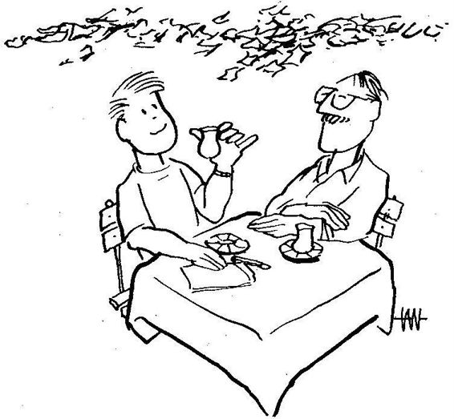
Yakup Bey yüzüme baktı, gülümsedi, sanki söylemekten utanıyor gibi bir hali vardı. Konuşmasına bu mahcup gülümseyişle devam etti:
"İlk gün sizinle karşılaştığımız anı hatırlıyor musunuz?" diye bana sordu. Evet anlamında başımı salladım. Yakup Bey, "Sizinle tanışmamızın tesadüfi olmadığı duygusu uyandı bende" dedi.
Yüzüne hayretle bakakalmıştım. O konuşmasına devam etti:
"Bu sadece bir his, bir sezgi. Tabii tamamiyle yanılabilirim. Ama bu duygu beni düşündürdü.
"Yalnız, kaybolmuş, acı çeken genç bir insanın yüzü gözümün önünden gitmiyordu.
"Siz evrenin, hiç olmazsa benim evrenimin parçası olarak karşıma çıktınız; o andan itibaren benim için var oldunuz. Ya sizi tanıyacaktım; yanibu olaya bir anlam verecektim, ya da tanımayacak, kendi yaşamımı eskisi gibi sürdürmeye devam edecektim. Sizi tanıma ya da tanımama konusunda tereddüdüm oldu. Sahaflar Çarşısındabenibulabileceğinizi söylemeden önce, tereddüt ettim. Ama bu tereddüt uzun sürmedi; sezgi düzeyinde verilmiş kararı söze vurdum, kendimi tanıttım ve beni nerede bulabileceğinizi söyledim.
"Bu kararımın altında sadece size yardım etme duygusu yatmıyordu. Sizi o anda tanımazsam, kendimle ilgili önemli bir yönümü yok edeceğimi fark ettim."
Yakup Bey'in ne demek istediğini anlayamamıştım. K riıdhlııe. "Kendinizle ilgili önemli bir yönünüzü nasıl kaybedecektim/, Mm/ açıklar mısınız?" diye sordum.
Sustu; alnı kırıştı; ifade etmesi zor bir düşünceyle uğraştığı belli oluyordu. Ihlamurundan bir yudum aldı. Açıklamasını şöyle sürdürdü:
"Bende yılların getirdiği deneyimlerin birikimi var. 65 yaşındı), sizin o gün içinde bulunduğunuz yalnızlığın, bunalımın, zihinsel keşmekeşin ne olduğunu bilen bir insandım. Bendeki bütün bu birikimin «anlamlı» olabilmesi için o gün sizi kendi evrenim içinde tanımam ve size ulaşmam gerekiyordu. Aksi halde 65 yıllık birikimimin «anlamsız» olduğuna önce kendimi inandırmış olacaktım."
Yakup Bey'e bakakalmıştım. Ne söyleyeceğimi bilemiyordum. Hiç tanıdık olmadığım bir düşünceyle karşıma çıkmıştı.
Ama söyledikleri bana anlamlı geliyordu. O anda bu kitabı yazma fikri içimde doğdu. Yakup Bey'İe geçen günlerimin, ondan öğrendiklerimin «anlamlı» olabilmesi için, diğer insanlara ulaşması, onlarla ilişki kurması gerekiyordu. içimde bir mutluluk duygusu kabarmaya başladı. Mutluluğumun farkına varınca, «Bu duygu evren içinde «anlamlı» bir karar almamdan kaynaklanıyor herhalde,» diye düşündüm.
Yakup Bey, "Sorunuzun cevabını alabildiniz mi?" dercesine yüzüme bakıyordu. Evet anlamıştım. Sadece kendine değil, gittikçe anlam kazanan yaşamımın temelinde yatan süreci de bana göstermişti. İçimden kalkıp ellerini öpmek, sonra da doyasıya kucaklamak geçti. Ama bunları yapmadım. Yapmak istediğimi gözlerim söylemişti ve onun anlayan gözleri görmüştü. Gerçek ve güvenilir olan bir sevgi denizinde hissettim kendimi. Şu anda benim de evrenim anlamlı bir bütündü ve bu duyguyu hiç kaybetmek istemiyordum.